Discover
Meteor
Building Real-Time JavaScript Web Apps
Version 1.8 (updated 2015年2月10日)
简介
1
先来活动一下大脑。假设你坐在电脑面前，在两个窗口中打开同一个文件夹。
在其中一个窗口中删除一个文件，另一个窗口中的这个文件会消失吗？
不用实际操作你也知道肯定会消失的。在本地文件系统中的操作，不用刷新或者回调，变动就能应用到所有地方。
我们再来看一下相同的事情在网页中会有什么结果。例如，你在两个浏览器窗口中打开同一个 WordPress 后台页面，在其中一个窗口中新建了一篇文章。和桌面系统不同的是，不管等待多长时间，另一个窗口都不会发生变化，除非你手动刷新网页。
过去这些年，我们已经习惯了，人和网站之间的通信是离散的。
但是，作为新一代框架和技术之一的 Meteor，尝试挑战这一现状，让网页能够实时和响应。
Meteor 是什么？
Meteor 是一个构建在 Node.js 之上的平台，用来开发实时网页程序。Meteor 位于程序数据库和用户界面之间，保持二者之间的数据同步更新。
因为 Meteor 是基于 Node.js 开发的，所以在客户端和服务器端都使用 JavaScript 作为开发语言。而且，Meteor 程序的代码还能在前后两端共用。
Meteor 这个平台很强大，网页程序开发过程中的很多复杂、容易出错的功能都能抽象出来，实现起来很简单。
为什么使用 Meteor？
那么，你为什么要花时间学习 Meteor，而不去学其他框架呢？拨开 Meteor 的各种功能，我们认为原因只有一个：因为 Meteor 易于学习。
而且，和其他框架不同，使用 Meteor，几小时之内就能开发出一个正常运行的实时网页程序。如果之前做过前端开发，对 JavaScript 已经有所了解，甚至都不用再学习一门新的编程语言。
Meteor 可能就是你要找的理想框架，当然，也可能不是。既然只要几晚或一个周末就能上手，为什么不试试呢？
为什么选择这本书？
在过去的几年中，我们一直在开发很多个 Meteor 项目，范围从网站到移动应用，从商业项目到开源项目。
我们学到了很多，但总是不那么容易找到问题的答案。我们不得不从不同来源讲东西拼凑在一起，并且在许多情况下，我们甚至创造了
我们自己的解决方案。所以通过这本书，我们想分享所有这些经验教训，并创建了一个简单的一步一步的指导，来引导你从零开始构建一个完整的 Meteor
应用。
我们即将构建的应用是一个简化版的社交新闻网站，类似 Hacker News 或 Reddit ，我们称之为 Microscope（借鉴 Meteor 开源应用 Telescope ），在开发的过程中，我们会解决 构建 Meteor 应用所会遇到的各种要素，例如用户账户、Meteor Collection、路由等等。
这本书为谁编写？
我们在写这本书时，目标之一就是要让内容通俗易懂。所以，即使你没有任何 Meteor、Node.js、MVC 框架或服务器端编程经验，都能够读完这本书。
但另一方面，我们也假设你熟悉基本的 JavaScript 语法和概念。但是如果你曾经玩过一些 jQuery 代码或接触过浏览器开发者控制台，你应该是没有问题的。
如果你还不太熟悉 JavaScript，我们建议你在开始阅读本书之前，先阅读一下我们的 JavaScript primer for Meteor （英文）。
关于作者
如果你想知道我们是谁，为什么要相信我们，这里是两位作者的一些背景介绍。
Tom Coleman 是 Percolate 工作室 的一员。Percolate 工作室是一个程序开发商，致力于高品质的产品和用户体验。他也是 Atmosphere 包仓库的维护人之一，同时也参与开发了多个 Meteor 开源项目（例如 Iron Router ）。
Sacha Greif 是一名产品设计师和网页设计师，为创业项目工作，例如 Hipmunk 和 RubyMotion 。他开发了 Telescope 和 Sidebar ，还是 Folyo 的创始人。
章节和附录
我们希望这本书对 Meteor 初学者和有经验的程序员都有所帮助，因此把内容分成了两类：常规的章节（1-14 章）和附录（带 .5 的序号）。
常规的章节会讲解如何开发程序，尽量保证你能跟着我们的步伐实际操作，只关注开发过程中最重要的步骤，不会太深入细节。
而附录则会深入 Meteor 错综复杂的细节，帮助你更好的理解背后到底发生了什么。
如果你是初学者，第一次阅读完全可以跳过附录，熟悉 Meteor 之后再回过头来阅读。
代码提交和线上演示
阅读编程相关的书籍时最怕遇到这种事情，虽然一直跟着书中的步骤，但突然发现代码和示例不一样了，而且程序也不能正常运行。
为了避免这种情况发生，我们特意在 GitHub 上为 Microscope 建了仓库 。改动一些代码后，会给出指向 git 提交的链接，而且还会链接到该提交对应的线上演示，方便和你自己本地的版本对比。下面一个示例：
我们提供的代码提交链接，并不是为了让你使用 git checkout 从一个提交跳到另一个提交。自己动手输入程序的代码，学习效果才能更好。
一些其他资源
如果想更深入地学习 Meteor 的各项功能，最好的资料就是官方文档 。
遇到问题我们建议到 Stack Overflow 网站上寻找帮助。如果想获得实时帮助，可以加入 IRC 的 #meteor 频道。
联系方式
开始
2
第一印象十分重要，安装 Meteor 并不会遇到什么困难。大多数情况下，在五分钟内便可以完成。
首先，我们打开终端窗口，输入以下命令来安装 Meteor：
$ curl https://install.meteor.com | sh以上命令会在系统中安装 meteor 可执行文件，然后就可以使用 Meteor 了。
选择不安装 Meteor
如果你无法或者不想在本地安装 Meteor ，我们推荐你使用 Nitrous.io 。
使用 Nitrous.io 可以让你在览器中直接编辑代码并运行程序。我们撰写了一篇简短的指南 ，介绍如何使用 Nitrous.io。
你可以一直阅读那篇指南直到“Installing Meteor”部分，然后再回到本章，从“创建简单的应用”一节开始阅读。
创建简单的应用
安装好 Meteor 之后，我们来创建一个应用。创建应用要使用 Meteor 的命令行工具 meteor：
$ meteor create microscope上述命令会下载 Meteor，然后新建一个基本可用的 Meteor 项目。命令执行完成后，会看到新建了一个文件夹，名为 microscope/，包含以下文件：
.meteor
microscope.css
microscope.html
microscope.js
Meteor 生成的应用只是一个简单的骨架，演示一些简单的模式。
虽然这个应用没什么功能，但也能运行。要运行应用，请切换到终端，输入下面的命令：
$ cd microscope
$ meteor现在打开浏览器，访问 http://localhost:3000（或者等效的 http://0.0.0.0:3000），应该能看到下面的网页：
Meteor 的 Hello World 网页 提交 2-1 创建 Microscope 项目的基础文件
恭喜！你的第一个 Meteor 应用顺利运行了。顺便说一下，如果想停止运行程序，只要切换到对应的终端窗口按 ctrl+c 键即可。
如果你使用 Git，正是时候用 git init 来初始化你的项目仓库。
再见 Meteorite
曾经有段时间，Meteor 依赖于外部代码包管理器 Meteorite。自从 Meteor 0.9.0 版本以后，就不再需要 Meteorite 了，因为它的功能已经融入 Meteor 之中。
所以，如果你在这本书或在浏览 Meteor 相关的资料时，遇到 Meteorite 的 mrt 命令行工具，你可以放心地用 meteor 来替换它。
添加代码包
下面我们使用 Meteor 的 package 系统在项目中引入 Bootstrap 框架。
这与通常手动添加 Bootstrap 的 CSS 和 Javascript 文件的方法是没有区别的，只不过我们依赖代码包维护者来为我们更新这些文件。
既然我们说到此，我们也来添加 Underscore 代码包。 Underscore 是一个 JavaScript 工具库，对于操纵 JavaScript 数据结构非常有用。
截至写这本书时，underscore 代码包依然算作 Meteor “官方”的代码包，所以这个包没有作者：
meteor add twbs:bootstrap
meteor add underscore
注意的是现在我们添加了 Bootstrap 3 。而这本书中的一些截图是老版本的 Microscope 使用 Bootstrap 2 时截取的，所有它们看起来会有稍微不同。
提交 2-2 添加 bootstrap 和 underscore 代码包
一旦你添加了 Bootstrap 代码包，你应会注意到我们应用的变化：
添加了 Bootstrap. 与“传统”方式添加外部资源不同，我们还没有链接任何 CSS 或 JavaScript 文件，因为 Meteor 已经帮我们搞定了！这就是 Meteor 代码包的众多优势之一。
关于代码包
Meteor 中的代码包有点特殊，分为五种：
Meteor 核心代码本身分成多个核心代码包 （core package），每个 Meteor 应用中都包含，你基本上不需要花费精力来维护它们
常规 Meteor 代码包称为“isopack ”，或同构代码包（isomorphic package，意味着它们既能在客户端也能在服务器端工作）。第一类代码包 例如 accounts-ui 或 appcache 由 Meteor 核心团队维护，与 Meteor 捆绑 在一起。
第三方代码包 就是其他用户开发的 isopack 上传到 Meteor 的代码包服务器上。你可以访问 Atmosphere 或 meteor search 命令来浏览这些代码包。本地代码包 （local package）是自己开发的代码包，保存在 /packages 文件夹中。NPM 代码包 （NPM package）是 Node.js 的代码包，虽不能直接用于 Meteor，但可以在上述几种代码包中使用
Meteor 应用的文件结构
开始编写代码之前，我们必须要正确的设置项目。为了保证项目整洁，请打开 microscope 文件夹，删除 microscope.html、microscope.js 和 microscope.css。
请在 microscope 文件夹中新建四个子文件夹：/client，/server，/public 和 /lib。然后在 /client 文件夹中新建两个空文件：main.html 和 main.js。如果程序无法运行了先别担心，从下一章开始我们会编写代码。
值得一提的是，上述文件夹中有一些拥有特别的作用。关于文件， Meteor 有以下几条规则：
在 /server 文件夹中的代码只会在服务器端运行。
在 /client 文件夹中的代码只会在客户端运行。
其它代码则将同时运行于服务器端和客户端上。
请将所有的静态文件（字体，图片等）放置在 /public 文件夹中。
知道 Meteor 以什么顺序加载文件也很有用：
在 /lib 文件夹中的文件将被优先载入。
所有以 main.* 命名的文件将在其他文件载入后载入。
其他文件以文件名的字母顺序载入。
需要注意的是，即便 Meteor 包含上述规则，这并不意味着它强制你为你的 Meteor 应用采用任何预设的文件结构。上述结构只是我们的建议，并不是一成不变的。
对此如果你想了解更多，我们强烈建议你参阅 Meteor 官方文档 。
Meteor 采用 MVC 架构吗？
如果你之前有过在其它诸如 Ruby on Rails 框架下开发的经历，此时你心中可能会有这样的疑问， Meteor 采用 MVC（Model View Controller）架构吗？
简短的回答是，不。与 Rails 不同，Meteor 并不为你的应用强加任何预设的架构。因此本书将直接给出我们认为最合理的代码，而不对任何现有架构作过多考虑。
不需要 public 文件夹？
好吧，我们承认在之前小小的忽悠了大家一下。其实我们并不需要为我们的应用建立一个 public/ 文件夹，因为 Microscope 并不需要使用任何的静态文件。但是值得注意的是，大多数 Meteor 应用都会或多或少使用一些图片，因此我们觉得 public/ 文件夹还是值得一谈的。
另外，你可能注意到了一个隐藏的 .meteor 文件夹。这是 Meteor 存储它内部代码的地方，尝试更改里面的内容并不是什么好主意。事实上，你根本不需要关心其中的内容。有两个例外是 .meteor/packages 文件和 .meteor/release 文件。它们分别列出了你安装的所有智能代码包和你使用的 Meteor 版本。当你为你的应用添加代码包或更改 Meteor 版本时，查看这两个文件的变更可能会为你带来一些帮助。
下划线命名法 vs 驼峰命名法
对于历史悠久的下划线命名法（my_variable）和驼峰命名法（myVariable）我们认为选择哪种并不重要，只要你坚持在项目中贯彻它。
在本书中，我们将采用驼峰命名法，因为它是 JavaScript 中的惯例（毕竟它叫 JavaScript 而不是 java_script 呀！）。
对此唯一的例外是，对文件的命名，我们将采用下划线命名法（my_file.js）。对于 CSS 类，我们将使用连字号（.my-class）。这样做的原因是在文件系统中，下划线命名法最常见，而 CSS 语法本身就使用连字号作为连接（比如 font-family，text-align等）。
搞定 CSS
本书并不侧重于 CSS 。所以为了避免在 CSS 细节上花费过多时间，我们决定在本书一开始就为大家提供完整的 CSS 文件。因此你不必再担心这个问题。
CSS 文件将被 Meteor 自动加载并简化。因此，不同于其它的静态文件都被放置于 /public 文件夹，请将 CSS 文件放入 /client 文件夹。请创建一个 client/stylesheets/ 文件夹并将以下 style.css 文件放置入内。
.grid-block , .main , .post , .comments li , .comment-form {
background : #fff ;
border-radius : 3px ;
padding : 10px ;
margin-bottom : 10px ;
-webkit-box-shadow : 0 1px 1px rgba ( 0 , 0 , 0 , 0.15 );
-moz-box-shadow : 0 1px 1px rgba ( 0 , 0 , 0 , 0.15 );
box-shadow : 0 1px 1px rgba ( 0 , 0 , 0 , 0.15 ); }
body {
background : #eee ;
color : #666666 ; }
#main {
position : relative ;
}
.page {
position : absolute ;
top : 0px ;
width : 100 % ;
}
.navbar {
margin-bottom : 10px ; }
/* line 32, ../sass/style.scss */
.navbar .navbar-inner {
border-radius : 0px 0px 3px 3px ; }
#spinner {
height : 300px ; }
.post {
/* For modern browsers */
/* For IE 6/7 (trigger hasLayout) */
* zoom : 1 ;
position : relative ;
opacity : 1 ; }
.post :before , .post :after {
content : "" ;
display : table ; }
.post :after {
clear : both ; }
.post.invisible {
opacity : 0 ; }
.post.instant {
-webkit-transition : none ;
-moz-transition : none ;
-o-transition : none ;
transition : none ; }
.post.animate {
-webkit-transition : all 300ms 0ms ;
-moz-transition : all 300ms 0ms ease-in ;
-o-transition : all 300ms 0ms ease-in ;
transition : all 300ms 0ms ease-in ; }
.post .upvote {
display : block ;
margin : 7px 12px 0 0 ;
float : left ; }
.post .post-content {
float : left ; }
.post .post-content h3 {
margin : 0 ;
line-height : 1.4 ;
font-size : 18px ; }
.post .post-content h3 a {
display : inline-block ;
margin-right : 5px ; }
.post .post-content h3 span {
font-weight : normal ;
font-size : 14px ;
display : inline-block ;
color : #aaaaaa ; }
.post .post-content p {
margin : 0 ; }
.post .discuss {
display : block ;
float : right ;
margin-top : 7px ; }
.comments {
list-style-type : none ;
margin : 0 ; }
.comments li h4 {
font-size : 16px ;
margin : 0 ; }
.comments li h4 .date {
font-size : 12px ;
font-weight : normal ; }
.comments li h4 a {
font-size : 12px ; }
.comments li p :last-child {
margin-bottom : 0 ; }
.dropdown-menu span {
display : block ;
padding : 3px 20px ;
clear : both ;
line-height : 20px ;
color : #bbb ;
white-space : nowrap ; }
.load-more {
display : block ;
border-radius : 3px ;
background : rgba ( 0 , 0 , 0 , 0.05 );
text-align : center ;
height : 60px ;
line-height : 60px ;
margin-bottom : 10px ; }
.load-more :hover {
text-decoration : none ;
background : rgba ( 0 , 0 , 0 , 0.1 ); }
.posts .spinner-container {
position : relative ;
height : 100px ;
}
.jumbotron {
text-align : center ;
}
.jumbotron h2 {
font-size : 60px ;
font-weight : 100 ;
}
@-webkit-keyframes fadeOut {
0 % { opacity : 0 ;}
10 % { opacity : 1 ;}
90 % { opacity : 1 ;}
100 % { opacity : 0 ;}
}
@keyframes fadeOut {
0 % { opacity : 0 ;}
10 % { opacity : 1 ;}
90 % { opacity : 1 ;}
100 % { opacity : 0 ;}
}
.errors {
position : fixed ;
z-index : 10000 ;
padding : 10px ;
top : 0px ;
left : 0px ;
right : 0px ;
bottom : 0px ;
pointer-events : none ;
}
.alert {
animation : fadeOut 2700ms ease-in 0s 1 forwards ;
-webkit-animation : fadeOut 2700ms ease-in 0s 1 forwards ;
-moz-animation : fadeOut 2700ms ease-in 0s 1 forwards ;
width : 250px ;
float : right ;
clear : both ;
margin-bottom : 5px ;
pointer-events : auto ;
} client/stylesheets/style.css
CoffeeScript 说明
在本书中我们将使用纯 JavaScript。但是如果你更倾向于使用 CoffeeScript，Meteor 可以帮助你做到这点。你只需添加 CoffeeScript 代码包，之后便可以在项目中使用 CoffeeScript 了！
meteor add coffeescript
部署
2.5
有些人喜欢不被打扰地工作，直到项目足够完美才去发布，而有些人则迫不及待的要向大家展示自己的项目。
如果你是第一种人，现在宁愿在本地开发，那么可以果断跳过这一章。相反，如果你更愿意花时间去学习如何把 Meteor 应用部署到线上，我们下面为你提供一些方法。
我们将学习几种不同的方法去部署一个 Meteor 应用。无论你是在开发 Microscope 或任何其他的 Meteor 应用，在你开发过程的任何阶段，可以随意地从它们当中挑选一个。让我们马上开始吧!
引入附录
这是一个附录 章节。 不同于其他书的是，本书的附录会让我们深入去了解更多关于 Meteor 的知识。
现在如果你更愿意去继续构建 Microscope ，你现在可以先忽略这一章，等有空再回来看也没问题。
部署在 Meteor
首先最简单的是部署到 Meteor 的子域名上（例如： http://myapp.meteor.com ），这是我们首先要去学习的。在项目早期，这对于展示你的应用和快速设置一个测试服务器都很有用途。
而部署在 Meteor 是非常简单的。打开终端，定位到你 Meteor 应用的目录，并输入：
meteor deploy myapp.meteor.com
当然，你要把“myapp”替换成你想要的名称，最好是命名一个没有被使用的。如果你的名称已经被使用，Meteor 会提示你去输入密码。如果发生这样的情况，只需通过 ctrl+c 来取消当前操作，然后用另一个不同的名称再试一次。
如果顺利地部署成功了，几秒钟后你就能够在 http://myapp.meteor.com 上访问到你的应用了。
你可以参考官方文档 去了解更多关于如何直接访问你域名下的数据库，或者为你的应用设置一个自定义域名等等的相关信息。
部署在 Modulus
Modulus 是一个部署 Node.js 应用 很好的选择。这是为数不多的 PaaS（platform-as-a-service 平台即服务）的提供商，并且已经正式支持 Meteor ，已经有不少人在它上面去搭建 Meteor 应用了。
你可以通过阅读他们的部署 Meteor 应用指南 去了解更多关于 Modulus 的信息。
Meteor Up
虽然每天都有新的云端解决方案出来，但是它们通常都有自己的一些问题和限制。目前，把 Meteor 应用部署在自己的服务器才是一个最好的方式。然而麻烦的是，部署到自己的服务器并不是那么简单，尤其如果你注重产品部署上去的质量的话。
Meteor Up （简称 mup ）是另一个通过命令行的操作去帮助你解决安装和部署问题。所以让我们看看如何通过 Meteor Up 来部署 Microscope。
在此之前，我们需要一个服务器来发布。我们建议使用 Digital Ocean （每月最低5美元），或者 AWS （它为小型实例提供免费，如果你只是想试玩玩 Meteor Up 就已经足够了）。
无论选择哪种服务，你应该要解决这三样东西：你服务器的 IP 地址，登录账号（通常是 root 或者 ubuntu ）和登录密码。将它们安全地保存起来，我们很快就会用到。
Meteor Up 的初始化
首先，我们需要通过 npm 去安装 Meteor Up：
npm install -g mup
然后我们将创建一个单独的目录，为我们的 Meteor Up 提供一个特定的部署环境。我们使用单独的目录出于两个原因：第一，这可以很好的避免里面包含任何你 Git 存储库的隐藏文件，尤其如果你是在公共代码库去操作。
第二，通过使用多个单独的目录，我们能够并行地进行多个 Meteor Up 管理和配置。这将会用在实际产品的部署以及分段实例的部署。
所以我们来创建这个新目录，并使用它来初始化一个新的 Meteor Up 项目：
mkdir ~/microscope-deploy
cd ~/microscope-deploy
mup init
通过 Dropbox 分享
为了确保你和你的团队都使用相同的部署设置，一个很好的方法就是把你的 Meteor Up 配置文件夹放在你的 Dropbox 上，或者任何类似的服务上。
Meteor Up 的配置
当初始化一个新项目的时候，Meteor Up 会为了创建两个文件： mup.json 和 settings.json 。
mup.json 会保存所有我们部署的相关设置，而 settings.json 会保存所有应用的相关设置（OAuth token、Analytics token，等等）。
下一步就是去配置你的 mup.json 文件。 mup.json 会默认在执行 mup init 的时候生成，而你要做的就是把空白的填上：
{
//server authentication info
"servers" : [{
"host" : "hostname" ,
"username" : "root" ,
"password" : "password"
//or pem file (ssh based authentication)
//"pem": "~/.ssh/id_rsa"
}],
//install MongoDB in the server
"setupMongo" : true ,
//location of app (local directory)
"app" : "/path/to/the/app" ,
//configure environmental
"env" : {
"ROOT_URL" : "http://supersite.com"
}
} mup.json
让我们了解一下这些设置。
服务器身份验证
你会注意到 Meteor Up 提供了基于密码和基于私钥（PEM）的身份验证，所以它几乎可以用于任何的云提供商。
重要提示 ：如果你选择使用基于密码的身份验证，确保你在这之前已经安装了 sshpass （使用指南 ）。
MongoDB 配置
下一步是为你的应用配置 MongoDB 数据库。我们建议使用 Compose 或者其他提供云端 MongoDB 的提供商，因为它们提供专业支持和更好的管理工具。
如果你决定使用 Compose ，把 setupMongo 设置为 false ，并添加 MONGO_URL 环境变量到 mup.json 中的 env 模块。如果你决定通过 Meteor Up 去访问 MongoDB ，只需要设置 setupMongo 为 true ，然后 Meteor Up 会完成剩下的工作。
Meteor 应用路径
因为 Meteor Up 的配置作用在不同的目录，我们需要通过 app 属性去把 Meteor Up 指回到应用。只需要设置你完整的本地路径，当你位于你的应用目录里面的时候，你可以使用 pwd 命令去获取它。
环境变量
你可以在 env 模块中指定应用的所有环境变量（比如： ROOT_URL ， MAIL_URL ， MONGO_URL 等等）
设置和部署
在我们可以部署之前，我们还需要设置服务器去为 Meteor 应用托管。Meteor Up 把这个复杂的过程封装在一个简单的命令上！
mup setup
可能需要几分钟，这取决于服务器的性能和网络连接速度。设置成功后，终于可以去部署我们的应用：
mup deploy
这将会打包我们的 Meteor 应用并部署到我们刚刚设置好的服务器上。
显示日志信息
日志也是非常重要的， Meteor Up 提供非常简单的方法去处理它，通过模仿 tail -f 命令，输入：
mup logs -f
这一小节概述了 Meteor Up 的用法。了解更多关于它的信息，我们建议看看 Meteor Up 在 GitHub 上详细介绍
这三种部署 Meteor 应用的方式应该足够满足大多数的案例了。当然，我们知道一些人会喜欢更进一步地控制和设置他们的 Meteor 服务器。然而这将会是另一个主题，或者另一本书！
模板
3
为了更容易地进入 Meteor 的开发，我们将采用从外向内的方法来搭建项目。换句话说，我们将首先建立一个 HTML/JavaScript 的外壳，然后把它放到我们的项目里，内部细节处理稍后再说。
这意味着在本章中，我们只关注 /client 目录里面的事情。
让我们先在 /client 目录创建一个 main.html 文件，并写入以下代码：
<head>
<title> Microscope</title>
</head>
<body>
<div class= "container" >
<header class= "navbar navbar-default" role= "navigation" >
<div class= "navbar-header" >
<a class= "navbar-brand" href= "/" > Microscope</a>
</div>
</header>
<div id= "main" >
{{> postsList}}
</div>
</div>
</body> client/main.html
这是我们主要的 App 模板。在上面看到很多熟悉的 HTML 标签，除了这个 {{> postsList}} 标签，它是 postsList 模板的插入点，等一下我们就会说到。现在，先让我们创建更多的模板吧。
Meteor 模板
我们项目的核心是社会新闻网站，它是由一系列的帖子所组成的，而这正是我们要调用模板的原因。
我们先在 /client 里面创建一个 /templates 目录。这里用来放我们所有的模板，这样可以保持项目结构的清晰整洁，接着在 /templates 里面再创建 /posts 目录来存放与帖子相关的模板。
查找文件
Meteor 的强大之处在于文件的查找。无论你把代码文件放在 /client 目录下的任何地方，Meteor 都可以找到它并且正确地进行编译。这意味着你永远都不需要手动编写 JavaScript 或 CSS 文件的调用路径。
这也意味着你可能会把所有的文件放在同一目录，甚至所有的代码放在同一个文件。但由于 Meteor 会把一切的代码都编译到一个压缩的文件里面，因此我们更偏向于把项目弄得井井有条，使用更整洁的文件结构，提高项目的可读性。
接下来我们开始创建第二个模板。在 client/templates/posts 目录中，创建 posts_list.html :
<template name= "postsList" >
<div class= "posts" >
{{#each posts}}
{{> postItem}}
{{/each}}
</div>
</template> client/templates/posts/posts_list.html
和 post_item.html ：
<template name= "postItem" >
<div class= "post" >
<div class= "post-content" >
<h3><a href= "{{url}}" > {{title}}</a><span> {{domain}}</span></h3>
</div>
</div>
</template> client/templates/posts/post_item.html
注意模板的 name="postsList" 属性，它的作用是告诉 Meteor 去根据这个名称来跟踪这个模板的位置。（注意的是实际文件的文件名不相关。）
是时候来介绍 Meteor 的模板系统 Spacebars 了。Spacebar 就是简单的 HTML 加上三件事情：Inclusion （有时也称作 “partial”）、Expression 和 Block Helper 。
Inclusion ：通过 {{> templateName}} 标记，简单直接地告诉 Meteor 这部分需要用相同名称的模板来取代（在我们的例子中就是 postItem ）。
Expression ：比如 {{title}} 标记，它要么是调用当前对象的属性，要么就是对应到当前模板管理器中定义的 helper 方法，并返回其方法值（后面会详细讨论）。
Block Helper ：在模板中控制流程的特殊标签，如 {{#each}}…{{/each}} 或 {{#if}}…{{/if}} 。
有了这些知识，我们就可以很容易去理解了。
首先，在 postsList 模板里，我们通过 {{#each}}…{{/each}} Block Helper 去遍历一个 posts 对象。然后，每次迭代我们去包含 postItem 模板。
这个 posts 对象来自哪里？好问题。它实际上是一个 模板 helper ，你可以想象它是动态值的占位符（placeholder）。
postItem 这个模板本身相当简单。它只使用三个标签： {{url}} 和 {{title}} 都返回其集合的属性，而 {{domain}} 则调用模板对应的 helper 方法。
模板 Helper
到目前为止我们已经学会了使用 Spacebars ，这只是在 HTML 的基础上多几个标签而已。不像其他语言如 PHP
（甚至常规 HTML 页面，还包含了 JavaScript）， Meteor
只是让模板和逻辑进行分离，而这些模板本身并不需要做很多复杂的事情。
为了让连接变得更流畅，一个模板需要 helper 。你可以想象这些 helper 就是厨师用食材（你的数据）烹饪好佳肴（模板），再由服务员端到你面前。
换句话说，模板的作用局限于显示或循环变量，而 helper 则扮演着一个相当重要的角色：把值分配给每个变量。
Contoller 控制器?
我们也许会情不自禁地认为包含所有模板 helper 的文件是个 controller（控制器）。但这是很模糊的，因为 controller （至少在 MVC 情况下）通常有些不同的作用。
所以我们决定远离那个术语，在谈论关于模板涉及的 JavaScript 代码时，就简单地称为“模板的 helper”或是“模板的逻辑”。
为简单起见，我们将采用与模板同名的方式来命名包含其 helper 的文件，区别是 .js 扩展名。那好让我们马上在 /client/templates/posts 目录下创建 posts_list.js 文件，开始构建我们第一个 helper：
var postsData = [
{
title : 'Introducing Telescope' ,
url : 'http://sachagreif.com/introducing-telescope/'
},
{
title : 'Meteor' ,
url : 'http://meteor.com'
},
{
title : 'The Meteor Book' ,
url : 'http://themeteorbook.com'
}
];
Template . postsList . helpers ({
posts : postsData
}); client/templates/posts/posts_list.js
如果你运行是正确的，你现在应该在浏览器中看到这样的画面：
我们的第一个带静态数据的模板 我们刚刚在做两件事情。首先我们放置一些虚拟的基本数据到 postsData 数组中。原本数据应该是来自数据库的，但由于我们还没有学习到该怎么做（下一章揭晓），所以我们先通过使用静态数据来“作弊”。
然后，我们使用的是 Meteor 的 Template.postsList.helpers() 函数，建立了 posts 模板 helper 来返回刚刚定义的 postsData 数组。
如果你记得，现在我们在 postsList 模板中使用这个 posts helper：
<template name= "postsList" >
<div class= "posts" >
{{#each posts}}
{{> postItem}}
{{/each}}
</div>
</template> client/templates/posts/posts_list.html
定义 posts helper 就就让我们的模板可以使用它，所以模板就可以遍历 postsData 数组并将里面的每个对象发送到 postItem 模板中。
提交 3-1 添加了基本的 post 列表模板和静态数据。
关于 domain Helper
类似地，我们现在创建一个 post_item.js 文件来包含 postItem 模板的逻辑：
Template . postItem . helpers ({
domain : function () {
var a = document . createElement ( 'a' );
a . href = this . url ;
return a . hostname ;
}
}); client/templates/posts/post_item.js
这一次我们 domain helper 的值不再是一个数组，而是一个匿名函数。相比起我们之前简化的虚拟数据的例子，这种模式更为常见（而且更有用）。
显示每个链接的域名。 这个 domain helper 方法通过 JavaScript 来获取一个 URL 地址并返回其域名。但是它一开始是从哪里获得 URL 地址呢？
为了回答这个问题，我们需要回到我们的 posts_list.html 模板。{{#each}} 代码块不仅遍历我们数组，它还在代码块范围内将 this 的值赋予被遍历的对象 。
这意味着在 {{#each}} 标记之间，每个 post 都可以通过 this 依次访问，并且一直延伸到模板 helper（post_item.js）中。
我们现在明白了为什么 this.url 会返回当前 post 的 URL。而且，如果我们在 post_item.html 模板里面使用 {{title}} 和 {{url}}，Meteor 就会知道需要去调用 this.title 和 this.url 去返回我们想要的正确值。
提交 3-2 设置 `postItem` 的 `domain` helper。
神奇的 JavaScript
尽管这对于 Meteor 来说并不特别，这里会简单解释一下上面“神奇的 JavaScript 代码”。首先，我们创建一个空的锚（a）HTML 标签并储存在内存中。
然后我们将其 href 属性设置为当前 post 的 URL （正如我们刚刚讲到的，this 在 helper 中正是当前被操作的对象）。
最后，我们利用 a 标签的特别的 hostname 属性来返回 URL 的域名。
如果你正确地紧跟着我们的进度，这时候你就会在浏览器中看到一个 post 列表。但这个列表只是调用了静态数据，它没有利用到 Meteor 实时性的特点。我们将在下一章向你展示该如何去修改！
动态代码重载
你可能已经注意到，当你修改文件的时候，不需要手动刷新页面，浏览器就会自动重新加载。
这是因为 Meteor 跟踪了项目目录下的所有文件，当检测到其中一个文件发生改变，它就会自动刷新你的浏览器。
Meteor 的动态代码重载是相当智能的，它甚至可以在两个刷新动作之间保存你的 App 状态。
使用 Git 和 GitHub
3.5
GitHub 是一个开源项目的社交化代码存储空间，基于 Git 作为版本控制系统。它的首要功能就是代码共享和项目协作。在本章你可以快速找到用 GitHub 学习本书的一些方法。
本章节假设你不太了解 Git 和 GitHub。如果你已经熟悉他们了，你可以直接跳到下一章！
代码提交
Git 最基本的工作单元是提交 。你可以把提交设想为你的代码库在某个特定时间的一个快照。
与其简单地给你一个 Microsocope 项目的最终代码版本，我们更愿意把开发过程中每一步的快照都提供出来，这样你在 Github 上在线看到。
比如，这个就是我们上一章最后一次提交 (https://github.com/DiscoverMeteor/Microscope/commit/chapter3-2)
看起来是这样的：
GitHub 上的一次代码提交 你可以看到 post_item.js 这个文件的“diff”（差异），换句话说就是这次提交改动了这个文件的什么地方。因为我们这个文件是新建的，所以你可以看到所有内容都是绿色高亮。
让我们对比一下另外一个例子本书中以后会用到的文件 ：
修改代码 这次，只有修改的代码行被高亮为绿色了。
当然，有时候我们并不增加和修改代码，而是直接删除 某些行：
删除代码 好了，我们现在看到 GitHub 的第一个好处：一览代码的改动。
浏览提交的代码
Git 的提交视图给我们显示了本次提交的代码改动，但是有时候我们还是需要看看没有修改 的
那些代码，从而确认他们的代码看起来合理。
好，让 GitHub 再次来解决这个问题。在提交页面上点击 Browse code（浏览代码） 按钮：
浏览代码按钮 你现在可以看到某次提交的时候代码库的样子了。
提交编号 3-2 的代码库。 GitHub 没有给我们足够的视觉提示让我们知道我们正在看一个提交，不过你可以通过与 “正常” 的主视图进行比较，就会发现文件结构的不同了：
提交编号 14-2 的代码库。 访问本地提交
我们刚刚看到在 Github 上如何在线浏览某个提交的整个代码。但是你是否想在本地也看到呢？比如你也许想退回到某次提交的代码状态测试一下那时候运行的样子。
想做到这个你需要首次（也许你早已经不是首次了，但是至少在本书中是第一次用命令行）用 git 命令行。对于新手首先要确定你已经安装 了 Git。然后 克隆 Clone （或者叫下载一份本地拷贝）一份 Microscope 的代码库。命令如下：
git clone git@github.com:DiscoverMeteor/Microscope.git github_microscope
命令行最后的 github_microscope 实际上就是将会存代码库的本地目录名。假设你已有了 microscope 文件夹，那就随便起一个新名字（不是必须用和 GitHub 代码库相同的名字）。
让我们 cd 进这个代码库，然后就可以使用 git 命令了。
cd github_microscope现在我们已经从 GitHub 克隆了代码库，我们已经下载了这个应用的 全部 代码，也就是说我们正在看的是最后一次提交。
值得感激的是我们有办法check out（签出） 代码回退到某一个特定的提交，而不会影响到其他提交。让我们试一下：
git checkout chapter3-1
Node：checking out 'chapter3-1' .
你现在是在 'detached HEAD' 状态. 你可以随便看看做点实验性的修改并提交。你只需再次签出代码即可放弃你的提交，而不会影响的任何其他分支。
如果你想建立新的分支来保留你的提交，你可以这样做（现在或者以后也行），迁出代码的时候使用 -b 参数。
举例：
git checkout -b new_branch_name
HEAD is now at a004b56... Added basic posts list template and static data.
Git 通知你现在在 ‘分离头’ “detached HEAD” 状态，也就是说就 Git 而言， 你可以发现过去的历史提交但是不能修改。你可以想象一个巫婆用水晶球回顾历史。
（注意 Git 还有让你 改变 历史提交的命令。这更像是时间旅行，不过那些不是我们本书需要讨论的范畴了。）
你能够简单地输入 chapter3-1 是因为我们实现已经把所有的 Microscope 的提交都打了标签了。 如果你的提交没有标签，那么你需要先找到你的提交的 哈希码 hash ，或者ID。
再一次 GitHub 让我们可以轻松地在提交的右下角看到蓝色提交框中提交哈希码。如图所示：
找到提交的哈希码 这一次让我们试试哈希码而不是标签：
git checkout c7af59e425cd4e17c20cf99e51c8cd78f82c9932
Previous HEAD position was a004b56... Added basic posts list template and static data.
HEAD is now at c7af59e... Augmented the postsList route to take a limit
好了，别再用水晶球看历史提交了，让我们想看看最新的代码状态，我们可以让 Git 签出主分支master ：
git checkout master
注意，你也可以现在运行 meteor 命令，即使是在“detached HEAD”的状态下。你也许首先需要运行一下 meteor update 命令，如果 Meteor 提示有丢失的代码包，因为 Microscope 的 Git 代码库没有包括包代码。
Historical Perspective
这里还有一种常见的情形：你看代码文件的时候发现有一些你以前没有见到过的改动。大多数情况是你不记得什么时候 你改了这个文件。你可以逐个检查每个提交直到你发现某个提交造成了这个改动，不过还有一种更好的方法，那就是 GitHub 的 历史 功能。
首先，在 GitHub 上找一个代码库里的文件，然后找到 “历史” 按钮：
GitHub 的历史按钮 你现在可以看到所有影响这个文件的提交历史：
显示一个文件的历史 问责游戏
让我们看看问责 ：
GitHub 的问责按钮 这个简洁的视图给我们逐行显示了谁修改过这个文件，以及在哪次提交中修改的。（换句话说，知道软件搞坏了该找谁算账）：
GitHub 问责视图 现在的 Git 已经是一个相当复杂的工具了 - GitHub 也一样 - ，所以你不可能在这里覆盖所有功能。事实上，我们只是学习了一点皮毛。尽管如此，这点皮毛已经够我们在本书的学习中用了。
集合
4
在第一章我们提到了 Meteor 的核心功能， 那就是服务器端和客户端的自动数据同步。
在这一章我们要仔细了解一下它是如何运作的，以及研究那个让它得以运行的关键技术: Meteor 集合（Collection） 。
集合是一个特殊的数据结构，它将你的数据存储到持久的、服务器端的 MongoDB 数据库中，并且与每一个连接的用户浏览器进行实时地同步。
我们想让我们的 post 永久保存并且要在用户之间共享，所以我们一开始要新建一个叫做 Posts 的 collection 来保存它们。
我们现在做一个社交新闻应用， 所以第一件事儿就是做一个人们贴上来的帖子的连接列表。 我们叫它 ‘post’
很自然， 我们需要把它们存起来。 Meteor 捆绑了 MongoDB 运行在服务器上作为持久化 存储。
因此，尽管一个用户在浏览器上有各种状态(比如他们正在阅读哪一页， 或者正在输入那一条评论)， 而服务器上，尤其是 Mongo，保存的是永久保留的一致 数据。 说到一致 ， 我们是指对于所有用户来说都是一样的数据: 每个用户也许在看不同的页面， 但是帖子 Post 的主列表对所有用户来说却始终是一样的。
这些数据在Meteor中被存储在集合（Collection ）中。 集合是一种特殊的数据结构， 通过发布（publications）和订阅（subscriptions）机制把数据实时同步上行或者下行到连接着的各个用户的浏览器或者Mongo数据库中。
让我们看看如何做到的。
我们希望我们的帖子Post可以持久存储并分享给用户们， 所以我们一开始就要建立一个叫 Posts 的集合来存储他们。 如果你还没有在根文件夹建立一个叫做 collections/ 的文件夹， 并在里面放一个 posts.js 的文件的话，那现在就加上。
Posts = new Mongo . Collection ( 'posts' ); lib/collections/posts.js
代码所在的目录既不是 client/ 也不是 server/ 所以 Posts 会共同存在运行在服务器和客户端。 然而，这个集合的使用在两种环境下十分不同。
要 Var 还是不要 Var?
在 Meteor 中，关键字 var 限制对象的作用域在文件范围内。 我们想要 Posts 作用于整个应用范围内，因此我们在这里不要 Var 这个关键字。
存储数据
网络应用有三种基本方式保存数据，各种方式有不同的角色：
浏览器内存 ：像 JavaScript 变量的这些数据会保存在浏览器内存中，意味着他们不是永久性的：它们存在于当前浏览器标签中，当标签关闭后它们会消失。浏览器存储 ：浏览器也可存储较为永久性的数据，使用 cookies 或本地存储 Local Storage 。虽然数据会在不同 session 间保持，但是只是针对于当前用户（包括标签之间）但不能轻易地共享给其他用户。服务器端数据库 ：你想永久保存数据并且提供给多个用户的最好方法是数据库（MongoDB 是 Meteor 应用默认的方案）。
Meteor 使用所有三种方式，有时会从一个地方同步数据到另一个地方（我们会马上看到）。话虽如此，数据库仍然是包含数据主副本的“规范化的”数据源。
客户端与服务器
不在 client/ 或 server/ 文件夹中代码会在客户端和服务器端 运行。所以 Posts 集合在客户端和服务器端 都可用。但是，在各自环境下所起的作用有很大不同。
在服务器，集合有一个任务就是和 Mongo 数据库联络，读取任何数据变化。 在这种情况下，它可以比对标准的数据库。
在客户端，集合是一个安全 拷贝来自于实时一致的数据子集 。客户端的集合总是（通常）透明地实时更新数据子集。
Console，Console 与 Console
在这一章，我们开始使用浏览器控制台 ，不过不要和终端 、Meteor Shell 或者 Mongo Shell 搞混了。 现在对它们做个比对。
终端命令行（Terminal）
终端命令行
由操作系统启动
服务器端 console.log() 会输出到这里有 $ 提示符
通常也被成为外壳程序 Shell，Bash
浏览器控制台（Browser Console）
The Browser Console
在浏览器内启动，执行 Javascript 代码
客户端 的 console.log() 会输出到这里提示符是 ❯
也通常被称作 Javascript 控制台或者开发工具控制台（DevTools Console）
Meteor Shell
Meteor Shell
在 Terminal 用 meteor shell 调用。
使你直接接触到应用的服务器端代码。
提示符：>。
Mongo 外壳程序 (Mongo Shell)
Mongo 外壳
从终端由 meteor mongo 或者 mrt mongo 来启动
你可以在这里直接操作 App 的数据库
提示符 >
也被称作 Mongo 控制台 (Mongo Console)
注意在各种情况下你都不需要敲提示符（$ ❯ 或 >）在命令前面。而且你可以认定任何不是用提示符起始的行都是前一个命令的输出结果。
服务器端的集合
在服务器端，集合可以像 API 一样操作 Mongo 数据库。在服务器端的代码，你可以写像 Posts.insert() 或 Posts.update() 这样的 Mongo 命令，来对 Mongo 数据库中的 posts 集合进行操作。
如果想直接看看 MongoDB 数据库，可以打开第二个终端窗口（这时候 Meteor 还在第一个终端窗口继续运行呢），在你应用的目录，输入命令 meteor mongo 启动 Mongo Shell 外壳程序。现在你可以输入标准的 Mongo 命令（如同以往，你可以敲 ctrl+c 快捷键退出）。比如让我们插入一个新的 post：
meteor mongo
> db.posts.insert({ title: "A new post" }) ;
> db.posts.find() ;
{ "_id" : ObjectId( ".." ) , "title" : "A new post" } ;
Mongo Shell
Meteor.com 上的 Mongo
注意如果你把应用部署在 *.meteor.com 上，你一样可以通过 meteor mongo myApp 的方式进入你应用的 Mongo shell 进行操作。
而且你还可以输入 meteor logs myApp 得到你应用的 log 日志。
Mongo 的语法由于借鉴了 Javascript 的语法所以十分熟悉。我们现在在 Mongo 外壳里不做过多的数据操作，不过我们可以随时来这里检查数据确保他们正常存在。
客户端集合
客户端的集合更加有趣。当你在客户端申明 Posts = new Mongo.Collection('posts'); 你实际上是创建了一个本地的，在浏览器缓存中的真实的 Mongo 集合。 当我们说客户端集合被"缓存"是指它保存了你数据的一个子集 ，而且对这些数据提供了十分快速 的访问。
有一点我们必须要明白，因为这是 Meteor 工作的一个基础: 通常说来，客户端的集合的数据是你 Mongo 数据库的所有数据的一个子集（毕竟我们不会想把整个 数据库的数据全传到客户端来）。
第二，那些数据是被存储在浏览器内存 中的，也就是说访问这些数据几乎不需要时间，不像去服务器访问 Posts.find() 那样需要等待，因为数据事实上已经载入了。
介绍 MiniMongo
Meteor 的客户端 Mongo 的技术实现被成为 MiniMongo。它目前还不是一个完美的实现，而且你会发现偶尔 Mongo 的功能在这里不能实现。不过本书中涉及到的功能都是可以在 Mongo 和 MiniMongo 中实现的。
客户端-服务器通讯
这一切最关键的是如何让客户端的集合数据与服务器端同名的集合数据同步（以我们现在这个例子来说是 posts）。
与其现在就解释细节不如让我们先来看看发生了什么。
现在我们打开两个浏览器窗口，分别打开他们的浏览器控制台。然后在终端命令行打开 Mongo 外壳程序。
现在可以在这三个地方看到我们早前时候建立的那个文档。(注意，我们应用的用户界面 依然显示着我们之前的三个演示 post，请忽略它们。)
> db.posts.find() ;
{ title: "A new post" , _id: ObjectId( ".." )} ; Mongo 外壳
❯ Posts . findOne ();
{ title : "A new post" , _id : LocalCollection . _ObjectID }; 第一个浏览器控制台
让我们来创建一个帖子。在其中一个浏览器窗口中运行这个插入命令：
❯ Posts . find (). count ();
1
❯ Posts . insert ({ title : "A second post" });
'xxx'
❯ Posts . find (). count ();
2 第一个浏览器控制台
毫无疑问，这个帖子被加入到本地集合中。现在让我们查看一下 Mongo：
❯ db.posts.find() ;
{ title: "A new post" , _id: ObjectId( ".." )} ;
{ title: "A second post" , _id: 'yyy' } ;
Mongo 外壳
如同你所看见的那样，这个帖子一路上行一直到 Mongo 数据库中，而我们却没有为这个连接客户端和服务器的过程写任何一行代码。（严格地说，我们的确写了一行 代码：new Mongo.Collection('posts')）。但是这没关系！
现在到第二个浏览器窗口的控制台中输入这个命令：
❯ Posts . find (). count ();
2 第二个浏览器的控制台
这个帖子居然也在这儿！甚至于我们连刷新都没有在第二个浏览器做过，更何况我们也没有写任何代码来推送更新。这一切想魔术一般 - 而且是即时的，尽管这一切以后看起来都很显而易见。
实际情况是服务器端的集合被客户端的集合通知说有一个新帖子，然后执行了一个任务把这个帖子放入 Mongo 数据库，进而会送到所有连接着的 post 即可。
在浏览器的控制台取出所有的帖子没什么用处。我们以后会学习如何把这些数据显示在模板中，并把这个简单的 HTML 原型变成一个有用的实时 Web 应用。
保持实时
从浏览器控制台看到集合算是一件事儿，我们更应该关注的是能在屏幕上显示数据和数据的变化。要做到这一点，我们需要把我们的应用从一个单一显示静态数据的页面变成可以实时动态数据的应用。
让我们看怎么做。
从数据库提取数据
首先我们先放点数据在数据库里。我们要做的是让服务器第一次初始启动的时候从一个数据文件中读取数据结构存在Posts 集合中。
首先我们要确保数据库中没有数据。我们使用 meteor reset 命令清空数据库初始化我们的项目。当然，如果在真实的正在运行的正式项目上请务必十分小心。
停止 Meteor 服务（通过键入 ctrl-c） 然后在命令行输入：
meteor reset
这个 reset 命令彻底地把 Mongo 数据库清空了。在开发的时候这个命令很有用，尤其当我们的数据库发生数据混乱的时候。
现在重启我们的 Meteor 应用：
meteor
现在数据库已经清空，我们可以增加下面的代码以便在服务器启动时候检查数据库 Posts 集合，如果为空则载入三条帖子。
if ( Posts . find (). count () === 0 ) {
Posts . insert ({
title : 'Introducing Telescope' ,
url : 'http://sachagreif.com/introducing-telescope/'
});
Posts . insert ({
title : 'Meteor' ,
url : 'http://meteor.com'
});
Posts . insert ({
title : 'The Meteor Book' ,
url : 'http://themeteorbook.com'
});
} server/fixtures.js
我们把这个文件放到了 server/目录中，因此永远不会被加载到任何用户的浏览器中。这段代码在服务器启动的时候会立即运行，然后调用插入功能在数据库的 posts 集合中插入三条简单的帖子。因为我们还没有加入任何数据安全功能，所以无论在服务器还是在客户端运行这个文件都事实上没有区别的。
现在我们用 meteor 命令启动服务，这三条帖子会被装在到数据库中。
动态数据
现在如果我们打开一个浏览器的控制台，我们可以看到这三个帖子都被转载到 MiniMongo 中了：
❯ Posts . find (). fetch (); 浏览器控制台
要把这些 post 渲染到 HTML 中，我们需要用模板 helper。
在第三章中，我们看到 Meteor 允许我们把 数据上下文 捆绑到我们的 Spacebars 模板上，从而用 HTML 视图显示这些简单的数据结构。 我们可以同样把我们的集合数据捆绑起来。我们马上就替换掉静态的 postsData Javascript 对象成为一个动态地集合。
现在请随手删掉postsData 代码。下面是 posts_list.js 修改后的样子：
Template . postsList . helpers ({
posts : function () {
return Posts . find ();
}
}); client/templates/posts/posts_list.js
提交 4-3 把集合连接到 `postsList` 模板上。
查找与提取
在 Meteor 中，find() 返回值是一个游标 。游标是一种从动数据源 。如果你想输出内容，你可以对游标使用 fetch() 来把游标转换成数组。
Meteor 十分智能地在应用中保持游标状态而避免动不动就把游标变成数组。这就造成了你不会经常在 Meteor 代码中看到 fetch() 被调用（基于同样原因，我们在上述例子中也没有使用 fetch ）。
现在，与其把帖子们变成静态的数组，不如直接把游标赋给 posts 帮助方法。但是如何做得到呢？如果我们回到浏览器上，我们可以看到：
使用活数据 我们可以清晰地看到 {{#each}} 帮助方法已经枚举了 Posts 中的所有帖子，而且显示到屏幕上。服务器端的集合从 Mongo 数据库中取出贴子数据，通过网络传到客户端的集合中，进而 handlers 的帮助方法 把这些数据加载到模板中。
现在我们只需要再走一步；让我们通过控制台增加另一个帖子：
Posts . insert ({
title : 'Meteor Docs' ,
author : 'Tom Coleman' ,
url : 'http://docs.meteor.com'
}); 浏览器控制台
再看浏览器 - 你会看到这些：
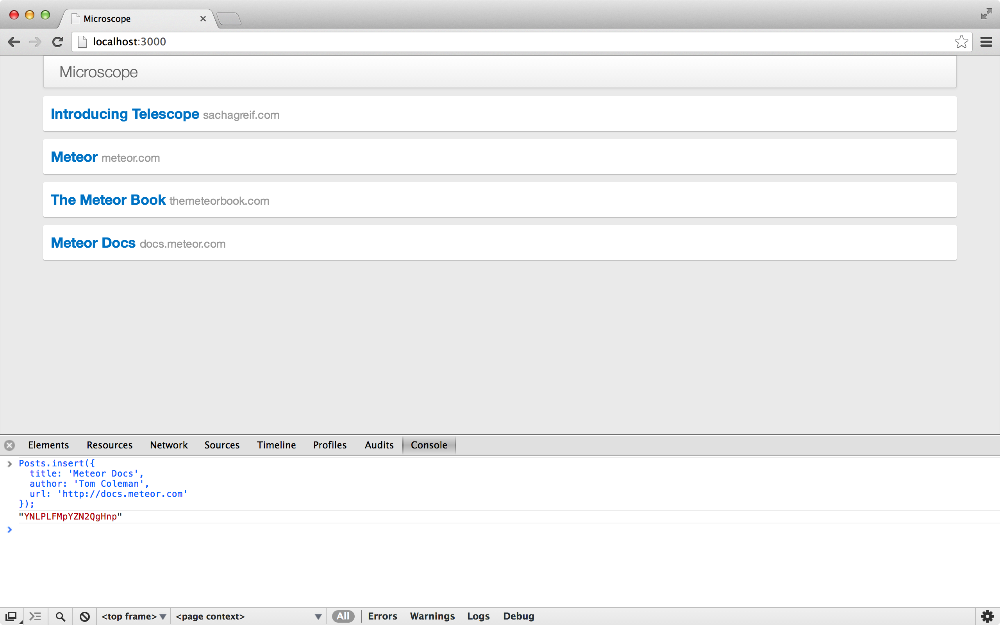通过控制台增加帖子
你刚才第一次看到从动功能生效了。当我们告诉 handlebars 去枚举 Posts.find() 游标的时候，它自己知道如何发现游标的变动，从而用最简单的方式将变化后的正确数据显示到屏幕上。
检查 DOM 变动
在目前的情况下，最简单的变动应该就是增加一个 <div class="post">...</div>。 如果你想看看是否的确如此，你可以打开 DOM 检查器然后选择某个已经存在的帖子的 <div> 。
现在在 Javascript 控制台，插入另外一个帖子。当你回到检查器，会发现一条新的 <div> 对应了新增的那个帖子。同时，原先选中的那个 旧的 <div> 仍然存在。这是一种判断元素是否被重新渲染的有效方式。
连接集合: 发布与订阅
到此为止，我们仍然用着 autopublish 这个包，这个包并不是为正式产品化的应用程序准备的。正如它的名字陈述的那样，它简单地把整个集合分享给所有连接的客户端。这个可不是我们期望的样子，所以让我们去掉它。
打开一个终端窗口，输入：
meteor remove autopublish
这个操作有了立即的反应。当你打开浏览器，你会发现所有的帖子都不见了！这是因为我们一直依赖于 autopublish 来让我们的客户端可以镜像般地得到数据库中的所有帖子。
最终我们需要做得到我们仅仅把我们客户端需要看到的帖子传输过来（需要考虑分页的情况）。不过暂时我们可以先设置把 Posts 所有帖子都发布出来。
为达到这个目的，我们建立一个简单的 Publish() 函数，它仅仅返回一个反映所有帖子的游标。
Meteor . publish ( 'posts' , function () {
return Posts . find ();
}); server/publications.js
在客户端我们需要订阅 这个发布。我们仅仅需要增加这样一行到 main.js 文件中：
Meteor . subscribe ( 'posts' ); client/main.js
提交 4-4 删除 `autopublish` 并建立基本的发布功能
如果你现在看一眼浏览器，发现帖子都回来了。哇！好险啊！
总结
我们都做了什么？尽管我们还没有用户界面，至少我们已经有了一个能用的应用。我们可以把这个应用部署到网络上，（使用浏览器的控制台）发帖子，并看到帖子显示在其他用户的浏览器上。
发布与订阅
4.5
发布（Publication）和订阅（Subscription）是 Meteor 的最基本最重要的概念之一，但是如果你是刚刚开始接触 Meteor 的话，也是有些难度的。
这已经导致不少误解，比如认为 Meteor 是不安全的，或者说 Meteor 应用无法处理大量数据等等。
人们起初会感觉这些概念很迷惑很大程度上是因为 Meteor 像变魔法一样替你做了很多事儿。尽管这些魔法最终看起来很有效，但是它们掩盖了后台真正做的工作（好像魔术一样）。所以让我们剥去魔法的外衣来看看究竟发生了什么。
过去的日子
首先，让我们回顾一下2011年之前，当 Meteor 还没有诞生的时候的老日子。比如说我们要建立一个简单的 Rails app。当用户来我们的站点，客户端（举例说浏览器）向我们的服务器端的 app 发送请求。
App 的第一个任务就是搞清楚这个客户请求什么数据。这个可能是搜索结果的第12页、玛丽的用户信息、鲍勃的最新20条微博，等等等等。 你可以想想成为一个书店的伙计在书架之间帮你寻找你要的书。
当正确的数据被找到，这个 App 的下一个任务就是把数据转换成好看的，人类可读的 HTML 格式（对于 API 而言是 JSON 串）。
用书店来举例，那就相当于是把你刚买的书包好，然后装入一个漂亮的袋子。这就是著名的 MVC（模型-视图-控制器）模式中的视图部分。
最终，App 把 HTML 代码送到客户端。这个 App 的任务也就交差了。它可以去买瓶啤酒然后等着下一个请求。
Meteor 的方式
让我们看看 Meteor 相对之下是多么的特别。正如我们看到的，Meteor 的关键性创新在于 Rails 程序只跑在服务器 上，而一个 Meteor App 还包括在客户端 （浏览器）上运行的客户端组件。
推送数据库子集到客户端 这就相当于书店的伙计不仅仅在书店里帮你找书，还跟你回家，每天晚上读给你听（这听起来怪怪的）。
这种架构可以让 Meteor 做更多很酷的事情，其中一件主要的就是 Metoer 变得数据库无处不在 。简单说，Meteor 把你的数据拿出一部分子集复制到客户端 。
这样后两个主要结果：第一，服务器不再发送 HTML 代码到客户端，而是发送真实的原始数据 ，让客户端决定如何处理线传数据 。第二，你可以不必等待服务器传回数据，而是立即访问甚至修改数据 （延迟补偿 latency compensation ）。
发布
一个 App 的数据库可能用上万条数据，其中一些还可能是私用和保密敏感数据。显而易见我们不能简单地把数据库镜像到客户端去，无论是安全原因还是扩展性原因。
所以我们需要告诉 Meteor 那些数据子集 是需要送到客户端，我们将用发布 功能来做这个事儿。
让我们来回到 Microscope。这里是我们 App 数据库中的所有帖子：
数据库中的所有帖子数据 尽管实际上不存在但是我们还是假设我们的帖子中有几条因为言语不当被打了特殊标记的。我们需要把他们留在数据库中但是不希望让用户看到（发送去客户端）。
我们第一个任务就是告诉 Meteor 那些数据我们要 发送去客户端。我们告诉 Meteor 我们只发布 没有打标记的帖子。
排除做过标记的帖子 这里是对应的代码，在服务器端代码中。
// 在服务器端
Meteor . publish ( 'posts' , function () {
return Posts . find ({ flagged : false });
}); 这就保证客户端无论如何 也无法看到打了标记的帖子了。这就是 Meteor App 如何做到安全性的：保证只发布你让这个当前用户看到的数据。
DDP
基本上我们可以把发布/订阅模式想象成为一个漏斗，从服务器端（数据源）过滤数据传送到客户端（目标）。
这个漏斗的专属协议叫做 DDP （分布式数据协议 Distributed Data Protocol 的缩写）。如果想了解 DDP 的更多细节，可以通过看 Matt DeBergalis（Meteor 创始人之一）在 Real-time 大会上的讲演视频 ，或者来自 Chris Mather 的这个截屏视频 ，来学习关于这个概念更多的细节。
订阅
就算是我们想把打了标记的帖子也发送给客户端，我们也不能把成千上万的帖子一股脑都发出去。我们需要一个机制让客户端来确定那些子集是他们在某个特别时候特别需要的，这就是订阅 这个功能的用途。
通过 MiniMongo，客户端 MongoDB 的应用，你订阅的数据会被镜像 到客户端。
举个例子，让我们现在浏览一下 Bob Smith 的个人页面，这里只会显示他的 帖子。
订阅 Bob 的帖子镜像到客户端。 首先，我们给发布功能加一个参数：
// 在服务器端
Meteor . publish ( 'posts' , function ( author ) {
return Posts . find ({ flagged : false , author : author });
}); 然后我们在客户端订阅 这个发布时定义同一个参数。
// 在客户端
Meteor . subscribe ( 'posts' , 'bob-smith' ); 这就是我们让 Meteor 程序在客户端能够具有可伸缩性：不去订阅全部 数据，而是指选择你现在需要的数据去订阅。这样的话，你就可以避免消耗大量的客户端内存，无论服务器端的总数据量有多大。
查找
现在 Bob 的帖子恰巧涵盖了多个类别（比如：“JavaScript”、“Ruby”和“Python”）。也许我们仍然需要把 Bob 的所有帖子都装入内存，但是我们现在只想显示属于“JavaScript”类别的帖子。这就是“查找”的用途。
在客户端选择一个数据子集。 正如我们在服务器上做的一样，我们用了 Posts.find() 函数来选择数据的子集：
// 在客户端
Template . posts . helpers ({
posts : function (){
return Posts . find ({ author : 'bob-smith' , category : 'JavaScript' });
}
}); 现在我们应该明白订阅和发布机制了，让我们在深入了解一些常见的应用模式。
自动发布（Autopublish）
如果你从头开始建立一个 Meteor 项目（比如，使用 meteor create 命令)，系统会自动包含并启用一个叫做 autopublish 的包。让我们说说这个包是干什么的。
autopublish 的目的是让 Meteor 应用有个简单的起步阶段，它简单地直接把服务器上的全部数据 镜像到客户端，因此你就不用管发布和订阅了。
自动发布 那么这究竟是如何工作的呢？假设在服务器端我们有一个集合叫做 posts。自动发布包就会自动地把 Mongo 数据库中这个集合的所有的数据（帖子）发送到客户端的名为 ‘posts’ 的集合中（假设客户端的确有这样一个集合）。
因此，如果你使用自动发布，你就不需要考虑发布。数据一致，而且事情变得十分简单。当然，这样的话会有一个明显的问题，就是你的所有数据都被缓存到所有用户的电脑中。
基于这个原因，自动发布只在你起步阶段且还未考虑发布之前时使用。
发布全部集合
一旦你删除掉 autopublish 这个包，你马上就会发现在浏览器上没有数据了。一个简单的解决方法就是重复自动发布所做的工作， 那就是发布所有数据。比如：
Meteor . publish ( 'allPosts' , function (){
return Posts . find ();
}); 发布所有集合 我们还是发布了所有集合，但是至少我们现在可以自己控制哪个集合我们发布哪个不发布。比如现在这个例子，我们发布了 Posts 集合但是并没有发布 Comments。
发布部分集合
下一步我们要做的是发布集合中的部分 记录。比如我们只发布来自于某个作者的帖子：
Meteor . publish ( 'somePosts' , function (){
return Posts . find ({ 'author' : 'Tom' });
}); 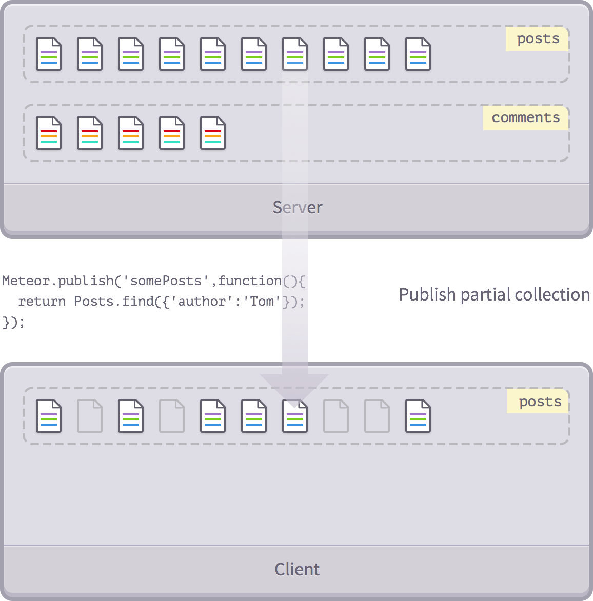发布集合的一部分
幕后真相
如果你已经阅读了 Meteor 发布文档 ，你可能被诸如 added() 和 ready() 之类的用来设置客户端记录属性的函数搞晕了，而且还纠结于似乎我们从来没有使用过这些方法。
原因在于 Meteor 提供了十分重要的简化：_publishCursor() 方法。你也没有看到我们用这个方法对吧？也许我们没有直接用，但是如果你在发布函数中返回了一个游标 （比如，Posts.find({'author':'Tom'})），那个就是 Meteor 使用这个方法的时候。
当 Meteor 看到 somePosts 发布函数返回了一个游标，它会调用 _publishCursor() 去 —— 你猜猜看 —— 自动发布这个游标。
下面就是 _publishCursor() 做的工作：
它检查服务器端的集合的名称
它从游标中找到所有的符合要求的文档，然后发送到客户端的同名 集合中。（它使用了.added() 函数来完成的）
当新的文档加入集合了，或者删除或者改变了，它会把这些改动发送到客户端的集合。（它使用 .observe() 来监控游标，使用 .added(), .changed() 和 removed() 来增删改）。
所以在上述的例子中，我们可以保证用户只会在客户端缓存中得到他们感兴趣的帖子（在这里例子中是 Tom 发的帖子）。
发布部分字段
我们已经看到如何发布部分帖子，但是我们还需要再精简！让我们看看如何只发布指定的部分字段 。
如同以前我们使用 find() 返回一个游标，现在我们来去掉一些字段。
Meteor . publish ( 'allPosts' , function (){
return Posts . find ({}, { fields : {
date : false
}});
}); 发布部分字段 实际上，我们可以同时使用上述两种技术，只发布作者是 Tom 的帖子，并且隐藏 date 日期字段:
Meteor . publish ( 'allPosts' , function (){
return Posts . find ({ 'author' : 'Tom' }, { fields : {
date : false
}});
}); 总结
我们已经从发布所有集合的所有文档的所有字段（通过 autopublish），到发布个别 集合的个别 文档的个别 字段。
这已经覆盖了 Meteor 的发布的基本内容，而且这些基本技巧已经足够涵盖大部分的用例了。
有时，你需要进一步来组合、连接或融合发布。我们在以后的章节中讲到这些内容！
路由
5
现在，我们已经创建了一个帖子列表页面（最终是由用户提交的），我们还需要添加一个单独的帖子页面，提供给用户评论对应的帖子。
我们希望可以通过固定链接 访问到每个单独的帖子页面，URL 形式是 http://myapp.com/posts/xyz（这里的 xyz 是 MongoDB 的 _id 标识符），对于每个帖子来说是唯一的。
这意味着我们需要某些路由 来看看浏览器的地址栏里面的路径是什么，并相应地显示正确的内容。
添加 Iron Router 包
Iron Router 是特别为了 Meteor Apps 开发的路由包。
它不仅能帮助路由（设置路径），还能帮助过滤（为这些路径分配跳转），甚至能管理订阅（控制路径可以访问哪些数据）。（注意：Iron Router 是由本书《Discover Meteor》 的其中一名作者 Tom Coleman 参与开发的。)
首先，让我们从 Atmosphere 中安装这个包：
meteor add iron:router
Terminal 终端
这个命令是下载并安装 Iron Router 包到我们的 App，这样我们就可以使用了。请注意，在能够顺利使用这个包之前，你可能需要重启你的 Meteor 应用（通过按 ctrl + c 就能停止进程，然后输入 meteor 再次启动它）。
路由器的词汇
在本章我们会接触很多路由器的不同功能。如果你对类似 Rails 的框架有一定实践经验的话，你可能已经很熟悉大部分的这些词汇概念了。但是如果没有的话，这里有一个快速词汇表让你来了解一下：
路由规则（Route） ：路由规则是路由的基本元素。它的工作就是当用户访问 App 的某个 URL 的时候，告诉 App 应该做什么，返回什么东西。 路径（Path） ：路径是访问 App 的 URL。它可以是静态的（/terms_of_service）或者动态的（/posts/xyz），甚至还可以包含查询参数（/search?keyword=meteor）。目录（Segment） ：路径的一部分，使用正斜杠（/）进行分隔。Hooks ：Hooks 是可以执行在路由之前，之后，甚至是路由正在进行的时候。一个典型的例子是，在显示一个页面之前检测用户是否拥有这个权限。过滤器（Filter） ：过滤器类似于 Hooks ，为一个或者多个路由规则定义的全局过滤器。路由模板（Route Template） ：每个路由规则指向的 Meteor 模板。如果你不指定，路由器将会默认去寻找一个具有相同名称的模板。布局（Layout） ：你可以想象成一个数码相框的布局。它们包含所有的 HTML 代码放置在当前的模板中，即使模板发生改变它们也不会变。控制器（Controller） ：有时候，你会发现很多你的模板都在重复使用一些参数。为了不重复你的代码，你可以让这些路由规则继承一个路由控制器（Routing Controller） 去包含所有的路由逻辑。
关于更多 Iron Router 的信息，请查看 GitHub上面的完整文档 .
路由：把 URL 映射到模板
到目前为止，我们已经使用了一些固定模板（比如 {{> postsList}}）来为我们布局。因此，尽管我们 App 的内容还可以更改，但是页面的基本结构都已经不变了：一个头（header），它下面是帖子列表。
Iron Router 负责处理在 HTML <body> 标签里面该呈现什么，让我们摆脱了这个枷锁。所以我们不会再自己去定义标签里面的内容，取而代之的是，我们将路由器指定到一个包含 {{> yield}} 标签的布局模板。
这个 {{> yield}} 标签将会定义一个动态区域，它会自动呈现对应于当前线路的相应模板（从现在起，我们将指定这个特殊的模板叫 “route templates”）：
布局和模板。 我们将开始构建我们的布局和添加 {{> yield}} 标签。首先，我们先从 main.html 文件里面删除 <body> 标签，并把它的内容放到它们共同的模板 layout.html 里面（保存在新的 client/templates/application 文件夹中）。
我们把 main.html 删减内容之后应该是这样的：
<head>
<title> Microscope</title>
</head> client/main.html
而新创建的 layout.html 现在将会包含 App 的外层布局：
<template name= "layout" >
<div class= "container" >
<header class= "navbar navbar-default" role= "navigation" >
<div class= "navbar-header" >
<a class= "navbar-brand" href= "/" > Microscope</a>
</div>
</header>
<div id= "main" class= "row-fluid" >
{{> yield}}
</div>
</div>
</template> client/templates/application/layout.html
你会注意到我们已经把 yield helper 取代了 postsList 模板。
完成之后，我们浏览器标签中的内容会消失，浏览器控制台会显示一个错误。这是因为我们还没有告诉路由怎样处理 / URL，所以它仅仅呈现一个空的模板。
接下来，我们可以恢复之前的根路径 / URL 映射到 postsList 模板。然后我们在根目录创建一个 /lib 目录，并在里面创建 router.js 文件：
Router . configure ({
layoutTemplate : 'layout'
});
Router . route ( '/' , { name : 'postsList' }); lib/router.js
我们已经完成了两件重要的事情。第一，我们已经告诉路由器使用我们刚刚创建的 layout 模板作为所有路由的默认布局。
第二，我们已经定义了一个名为 postsList 的路由规则，并映射到 / 路径。
/lib 文件夹你放在 /lib 文件夹里面的所有文件都会在你的 App 运行的时候确保首先被加载（可能除了 smart 包）。这是放置需要随时准备使用的辅助代码的好地方。
不过有一点注意的是：因为 /lib 文件夹并不是放在 /client 或 /server 文件夹里面，这意味着它的代码将会同时存在于客户端和服务器。
路由规则的名字
在这里我们先清除一些歧义。我们有一个路由规则，叫做叫 postsList ，同时我们也有一个名字叫 postsList 的模板 。这里是怎么回事？
默认情况下，Iron Router 会为这个路由规则，指定相同名字的模板。而如果路径（path 参数）没有指定，它也会根据路由规则的名字，去指定同样名字的路径 。举个例子，在上面的设置中，如果我们不提供 path 参数，那么访问 /postsList 将会自动获取到 postList 模板。
你可能想知道为什么我们需要在一开始去制定路由规则。这是因为 Iron Router 的部分功能需要使用路由规则去生成 App 的链接信息。其中最常见的一个是 {{pathFor}} 的 Spacebars helper，它需要返回路由规则的 URL 路径。
我们希望主页链接到帖子列表页面，所以除了指定静态的 / URL ，我们还可以使用 Spacebars helper。虽然它们的效果是一样的，不过这给了我们更多的灵活性，如果我们更改了路由规则的映射路径，helper 仍然可以输出正确的 URL 。
<header class= "navbar navbar-default" role= "navigation" >
<div class= "navbar-header" >
<a class= "navbar-brand" href= "{{pathFor 'postsList'}}" > Microscope</a>
</div>
</header>
//...client/templates/application/layout.html
等待数据
如果你要部署当前版本的 App（或启动起来去使用上面的链接），你会注意到在所有帖子完全出现之前，列表里面会空了一段时间。这是因为在第一次加载页面的时候，要等到 posts 订阅完成后，即从服务器抓取完帖子的数据，才能有帖子显示在页面上。
这应该要有一个更好的用户体验，比如提供一些视觉上的反馈让用户知道正在读取数据，这样用户才会去继续等待。
幸好 Iron Router 给了我们一个简单的方法去实现它。我们把订阅放到 waitOn 的返回上。
我们把 posts 订阅从 main.js 移到路由文件中：
Router . configure ({
layoutTemplate : 'layout' ,
waitOn : function () { return Meteor . subscribe ( 'posts' ); }
});
Router . route ( '/' , { name : 'postsList' }); lib/router.js
我们这里所谈论的是对于网站的每个 路由（我们现在只有一个，但是我们马上会添加更多！）我们都订阅了 posts 订阅。
这和我们之前做的（订阅原来被放在了 main.js 文件中，这文件现在应该是空的了，可以删除）关键区别在于 Iron Router 现在可以得知路由什么时候准备好——即当路由得到它需要渲染的数据时。
Get A Load Of This
如果我们只是显示一个空的模板的话，得知 postsList 路由已准备好也做不了什么事情。幸好 Iron Router 自带了一个延缓显示模板的方法，在路由调用模板准备好前，显示一个 loding 加载模板：
Router . configure ({
layoutTemplate : 'layout' ,
loadingTemplate : 'loading' ,
waitOn : function () { return Meteor . subscribe ( 'posts' ); }
});
Router . route ( '/' , { name : 'postsList' }); lib/router.js
注意，因为我们在路由器级别上全局定义了 waitOn 方法，所以这个只会在用户第一次访问你的 App 的时候发生一次。在那之后，数据已经被加载到了浏览器的内存，路由器不需要再次去等待它。
最后一块拼图是加载模板。我们将会使用 spin 包去创建一个帅气的动画加载画面。通过 meteor add sacha:spin 去添加它，然后在 client/templates/includes 文件夹内创建 loading 模板：
<template name= "loading" >
{{>spinner}}
</template> client/templates/includes/loading.html
注意 {{> spinner}} 是 spin 包中的一个模板标签。尽管这部分是来自我们的 App 之外，不过我们就像其他模板一样去使用它就可以了。
这是一个好办法去等待你的订阅，不仅为了用户体验，还因为它可以顺利地确保数据可以马上体现在模板上。这消除了需要处理的模板被呈现之前，底层数据必须可用的问题，这往往需要复杂的解决方案。
第一次接触响应性
响应性是 Meteor 的一个核心部分，虽然我们没有真正的接触到，但我们的加载模板给了我们去接触这个概念的机会。
如果数据还没有加载完成的时候重定向去一个加载模板是很好，不过路由器如何知道在什么时候数据加载完，然后用户应该要重定向回到原本的页面呢？
刚刚我们说的这个就是响应性的体现，不过别担心，很快你会了解到关于它的更多东西。
路由到一个特定的帖子
既然我们已经看到了如何路由到 postsList 模板上，现在让我们建立一个路由来显示一个帖子的详细信息吧。
这里有一个问题：我们不能继续单独定义路由规则与路径的映射，因为可能有成千上万个。所以我们需要建立一个动态 的路由规则，并让路由规则去显示我们要查看的帖子。
首先，我们将创建一个新的模板，简单地呈现相同的我们使用在帖子列表的模板。
<template name= "postPage" >
{{> postItem}}
</template> client/templates/posts/post_page.html
我们以后还会添加更多的元素在这个模板上（如注释），但现在它将仅仅作为放置 {{> postItem}} 的外壳。
我们准备创建另一个路由规则，这次 URL 路径 /posts/<ID> 映射到 postPage 模板:
Router . configure ({
layoutTemplate : 'layout' ,
loadingTemplate : 'loading' ,
waitOn : function () { return Meteor . subscribe ( 'posts' ); }
});
Router . route ( '/' , { name : 'postsList' });
Router . route ( '/posts/:_id' , {
name : 'postPage'
}); lib/router.js
这个特殊的 :_id 标记告诉路由器两件事：第一，去匹配任何符合 /posts/xyz/（“xyz”可以是任意字符）格式的路线。第二，无论“xyz”里面是什么，都会把它放到路由器的 params 数组中的 _id 属性里面去。
请注意，我们这里只使用 _id 只是为了方便起见。路由器是没有办法知道你是通过一个实际的 _id ，还是仅仅通过一些随机的字符去访问。
我们现在路由到正确的模板了，但是我们仍然漏了一个事情：路由器通过这个帖子的 _id 可以知道我们想显示哪个帖子，但模板还没有线索。那么，我们要如果解决这个问题呢？
值得庆幸的是，路由器有一个聪明的内置解决方案：它允许你指定一个数据源 。你可以把数据源想象成填充的一个美味的蛋糕去填充模板和布局。简单的说，就是你的模板要填上：
The data context. 在我们的例子中，我们可以从 URL 上获取 _id ，并通过它找到我们的帖子从而获得正确的数据源：
Router . configure ({
layoutTemplate : 'layout' ,
loadingTemplate : 'loading' ,
waitOn : function () { return Meteor . subscribe ( 'posts' ); }
});
Router . route ( '/' , { name : 'postsList' });
Router . route ( '/posts/:_id' , {
name : 'postPage' ,
data : function () { return Posts . findOne ( this . params . _id ); }
}); lib/router.js
所以每次用户访问这条路由规则，我们会找到合适的帖子并将其传递给模板。记住，findOne 返回的是一个与查询相匹配的帖子，而仅仅需要提供一个 id 作为参数，它可以简写成 {_id: id} 。
在路由规则的 data 方法里面，this 对应于当前匹配的路由对象，我们可以使用 this.params 去访问一个比配项（在 path 中通过 : 前缀去表示它们）。
更多关于数据源
通过设置模板的数据源 ，你可以在模板 helper 里面控制 this 的值。
这个工作通常会隐式地被 {{#each}} 迭代器完成，它会自动设置对应的数据源到每个正在迭代的当前项中：
{{#each widgets}}
{{> widgetItem}}
{{/each}}
当然我们也可以使用 {{#with}} 去显式地操作，它就像简单地说“拿这个对象，提供给下面的模板应用”。例如，我们可以这样写：
{{#with myWidget}}
{{> widgetPage}}
{{/with}}
因此通过传递数据源作为参数 给模板调用也可以实现相同的效果，所以前面的代码块可以重写为：
{{> widgetPage myWidget}}
想深入了解数据源，建议阅读我们的博客帖子 。
使用动态的路由 Helper
最后，我们 要创建一个新的“评论”按钮，并指向正确的帖子页面。我们可以做一些像 <a href="/posts/{{_id}}"> 这种动态模式，不过使用路由 Helper 会更可靠一点。
我们已经把帖子路由规则命名为 postPage ，所以我们可以使用 {{pathFor 'postPage'}} helper ：
<template name= "postItem" >
<div class= "post" >
<div class= "post-content" >
<h3><a href= "{{url}}" > {{title}}</a><span> {{domain}}</span></h3>
</div>
<a href= "{{pathFor 'postPage'}}" class= "discuss btn btn-default" > Discuss</a>
</div>
</template> client/templates/posts/post_item.html
不过等等，路由器到底如何准确地知道从 /posts/xyz 中的哪个位置去获得 xyz 路径？毕竟，我们没有传递任何的 _id 给它。
事实证明，Iron Router 是足够聪明地自己去发现它。我们告诉路由器使用 postPage 路由规则，而路由器知道这条规则的某些地方需要使用 _id（因为这是我们定义 path 的办法）。
因此，路由器将会在 {{pathFor 'postPage'}} 的上下文环境（即 this 对象）中寻找这个 _id。而在这个例子中，this 对象对应着一个帖子，它就是我们要寻找的拥有 _id 属性的地方。
又或者，你可以通过传递 Helper 的第二个参数，来明确指定需要找的 _id 在哪里。例如，{{pathFor 'postPage' someOtherPost}}。实际情况下，如果要获取帖子列表中前一个或者后一个的链接，我们就会使用这种模式。
为了看看它是否已经正常运作，我们去浏览帖子列表页面并点击其中一个“Discuss”的链接。你应该看到类似这样的：
一个单独的帖子页面。 HTML5 pushState
这里我们需要知道的是，这些 URL 变化的产生原因是正在使用 HTML5 pushState .
路由器通过处理 URLs 的点击去访问网站的内部，这样可以防止浏览器跳出我们的 App ，而不只是为了必要的改变 App 的状态。
如果一切运作正常的话，页面应该会瞬间改变。事实上，有时候事情变化得过快，可能需要某种类型的过渡页面。这是本章的范围之外的，但却是一个有趣的话题。
帖子无法找到
让我们别忘了路由工作两种方式：改变我们访问的页面 URL，也能显示我们改变 URL 的新页面。所以我们需要解决当某用户输入错误的 URL 时的情况。
幸好，Iron Rounter 可以通过 notFoundTemplate 选项来为我们解决这个问题。
首先，我们设置一个新模板来显示简单的 404 错误 信息：
<template name= "notFound" >
<div class= "not-found jumbotron" >
<h2> 404</h2>
<p> Sorry, we couldn't find a page at this address. 抱歉，我们无法找到该页面。</p>
</div>
</template> client/templates/application/not_found.html
然后，我们将 Iron Rounter 指向这个模板：
Router . configure ({
layoutTemplate : 'layout' ,
loadingTemplate : 'loading' ,
notFoundTemplate : 'notFound' ,
waitOn : function () { return Meteor . subscribe ( 'posts' ); }
});
//...
lib/router.js
为了验证这个错误页面，你可以尝试随机输入 URL 像 http://localhost:3000/nothing-here。
但是稍等，如果有人输入了像 http://localhost:3000/posts/xyz 这种格式的 URL，xyz 不是 一个合法的帖子 _id 怎么办？虽然是合法的路由，但是没有指向任何数据。
幸好，如果我们在 route.js 结尾添加了特别的 dataNotFound hook，Iron Rounter 就能足够智能地解决这个问题。
//...
Router . onBeforeAction ( 'dataNotFound' , { only : 'postPage' }); lib/router.js
这会告诉 Iron Router 不仅在非法路由情况下，而且在 postPage 路由，每当 data 函数返回“falsy”（比如 null、false、undefined 或 空）对象时，显示“无法找到”的页面。
为什么叫 “Iron”?
你也许会想知道命名“Iron Router”背后的故事。根据 Iron Router 的作者 Chris Mather，因为流星（meteor）主要由铁（iron）元素构成的事实。
会话（Session）
5.5
Meteor 是一个响应式框架。这意味着随着数据的变化， App 的改变并不需要你显式地做任何事情。
事实上，我们已经看到过我们的模板是如何根据数据和路由规则的变化去进行改变的。
我们将在后面的章节去深入了解这里面是如何工作的，但我们现在想介绍一些基本的响应性功能，它对于普通的 App 是非常有用的。
Meteor 的会话（Session）
现在在 Microscope 下，用户在 App 中的当前状态是完全包含在 URL 里面，并且需要从 URL （或者数据库）里面寻找。
但是在许多情况下，你需要存储一些只对应于当前用户的应用程序版本的短暂状态（例如，一个元素是否显示或隐藏）。利用 Session 可以很方便地去做到这一点。
Session 是一个全局的响应式数据存储。它全局性的意思是全局的单例对象：这个 Session 对象在全局都是可被访问到。全局变量通常被认为不是一件什么好事，不过在刚才的例子上，Session 可以作为中央通信总线用于项目的不同地方。
修改会话（Session）
会话 Session 是全局可访问的。设置一个 Session 的值，你可以调用：
❯ Session . set ( 'pageTitle' , 'A different title' ); 浏览器控制台（Browser console）
通过 Session.get('mySessionProperty'); 你可以重新读取数据的内容，这是一个响应式的数据源，这意味着如果你把它放在一个 Helper 里面，你会看到 Helper 根据 Session 变量的改变而响应式地改变它的输出。
让我们试一试，将下面的代码添加到布局模板：
<header class= "navbar navbar-default" role= "navigation" >
<div class= "navbar-header" >
<a class= "navbar-brand" href= "{{pathFor 'postsList'}}" > {{pageTitle}}</a>
</div>
</header> client/templates/application/layout.html
Template . layout . helpers ({
pageTitle : function () { return Session . get ( 'pageTitle' ); }
}); client/templates/application/layout.js
关于附录（Sidebar）的代码
请注意在附录章节中的代码并不是本书主流程的一部分。所以要么创建一个新分支（如果你使用 Git），要么确保在本章结束后恢复你所做的改动。
Meteor 的自动重载（即使用后面讲到的“动态代码重载技术”（HCR）的页面自动刷新）会保存 Session 的变量，所以我们现在应该看到“不同的标题”显示在导航栏中。如果不是，再次输入之前的 Session.set() 命令。
另外，如果我们去更改它的值（再次在浏览器控制台中），我们应该看到另一个标题显示：
❯ Session . set ( 'pageTitle' , 'A brand new title' ); Browser console
由于 Session 的全局可访问性，所以这些变化可以作用到应用程序的任何地方。这给了我们很大的权力，但如果使用太多也可以是一个陷阱。
另外，重点指出的是 Session 对象不在 用户之间共享，甚至在浏览器标签之间。这就是为什么如果现在你在新浏览器标签打开你的应用，你会看到一个空网站标题。
相同的变化
如果你通过 Session.set() 去修改一个 Session 变量，并将其修改为相同的值，Meteor 会非常聪明的绕过繁琐的操作，避免不必要的方法调用。
自动运行（Autorun）
我们看到响应式数据源的一个例子，并且看到了它在一个模板 Helper 里面的运作。尽管某些情况下 Meteor（如模板 Helper）是响应式的，但是大部分的 Meteor App 仍然是基于普通的非响应式的 JavaScript 代码。
让我们假设有以下的代码片段在我们的 App：
helloWorld = function () {
alert ( Session . get ( 'message' ));
} 尽管我们调用一个响应式会话（Session）变量，但它并不是在响应式的上下文 中调用，所以当改变这个 Session 变量的时候，我们也不会自动运行 alert 函数。
这个时候，就要引入自动运行（Autorun） 机制了。顾名思义，每一次 autorun 上下文中的响应式数据源发生变化的时候，autorun 函数就会自动运行。
尝试到浏览器控制台输入：
❯ Tracker . autorun ( function () { console . log ( 'Value is: ' + Session . get ( 'pageTitle' )); } );
Value is : A brand new title 浏览器控制台（Browser console）
如你所料，放在 autorun 函数里面的代码将会运行一次，把数据输出到控制台。现在，让我们尝试去改变标题：
❯ Session . set ( 'pageTitle' , 'Yet another value' );
Value is : Yet another value 浏览器控制台（Browser console）
神奇吧！随着 Session 变量的改变， autorun 知道它必须重新运行自己的代码，并把新的值重新输出到控制台。
所以我们回到之前的例子，如果希望每次 Session 变量发生变化的时候引发新的警报（alert），我们需要做的就是将我们的代码封装在 autorun 函数里面：
Tracker . autorun ( function () {
alert ( Session . get ( 'message' ));
}); 正如我们前面看到的，autorun 会自动跟踪响应式数据源，在它们变化的时候作出响应的反应。
动态代码重载技术（Hot Code Reload）
在 Microscope 的开发过程中，我们已经用过 Meteor 的动态代码重载技术（HCR）去节省时间：当我们修改并保存一个源代码的文件后，Meteor 会立刻检测到变化，直接重启正在运行的 Meteor 服务器，并通知每个客户端重新加载该页面。
这类似于页面的自动刷新，但有一个很重要的差异。
为了找出那是什么，先重置一下之前改过的 Session 变量：
❯ Session . set ( 'pageTitle' , 'A brand new title' );
❯ Session . get ( 'pageTitle' );
'A brand new title' 浏览器控制台（Browser console）
如果我们手动去重载浏览器窗口，自然就会丢失我们的 Session 变量（因为这将会创建一个新的会话）。另一方面，如果我们是引发动态代码重载（即，通过修改并保存我们的源文件）去重新加载页面，Session 变量却仍然存在。现在去试一试！
❯ Session . get ( 'pageTitle' );
'A brand new title' 浏览器控制台（Browser console）
因此，如果使用 Session 变量来保存用户状态，用户几乎不会察觉到动态代码重载的发生。因为它将保留所有 Session 变量的值。这可以使我们在部署新版本的时候，用户发生中断的机会降到最低。
再想一想，这意味着，只要我们做到用 URL 和 Session 把所有状态保存下来，那么当更新版本的时候，客户端正在运行 的应用程序就可以动态重载，不丢失任何数据。
现在去检验一下当我们去手动刷新页面的时候发生了什么：
❯ Session . get ( 'pageTitle' );
null 浏览器控制台（Browser console）
当我们重载页面时，我们丢失了 Session 。在 HCR 中，Meteor 将 Session
保存到浏览器的本地存储并且在重载的之后再一次加载它。然而，在重载页面时发生的丢失行为是有一定道理的：如果用户重新加载页面，就好像他们已经再次浏览
相同的 URL ，而且其他用户都会看到他们访问的 URL，所以他们应该重置为初始状态。
从中我们应该要学会：
应该在 Session 或者 URL 中存储用户状态。从而在动态代码重载的时候，让用户发生中断的机会降到最低。
尽可能使用 URL 去存储你想要共享在用户之间的状态。
以上总结了我们对会话（Session）——— Meteor 最有用的功能之一的探索。不要忘了在进行下一章之前，恢复你对代码的改动。
添加用户
6
到目前为止，我们已经以较合理的方式去创建并显示一些静态数据，并将其连接到成一个简单的数据原型。
尽管我们的界面是根据变化的数据进行即时响应的，并且数据的实时插入或更改的都会在界面上得到体现。然而，我们的网站似乎还没有提供用户去修改数据的页面。实际上，我们甚至连用户都还没有！
下面让我们看看如何去解决这个问题吧。
账户：让用户变得简单
在大多数的 web 框架，添加用户帐户是一个熟悉而又麻烦的工作。然而，你所做的每一个项目几乎都要用到，但它都不曾让我们觉得简单过。甚至如果当你要处理开放授权（OAuth）或其他第三方身份验证的时候，这些工作往往会变得更加恶心和复杂。
幸运的是， Meteor 可以帮你轻松解决。由于 Meteor 包的代码可以同时运行在服务器（JavaScript）和客户端（JavaScript、HTML 和 CSS），这样我们就可以很轻松地得到一个账户系统。
我们可以使用 Meteor 内置的账户界面（通过 meteor add accounts-ui ），但是由于我们已经在构建 App 的时候用了 Bootstrap 包，所以我们将使用 accounts-ui-bootstrap-3 包去代替（别担心，唯一的区别只是里面的样式不同）。我们在终端输入：
meteor add ian:accounts-ui-bootstrap-3
meteor add accounts-password
Terminal
这两个命令的作用是把一些特别的账户模板提供到我们的项目，然后就可以通过 {{loginButtons}} helper 在我们的网站中使用。温馨提示：你可以去控制登录框下拉菜单的对齐方向，通过添加其 align 属性（例如：{{loginButtons align="right"}}）。
我们将按钮添加到我们的头部（header）模板。这样头部包含的内容将会越来越多了，下面我们为它腾出更多的空间吧（我们将把它放在 client/templates/includes/ ）。同时我们使用一些额外的标记和 class 请参考 Bootstrap 来使界面更好看：
<template name= "layout" >
<div class= "container" >
{{> header}}
<div id= "main" class= "row-fluid" >
{{> yield}}
</div>
</div>
</template> client/templates/application/layout.html
<template name= "header" >
<nav class= "navbar navbar-default" role= "navigation" >
<div class= "container-fluid" >
<div class= "navbar-header" >
<button type= "button" class= "navbar-toggle collapsed" data-toggle= "collapse" data-target= "#navigation" >
<span class= "sr-only" > Toggle navigation</span>
<span class= "icon-bar" ></span>
<span class= "icon-bar" ></span>
<span class= "icon-bar" ></span>
</button>
<a class= "navbar-brand" href= "{{pathFor 'postsList'}}" > Microscope</a>
</div>
<div class= "collapse navbar-collapse" id= "navigation" >
<ul class= "nav navbar-nav navbar-right" >
{{> loginButtons}}
</ul>
</div>
</div>
</nav>
</template> client/templates/includes/header.html
现在，去浏览我们的 App，我们会看到账户登录的按钮出现在网站的右上角。
Meteor 内置的账户界面 这样我们就可以用它来注册，登录，改变密码，它拥有和其他所有网站一样的账户系统功能。
如何告诉我们的账户系统要求用户需要通过用户名密码来登录？只需配置一个 Accounts.ui 模块到一个名叫 config.js 的文件里面，并把文件放在 client/helpers/ 中：
Accounts . ui . config ({
passwordSignupFields : 'USERNAME_ONLY'
}); client/helpers/config.js
提交 6-1 添加账户和它的模板到头（header）模板
创建我们的第一个用户
接下来去注册一个帐户：然后“登录”按钮会变成显示你的用户名。这说明了一个用户帐户已经创建成功。但是，用户帐户的数据来自哪里呢？
在添加 accounts 包以后， Meteor 已经创造了一个新的集合，它可以通过 Meteor.users 去访问。为了验证它，打开你的浏览器控制台并输入：
❯ Meteor . users . findOne (); 浏览器控制台（Browser console）
控制台应该会返回一个用户对象，如果你仔细看看，可以找到你的用户名，以及唯一标识你账号的 _id 。注意，你还可以通过 Meteor.user() 获得当前登录的用户。
现在我们注销并再次注册一个不同的用户名。 Meteor.user() 现在应该返回第二个注册的用户。但是等一等，我们看看先运行：
❯ Meteor . users . find (). count ();
1 浏览器控制台（Browser console）
控制台返回的是1？难道不是2吗？第一个用户被删除了吗？如果你再次登录第一个用户，你会发现并没有被删除。
让我们去 Mongo 数据库里面查查看吧。进入 Mongo 数据库（在终端输入 meteor mongo ）输入以下代码：
> db.users.count()
2Mongo console
确定是存在两个用户。可是刚刚为什么我们在浏览器中只看到一个呢？
发布的谜团!
如果你回想起第4章，可能还记得我们移除了 autopublish 包，我们阻止了集合从服务器自动发送所有数据到每个访问的客户端。然后我们创建了发布和订阅方法来实现数据的传输。
但我们并没有设置过任何用户的发布方法。那为什么我们还可以看到用户的数据呢？
答案就是账户包确实“自动发布”了当前登录用户的基本账户信息。如果没有的话，该用户是无法登录到网站的！
不过账户包只发布了当前 登录的用户。这就解释了为什么一个用户看不到另一个帐户的详细信息了。
所以发布的只是当前登录用户的用户对象（而且当你注销之后就没有了）。
更重要的是，我们用户的集合似乎在服务器和客户端中并不是包含完全相同的字段。在 Mongo 数据库中，用户拥有大量的数据。为了检验一下，回到你的 Mongo 终端并输入：
> db.users.find()
{
"_id" : "H5kKyxtbkLhmPgtqs" ,
"createdAt" : ISODate( "2015-02-10T08:26:48.196Z" ) ,
"profile" : {} ,
"services" : {
"password" : {
"bcrypt" : " $2a$10$yGPywo3 /53IHsdffdwe766roZviT03YBGltJ0UG"
} ,
"resume" : {
"loginTokens" : [{
"when" : ISODate( "2015-02-10T08:26:48.203Z" ) ,
"hashedToken" : "npxGH7Rmkuxcv098wzz+qR0/jHl0EAGWr0D9ZpOw="
}]
}
} ,
"username" : "sacha"
} Mongo console
但是在浏览器中，用户对象的字段就比较少了，可以通过输入这样的命令看到：
❯ Meteor . users . findOne ();
Object { _id : "kYdBd9hr3fWPGPcii" , username : "tmeasday" } 浏览器控制台（Browser console）
这个例子向我们展示了本地集合是如何成为一个安全的 数据库数据子集 。登录用户只能看到那些足够去配合客户端工作（例如：登陆）的集合属性。以后你会知道这是一个非常值得学习的模式。
但这并不意味着你就不能把更多的用户数据发布出来。你可以参考 Meteor 说明文档 ，看看 Meteor.users 集合是如何选择性地发布更多的字段。
响应式
6.5
如果说集合是 Meteor 的核心功能，那么响应式 可以能让这个核心功能更强大。
集合从根本上改变你的应用程序的数据处理方式。从而不必手动检查数据更改（例如，通过一个 AJAX 调用），再根据这些变化去修改 HTML 页面，Meteor 可以随时检测到数据的更改，并将它无缝地应用到你的用户界面上。
让我们思考一下：在后台，当底层的数据集合被更新以后， Meteor 能够马上修改用户界面的任何 部分。
这个实时性的方法是通过使用 .observe() ，当指向数据的指针发生改变时就会触发回调。我们可以通过这些回调去更改 DOM （我们的网页呈现的 HTML ）。就像这样的代码：
Posts . find (). observe ({
added : function ( post ) {
// when 'added' callback fires, add HTML element
$ ( 'ul' ). append ( '<li id="' + post . _id + '">' + post . title + '</li>' );
},
changed : function ( post ) {
// when 'changed' callback fires, modify HTML element's text
$ ( 'ul li#' + post . _id ). text ( post . title );
},
removed : function ( post ) {
// when 'removed' callback fires, remove HTML element
$ ( 'ul li#' + post . _id ). remove ();
}
}); 可能你已经知道这样的代码是如何把复杂的事情快速地进行处理。想象一下如果我们去修改帖子的任何一个属性 ，就会伴随着页面中帖子 <li> 标签的更改。当我们开始依赖于更多个数据信息的时候，甚至还可以进行更为复杂的处理，这些都能实时地进行。
我们应该什么时候去使用 observe() ?
使用上述的模式有时候很有必要的，尤其是在处理第三方小部件的时候。比如，假设我们想要基于集合数据去实时添加或删除在地图上的位置（也就是说显示当前登录用户的位置）。
在这种情况下，为了让地图能跟 Meteor 的集合进行“交谈”，你就需要使用 observe() 的回调方法去应对数据变化。例如，你需要依赖其中 added 和 removed 的回调方法去调用地图 API 中的 dropPin() 或 removePin() 方法。
声明式方法
Meteor 为我们提供了一个更好的办法：声明式方法，它的核心就是响应式。这种声明让我们定义了对象之间的关系，并让他们保持同步，而我们就不必为每个的可能发生的修改去指定相应的行为。
这是一个强大的概念，因为有许多实时性的输入，都可能发生在我们不可预测的时间中。通过声明式方法去声明我们该如何基于响应式数据去呈现 HTML ，这样 Meteor 就可以完成对这些数据的监控工作，并且把用户界面直接与数据进行绑定。
总的来说，去代替 observe 的回调，Meteor 可以让我们这些写：
<template name= "postsList" >
<ul>
{{#each posts}}
<li> {{title}}</li>
{{/each}}
</ul>
</template> 然后获取我们的帖子列表：
Template . postsList . helpers ({
posts : function () {
return Posts . find ();
}
}); 在后台，其实 Meteor 替我们使用了 observe() 的回调方法，并当响应式数据被更改的时候，对相关页面进行重新的渲染。
Meteor 的依赖跟踪：Computations
Meteor 是一个实时性、响应式的框架，但并不是所有 的代码在 Meteor App 里面都是响应式的。如果是这样，当有任何数据发生改变时，你的 App 都会自动进行重新运行。相反，响应式只是在特定区域的代码中发生，我们称这些区域为 Computations 。
换句话说， Computations 代码块是根据响应式数据的变化去运行。如果你有一个响应式数据源（例如，一个 Session 变量）并且希望及时去响应它，你需要建立一个 Computations。
请注意，你一般不需要显式地做到这一点，因为 Meteor 已经让每个模板去呈现它自己的 Computation （意思就是模板 Helper 中的代码和回调函数默认都是响应式的）。
Computations 用到的响应式数据源都会被它跟踪，这样就可以知道响应式数据什么时候发生变化。这是通过 Computations 中的 invalidate() 方法实现的。
Computations 一般只是简单地用来判断页面上的无效内容，这通常是发生在模板的
Computations（尽管模板 Computations 可能也会去做一些让页面更有效的工作）。当然如果你需要，你也可以使用更多
Computations 的功能，不过在实际中可能比较少用到。
建立一个 Computations
现在我们去理解一下 Computations 背后的工作原理，实际上要设置一个 Computations 是出乎意料的简单。我们只需要在 Tracker.autorun 方法中加上需要的代码块，让它变成响应式的 Computations ：
Meteor . startup ( function () {
Tracker . autorun ( function () {
console . log ( 'There are ' + Posts . find (). count () + ' posts' );
});
}); 注意我们需要把 Tracker 代码块放进 Meteor.startup() 块中，来确保它在 Meteor 完成加载 Posts 集合后只运行一次。
在后台，autorun 会创建一个 Computation ，当数据源发生变化的时候就会自动重新运行。这样我们就建立了一个非常简单的 Computation ，去把帖子的数量输出到控制台上。因为 Posts.find() 是一个响应式数据源，它将负责告诉 Computation 每次帖子数量发生变化的时候去重新运行。
> Posts . insert ({ title : 'New Post' });
There are 4 posts . 综上所述，我们可以把响应式数据通过一种很自然的方式与代码进行绑定，这样后台的依赖系统将会在合适的时间去重新运行这段代码。
创建帖子
7
我们曾经轻松地通过控制台去使用 Posts.insert 来创建帖子并插入到数据库。但我们不可能指望用户去打开控制台来创建一个新的帖子吧？
所以我们需要在用户界面上创建一些表单控件，让用户在我们的 App 上发布一些新的帖子。
构建新帖子的提交页面
我们首先为新帖子的提交页面定义一个路线：
Router . configure ({
layoutTemplate : 'layout' ,
loadingTemplate : 'loading' ,
notFoundTemplate : 'notFound' ,
waitOn : function () { return Meteor . subscribe ( 'posts' ); }
});
Router . route ( '/' , { name : 'postsList' });
Router . route ( '/posts/:_id' , {
name : 'postPage' ,
data : function () { return Posts . findOne ( this . params . _id ); }
});
Router . route ( '/submit' , { name : 'postSubmit' });
Router . onBeforeAction ( 'dataNotFound' , { only : 'postPage' }); lib/router.js
在头部（Header）添加一个链接
定义了这条路线后，现在我们可以在头部模板（Header）中添加一个访问我们提交页面的链接：
<template name= "header" >
<nav class= "navbar navbar-default" role= "navigation" >
<div class= "container-fluid" >
<div class= "navbar-header" >
<button type= "button" class= "navbar-toggle collapsed" data-toggle= "collapse" data-target= "#navigation" >
<span class= "sr-only" > Toggle navigation</span>
<span class= "icon-bar" ></span>
<span class= "icon-bar" ></span>
<span class= "icon-bar" ></span>
</button>
<a class= "navbar-brand" href= "{{pathFor 'postsList'}}" > Microscope</a>
</div>
<div class= "collapse navbar-collapse" id= "navigation" >
<ul class= "nav navbar-nav" >
<li><a href= "{{pathFor 'postSubmit'}}" > Submit Post</a></li>
</ul>
<ul class= "nav navbar-nav navbar-right" >
{{> loginButtons}}
</ul>
</div>
</div>
</nav>
</template> client/templates/includes/header.html
设置了这个路线就意味着如果用户浏览 /submit 的 URL 路径， Meteor 会显示 postSubmit 模板。 下面让我们来写这个模板吧：
<template name= "postSubmit" >
<form class= "main form" >
<div class= "form-group" >
<label class= "control-label" for= "url" > URL</label>
<div class= "controls" >
<input name= "url" id= "url" type= "text" value= "" placeholder= "Your URL" class= "form-control" />
</div>
</div>
<div class= "form-group" >
<label class= "control-label" for= "title" > Title</label>
<div class= "controls" >
<input name= "title" id= "title" type= "text" value= "" placeholder= "Name your post" class= "form-control" />
</div>
</div>
<input type= "submit" value= "Submit" class= "btn btn-primary" />
</form>
</template> client/templates/posts/post_submit.html
注意：这里有大量的标签样式，只不过都来自于 Twitter Bootstrap。只有表单元素是必不可少的，样式的设置只是让我们的 App 更好看一点。在浏览器中显示：
帖子提交页面 这是一个简单的表单页面，不需要担心它的提交事件，因为我们会通过 JavaScript 拦截表单的提交事件并更新数据。（但如果你考虑到一旦禁用了 JavaScript 的话， Meteor App 就会完全失效）。
创建帖子
让我们将一个事件处理绑定到表单的 submit 事件。最好使用 submit 事件（而不是按钮的 click 事件），因为这会覆盖所有可能的提交方式（比如敲击回车键）。
Template . postSubmit . events ({
'submit form' : function ( e ) {
e . preventDefault ();
var post = {
url : $ ( e . target ). find ( '[name=url]' ). val (),
title : $ ( e . target ). find ( '[name=title]' ). val ()
};
post . _id = Posts . insert ( post );
Router . go ( 'postPage' , post );
}
}); client/templates/posts/post_submit.js
提交 7-1 添加一个帖子提交页面并把链接放到头部（Header）。
这个函数使用 jQuery 去获取我们表单字段的值，并填充到一个新的帖子对象。我们需要调用 event 的 preventDefault 方法来确保浏览器不会再继续尝试提交表单。
最后，我们要跳转到新的帖子页面。 insert() 方法把这个对象插入到数据库并返回插入对象的 _id 值，路由器的 go() 方法将构建一个帖子页面的 URL 提供我们访问。
最终的结果是用户点击提交时，创建一个帖子，然后用户浏览器将立即跳到帖子创建页面。
添加一些安全检查
创建帖子这功能看起来都很好，但我们不想让随机浏览的游客都可以这样做：我们希望他们必须登录。首先可以对登出的用户隐藏帖子创建页面的链接。不过，没有登录的用户仍然可以在浏览器控制台中创建一个帖子，这是我们不能允许的。
值得庆幸的是数据安全已经集成在 Meteor 的集合中，只是在默认情况下它是关闭的。这样的设置可以使你在刚开始构建 App 的时候更加轻松。
我们的 App 不再需要这些辅助了，果断扔掉吧！我们去删除 insecure 包（恢复数据安全）：
meteor remove insecure
Terminal 终端
执行以后你会注意到，帖子的提交页面不可用了。这是因为没有了 insecure 包，从客户端插入帖子集合已经不再被允许了 。
我们需要给出一些明确的规则告诉 Meteor ，什么时候才能允许客户插入帖子，否则我们只能从服务端插入。
允许帖子插入
首先，为了让我们的提交页面再次可用，我们先展示如何允许从客户端插入数据。事实上，我们最终还会用不同的技术去解决这个问题，但是现在，先做一些简单的处理吧：
Posts = new Mongo . Collection ( 'posts' );
Posts . allow ({
insert : function ( userId , doc ) {
// 只允许登录用户添加帖子
return !! userId ;
}
}); lib/collections/posts.js
提交 7-2 移除 insecure 包并允许插入帖子
Posts.allow 是告诉 Meteor：这是一些允许客户端去修改帖子集合的条件。上面的代码，等于说“只要客户拥有 userId 就允许去插入帖子”。
这个拥有 userId 用户的修改会传递到 allow 和 deny 的方法（如果没有用户登录就返回 null），这个判断通常都是准确的。因为用户帐户是绑定到 Meteor 核心里面的，我们可以依靠 userId 去判断。
我们可以去验证一下，注销登录并创建一个帖子，你在控制台看到的应该是这样：
Insert failed: Access denied（插入失败：拒绝访问） 然而，我们仍然需要处理一些问题：
登出后的用户仍然可以访问帖子创建页面。
帖子并没有以任何方式与用户进行绑定（没有在服务器上的代码去执行这个）。
允许创建指向相同的 URL 的多个帖子。
让我们来解决这些问题吧！
帖子创建页面的可访问性
让我们首先阻止已登出的用户看到帖子创建页面。我们会在路由器中，通过定义一个 路由 Hook 。
Hook 在路由过程中进行拦截并可能改变路由器的跳转。你可以把它当作一个保安，检查你的凭据才能让你通过（或者把你带走）。
我们需要做的是检查用户是否登录，如果他们没有登录，呈现出来的是 accessDenied 模板而不是 postSubmit 模板。 让我们去修改 router.js 文件：
Router . configure ({
layoutTemplate : 'layout' ,
loadingTemplate : 'loading' ,
notFoundTemplate : 'notFound' ,
waitOn : function () { return Meteor . subscribe ( 'posts' ); }
});
Router . route ( '/' , { name : 'postsList' });
Router . route ( '/posts/:_id' , {
name : 'postPage' ,
data : function () { return Posts . findOne ( this . params . _id ); }
});
Router . route ( '/submit' , { name : 'postSubmit' });
var requireLogin = function () {
if ( ! Meteor . user ()) {
this . render ( 'accessDenied' );
} else {
this . next ();
}
}
Router . onBeforeAction ( 'dataNotFound' , { only : 'postPage' });
Router . onBeforeAction ( requireLogin , { only : 'postSubmit' }); lib/router.js
我们还要创建拒绝访问模板：
<template name= "accessDenied" >
<div class= "access-denied jumbotron" >
<h2> Access Denied</h2>
<p> You can't get here! Please log in.</p>
</div>
</template> client/templates/includes/access_denied.html
如果你不登录去访问 http://localhost:3000/submit/ ，你将会看到：
拒绝访问模板 路由器 Hooks 的好处是响应式 。这意味着当用户登录的时候，我们不需要考虑回调或者其他类似的方法，它就可以马上知道。当用户状态变为已登录的时候，路由器的页面模板立即从 accessDenied 变为 postSubmit，而我们无需编写任何代码来去控制它。
登录，然后尝试刷新页面。你可能注意到，拒绝访问的页面会短暂地出现在帖子创建页面。这是因为在服务器去检测当前用户之前，Meteor 会尽可能快的去渲染模板。
为了避免这个问题（这是一种常见的问题，你将会看到更多去处理客户端和服务器之间错综复杂的延迟），我们将短暂显示一个加载的画面，腾出足够时间让我们去判断用户是否有权访问。
毕竟在这之前，我们不知道用户是否有正确的登录凭证，而我们也不能直接显示 accessDenied 或 postSubmit 模板。
所以修改 Hook 去使用我们的加载模板，同时判断 Meteor.loggingIn() 是否为真：
//...
var requireLogin = function () {
if ( ! Meteor . user ()) {
if ( Meteor . loggingIn ()) {
this . render ( this . loadingTemplate );
} else {
this . render ( 'accessDenied' );
}
} else {
this . next ();
}
}
Router . onBeforeAction ( 'dataNotFound' , { only : 'postPage' });
Router . onBeforeAction ( requireLogin , { only : 'postSubmit' }); lib/router.js
隐藏链接
当他们注销登录之后就隐藏这个链接，这是最简单的方法去防止用户试图访问不被授权的页面。我们做到这一点很简单：
//...
<ul class= "nav navbar-nav" >
{{#if currentUser}}<li><a href= "{{pathFor 'postSubmit'}}" > Submit Post</a></li> {{/if}}
</ul>
//...
client/templates/includes/header.html
currentUser 的 Helper 是通过 accounts 包提供给我们的，它相当于是 Meteor.user() 的调用。因为它是响应式的，链接将会在你登入或者登出的的时候出现或者消失。
Meteor 内置方法：更好的抽象和安全
我们让没有登录的用户无法访问帖子创建页面，并且不允许这样的用户通过使用控制台去创建帖子。然而，仍有一些更多的事情我们需要考虑：
帖子的时间戳。
确保拥有相同 URL 的帖子不能再次创建。
添加帖子的作者的详细信息（ID 、用户名等）。
你可能会想我们可以把这些事情放到我们的 submit 事件中去处理。但是实际上，我们很快就会遇到一系列的问题。
对于时间戳，我们并不是总需要依赖用户计算机的时间是否正确。
客户并不知道所有发布到该网站的帖子的 URL 。他们只能知道目前看到的帖子（稍后我们将看看这是如何工作），所以没有办法在每个客户端中确保 URL 是否唯一的。
最后，虽然我们可以在客户端添加用户的详细信息，但是我们不能确保其准确性，因为可能有人会使用浏览器控制台去进行编辑更改。
因为这些问题，最好是保持我们的事件处理方法里面足够简单，如果我们所做的事情超过最基本的插入或更新数据集合，那么可以使用 Meteor 的内置方法 。
Meteor 内置方法是一种服务器端方法提供给客户端调用。其实我们对它并不陌生–事实上在后台， Collection 的 insert、update 和 remove 都属于 Meteor 内置方法。下面看看我们如何自己来创建。
让我们回到 post_submit.js 文件，不再是直接插入到 Posts 集合，我们将调用一个名为 postInsert 的内置方法：
Template . postSubmit . events ({
'submit form' : function ( e ) {
e . preventDefault ();
var post = {
url : $ ( e . target ). find ( '[name=url]' ). val (),
title : $ ( e . target ). find ( '[name=title]' ). val ()
};
Meteor . call ( 'postInsert' , post , function ( error , result ) {
// 显示错误信息并退出
if ( error )
return alert ( error . reason );
Router . go ( 'postPage' , { _id : result . _id });
});
}
}); client/templates/posts/post_submit.js
Meteor.call 方法通过第一个参数来调用其方法。你可以为调用方法提供参数（在这种情况下，由表单数据来构建的 post 对象），最后加上一个回调，它将在服务器的方法完成后执行。
Meteor 方法回调总会有两个参数，error 和 result。如果 error 参数由于某种原因存在的话，我们会警告用户（使用 return 来终止回调）。如果正常运行的话，我们将用户转到刚刚创建好的帖子评论页面。
安全检查
我们趁现在这个机会添加 audit-argument-checks
这个包让你根据预定义的模式检查任何 JavaScript 对象。对于我们来说，我们使用它来检查调用方法的用户是否登陆（通过确认 Meteor.userId() 是否是个 String 字符串），然后 postAttributes 对象是否包含 title 和url 字符串，来保证我们不会添加任意数据到数据库中。
首先让我们定义 postInsert 方法，在我们的 collections/post.js 文件中。从 posts.js 文件中删除 allow() 代码块，因为 Meteor 方法会绕过它们。
然后我们 extend postAttributes 对象另外三个属性：用户的 _id 和 username，还有帖子的 submitted 时间戳，在将整个数据插入数据库之前，并返回给用户 _id 值（换句话说，在 JavaScript 对象里的 原始 caller 方法）
Posts = new Mongo . Collection ( 'posts' );
Meteor . methods ({
postInsert : function ( postAttributes ) {
check ( Meteor . userId (), String );
check ( postAttributes , {
title : String ,
url : String
});
var user = Meteor . user ();
var post = _ . extend ( postAttributes , {
userId : user . _id ,
author : user . username ,
submitted : new Date ()
});
var postId = Posts . insert ( post );
return {
_id : postId
};
}
}); lib/collections/posts.js
注意的是 _.extend() 方法来自于 Underscore 库，作用是将一个对象的属性传递给另一个对象。
再见 Allow/Deny
因为 Meteor Methods 是在服务器上执行，所以 Meteor 假设它们是可信任的。这样的话，Meteor 方法就会绕过任何 allow/deny 回调。
如果你真的想在服务器端 每次 insert、update 或 remove 之前，运行一些代码的话，我们建议你查看 collection-hooks 代码包的相关信息。
防止重复
我们在完成这个方法之前还要在添加一项检查。如果之前的帖子拥有了同样的 URL，我们不会再次添加这个链接，反而会引导用户到已存在的帖子上。
Meteor . methods ({
postInsert : function ( postAttributes ) {
check ( this . userId , String );
check ( postAttributes , {
title : String ,
url : String
});
var postWithSameLink = Posts . findOne ({ url : postAttributes . url });
if ( postWithSameLink ) {
return {
postExists : true ,
_id : postWithSameLink . _id
}
}
var user = Meteor . user ();
var post = _ . extend ( postAttributes , {
userId : user . _id ,
author : user . username ,
submitted : new Date ()
});
var postId = Posts . insert ( post );
return {
_id : postId
};
}
}); lib/collections/posts.js
我们在数据库中搜寻是否存在相同的 URL。如果找到，我们 return 返回那帖子的 _id 和 postExists: true 来让用户知道这个特别的情况。
由于我们调用了一个 return，方法就会到此停止，而不会执行 insert 声明，因此优雅地防止了任何重复。
剩下的就是用 postExists 信息通过我们客户端的事件 helper 来显示警告信息：
Template . postSubmit . events ({
'submit form' : function ( e ) {
e . preventDefault ();
var post = {
url : $ ( e . target ). find ( '[name=url]' ). val (),
title : $ ( e . target ). find ( '[name=title]' ). val ()
};
Meteor . call ( 'postInsert' , post , function ( error , result ) {
// 向用户显示错误信息并终止
if ( error )
return alert ( error . reason );
// 显示结果，跳转页面
if ( result . postExists )
alert ( 'This link has already been posted（该链接已经存在）' );
Router . go ( 'postPage' , { _id : result . _id });
});
}
}); client/templates/posts/post_submit.js
帖子排序
现在我们已经在所有的帖子中添加了日期，确保可以使用这个属性去进行帖子的分类。这样，我们就可以使用 Mongo 数据库的 sort 运算方法，根据这个字段去把对象进行排序，并且标识它们是升序还是降序。
Template . postsList . helpers ({
posts : function () {
return Posts . find ({}, { sort : { submitted : - 1 }});
}
}); client/templates/posts/posts_list.js
花了一点功夫，我们终于有了一个用户界面，让用户安全地在我们的 App 中输入内容！
但任何一个 App 如果允许用户去创建内容，同时也需要给他们一个方式来编辑或删除它。这就是下一章将会说到的。
延迟补偿
7.5
在上一章，我们介绍了 Meteor 的一个新概念：内置方法 。
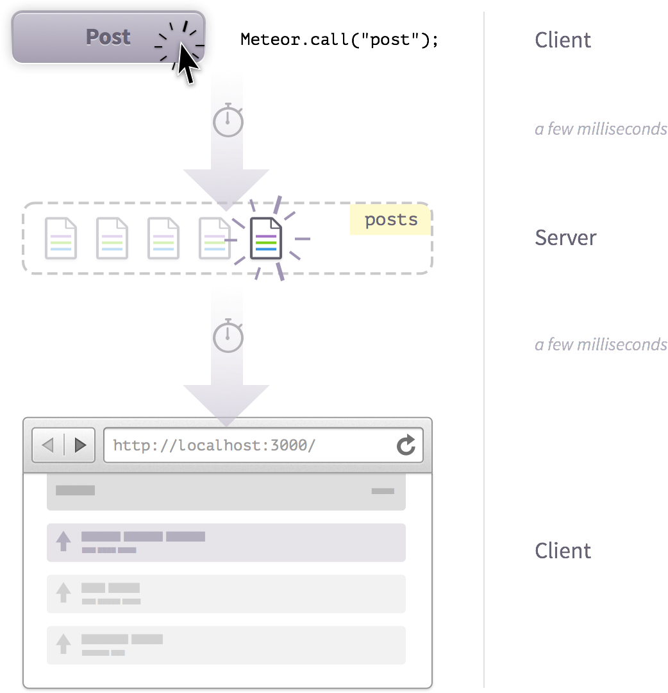没有延迟补偿的情况
Meteor 的内置方法是一种在服务器上执行一系列命令的结构化方法。在示例中，我们使用内置方法是为了确保新帖子是通过作者的姓名和 ID ，以及当前服务器时间去标记。
然而，如果 Meteor 用最基本的方式去执行内置方法，我们会注意到一些问题。想一想下面事件的序列（注：为演示方便，时间戳值是随机的生成的）：
+0ms: 用户单击提交按钮，浏览器触发内置方法的调用。+200ms: 服务器更改 Mongo 数据库。+500ms: 客户端接收到这些变化，并更新页面反映更改结果。
如果这是 Meteor 的操作方式，它会有一个很短的时间差去看到这样的执行操作的结果（延时的多少会取决于你的服务器性能）。但我们不可能让这些情况出现在 Web 应用程序中！
延迟补偿
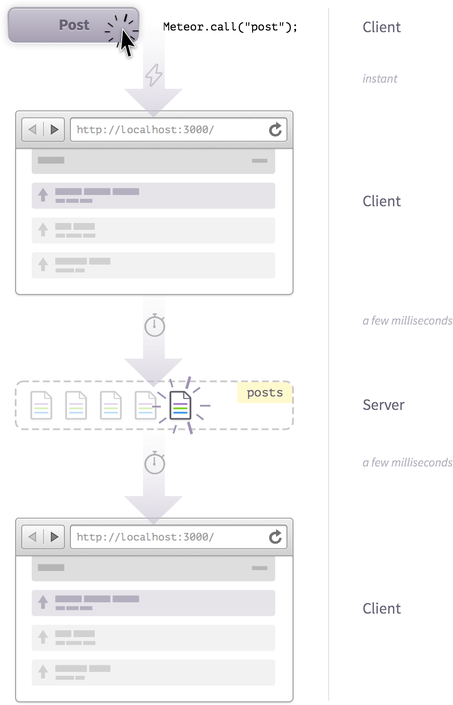延迟补偿的情况
为了避免这个问题，Meteor 引入了一个叫做延迟补偿（Latency Compensation） 的概念。如果我们把 post 方法的定义放在 collections/ 目录下。这意味着它在服务端和客户端上都存在，而且是同时运行！
当你使用内置方法的时候，客户端会发送请求到服务器去调用，同时还模仿服务器内置方法去操作本地数据库集合。所以现在我们的工作流程是：
+0ms: 用户单击提交按钮，浏览器触发内置方法的调用。+0ms: 客户端模仿内置方法操作本地的数据集合和以及通过更改页面来反映这一变化。+200ms: 服务器更改 Mongo 数据库。+500ms: 客户端接收这些更改并取消刚刚的模仿操作，根据服务器的更改覆盖它们（通常是相同的）。页面的变化反映了这一过程。
这样用户就会立刻看到变化。服务器的响应返回一段时间后，根据服务器数据库发送过来的更改请求，本地数据库可能会或可能不会有明显的改变。因此，我们应该学会确保本地数据尽可能地与服务器数据库保持一致。
观察延迟补偿
我们可以对 post 内置方法的调用稍作改动。为此，我们将会通过 npm 包 futures ，使用一些高级的编程方式去把延迟对象放到我们的内置方法调用里面。
我们将使用 isServer 去问 Meteor 现在所调用的内置方法是在客户端被调用（作为一个存根 Stub）或是在服务器端。这个存根 stub 是模仿内置方法在客户端运行的模拟方法，而“真正的”内置方法是在服务器上运行的。
所以我们会询问 Meteor 这部分代码是否在服务器端执行。如果是，我们会在帖子的标题后面添加 (server) 字符串。如果不是，我们将添加 (client) 字符串：
Posts = new Mongo . Collection ( 'posts' );
Meteor . methods ({
postInsert : function ( postAttributes ) {
check ( this . userId , String );
check ( postAttributes , {
title : String ,
url : String
});
if ( Meteor . isServer ) {
postAttributes . title += "(server)" ;
// wait for 5 seconds
Meteor . _sleepForMs ( 5000 );
} else {
postAttributes . title += "(client)" ;
}
var postWithSameLink = Posts . findOne ({ url : postAttributes . url });
if ( postWithSameLink ) {
return {
postExists : true ,
_id : postWithSameLink . _id
}
}
var user = Meteor . user ();
var post = _ . extend ( postAttributes , {
userId : user . _id ,
author : user . username ,
submitted : new Date ()
});
var postId = Posts . insert ( post );
return {
_id : postId
};
}
}); collections/posts.js
如果我们到此为止，这个演示就不那么有意义。当前，看起来就像是帖子表单提交后暂停了5秒钟，然后转到主帖子列表，没发生其他事情。
为了理解这是为什么，让我们看看帖子提交的事件 handler：
Template . postSubmit . events ({
'submit form' : function ( e ) {
e . preventDefault ();
var post = {
url : $ ( e . target ). find ( '[name=url]' ). val (),
title : $ ( e . target ). find ( '[name=title]' ). val ()
};
Meteor . call ( 'postInsert' , post , function ( error , result ) {
// display the error to the user and abort
if ( error )
return alert ( error . reason );
// show this result but route anyway
if ( result . postExists )
alert ( 'This link has already been posted' );
Router . go ( 'postPage' , { _id : result . _id });
});
}
}); client/templates/posts/post_submit.js
我们在方法 call 回调函数中放了 Router.go() 路由函数。
现在的行为通常是正确的。毕竟，你不能在确定他们帖子提交是否有效之前去跳转用户，只是因为如果立即跳转走，然后几秒钟后再转回到原始帖子页面去更正数据，这会非常令人困惑。
但是对于这个例子而言，我们想立即看看结果。所以我们将路由更改到 postsList 路由（我们还不能路由到帖子，因为在方法之外我们不知道帖子的 _id），把它从回调函数中移出来，看看会发生什么：
Template . postSubmit . events ({
'submit form' : function ( e ) {
e . preventDefault ();
var post = {
url : $ ( e . target ). find ( '[name=url]' ). val (),
title : $ ( e . target ). find ( '[name=title]' ). val ()
};
Meteor . call ( 'postInsert' , post , function ( error , result ) {
// display the error to the user and abort
if ( error )
return alert ( error . reason );
// show this result but route anyway
if ( result . postExists )
alert ( 'This link has already been posted' );
});
Router . go ( 'postsList' );
}
}); client/templates/posts/post_submit.js
提交 7-5-1 Demonstrate the order that posts appear using a sleep.
如果我们现在创建一个帖子，我们可以清楚地看到延迟补偿。首先，插入一个标题带 (client) 的帖子（列表的第一个帖子，链接到 GitHub）：
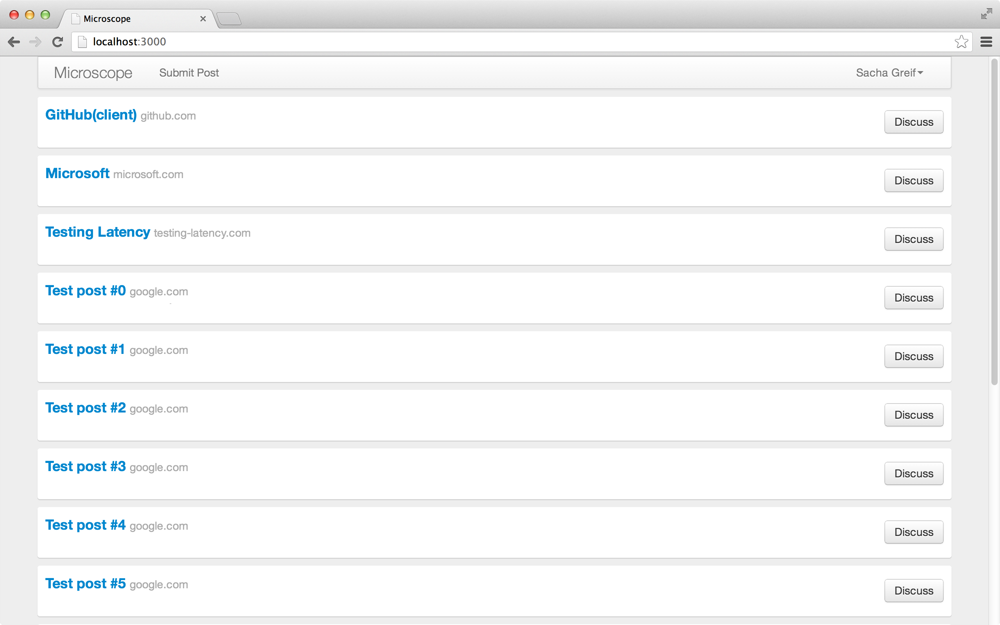我们的帖子首先储存在客户端集合
接着，五秒之后，它就会被服务器插入的真正帖子文档所替代：
我们的帖子在客户端收到来自服务器端集合传来的更新 客户端集合内置方法
通过上面所说的，你可能会认为内置方法很复杂，但事实上它们也可以相当简单。实际上我们已经用过三个非常简单的内置方法：集合的操作方法 insert、update 和 remove。
当你定义一个服务器集合称为 'posts' ，你已经隐式地定义了这三个内置方法： posts/insert、posts/update 和 posts/delete。换句话说，当你在本地集合中调用 Posts.insert()，你已经在调用延时补偿方法来做下面这两件事：
检查我们是否允许通过调用 allow 和 deny 方法的回调去操作集合（然而这并不需要发生在内置方法的模拟）。
实际地修改底层的数据库。
内置方法的相互调用
你可能已经意识到当我们插入帖子的时候，post 的内置方法调用了另一个内置方法（posts/insert）。这是如何工作的呢？
当模拟方法（客户端版本的内置方法）开始运行，模拟方法执行 insert（插入的是本地集合）时，我们不叫它真正的服务器端 insert，但我们会认为服务器端 的 post 也将会同样的被插入。
因此，当服务器端的 post 调用内置方法 insert 的时候更加没有必要去担心的客户端模拟方法，它肯定能够在客户端顺利地插入。
像之前一样，在阅读下一章之前，不要忘记还原你所做的更改。
编辑帖子
8
上一章，我们已经学会了创建帖子，下面来学习编辑和删除它们。页面的代码非常简单，让我们在这个时候来谈论一下 Meteor 是如何管理用户权限。
让我们先设置我们的路由器，添加一个可以访问帖子编辑页的路径，并设置它的数据上下文：
Router . configure ({
layoutTemplate : 'layout' ,
loadingTemplate : 'loading' ,
notFoundTemplate : 'notFound' ,
waitOn : function () { return Meteor . subscribe ( 'posts' ); }
});
Router . route ( '/' , { name : 'postsList' });
Router . route ( '/posts/:_id' , {
name : 'postPage' ,
data : function () { return Posts . findOne ( this . params . _id ); }
});
Router . route ( '/posts/:_id/edit' , {
name : 'postEdit' ,
data : function () { return Posts . findOne ( this . params . _id ); }
});
Router . route ( '/submit' , { name : 'postSubmit' });
var requireLogin = function () {
if ( ! Meteor . user ()) {
if ( Meteor . loggingIn ()) {
this . render ( this . loadingTemplate );
} else {
this . render ( 'accessDenied' );
}
} else {
this . next ();
}
}
Router . onBeforeAction ( 'dataNotFound' , { only : 'postPage' });
Router . onBeforeAction ( requireLogin , { only : 'postSubmit' }); lib/router.js
帖子编辑模板
我们可以现在专注模板了。我们的 postEdit 模板就包含一个相当标准的表单：
<template name= "postEdit" >
<form class= "main form" >
<div class= "form-group" >
<label class= "control-label" for= "url" > URL</label>
<div class= "controls" >
<input name= "url" id= "url" type= "text" value= "{{url}}" placeholder= "Your URL" class= "form-control" />
</div>
</div>
<div class= "form-group" >
<label class= "control-label" for= "title" > Title</label>
<div class= "controls" >
<input name= "title" id= "title" type= "text" value= "{{title}}" placeholder= "Name your post" class= "form-control" />
</div>
</div>
<input type= "submit" value= "Submit" class= "btn btn-primary submit" />
<hr/>
<a class= "btn btn-danger delete" href= "#" > Delete post</a>
</form>
</template> client/templates/posts/post_edit.html
用 post_edit.js 来配合这个的模板：
Template . postEdit . events ({
'submit form' : function ( e ) {
e . preventDefault ();
var currentPostId = this . _id ;
var postProperties = {
url : $ ( e . target ). find ( '[name=url]' ). val (),
title : $ ( e . target ). find ( '[name=title]' ). val ()
}
Posts . update ( currentPostId , { $set : postProperties }, function ( error ) {
if ( error ) {
// 向用户显示错误信息
alert ( error . reason );
} else {
Router . go ( 'postPage' , { _id : currentPostId });
}
});
},
'click .delete' : function ( e ) {
e . preventDefault ();
if ( confirm ( "Delete this post?" )) {
var currentPostId = this . _id ;
Posts . remove ( currentPostId );
Router . go ( 'postsList' );
}
}
}); client/templates/posts/post_edit.js
相信你现在已经对这些代码都相当的熟悉了。
我们有两个事件回调函数：一个用于表单的 submit 事件，一个用于删除链接的 click 事件。
删除链接的回调函数是非常简单的：先防止默认点击事件，然后提示确认窗口。如果确认删除，它将从模板的数据上下文中获得当前帖子的 ID ，然后删除它，最后把用户重定向到主页。
更新的回调函数需要长一点时间，但并不复杂。在防止默认提交事件然后获取了当前帖子之后，我们将从表单中获取相关字段的值，并将它们存储在一个 postProperties 的对象中。
然后，我们把该对象通过 $setCollection.update() 方法，并通过回调函数去判断如果更新失败就显示错误信息；如果更新成功了，将自动返回到该帖子的页面。
添加链接
我们还应该添加一个编辑帖子的链接，以便用户可以访问到帖子编辑页面：
<template name= "postItem" >
<div class= "post" >
<div class= "post-content" >
<h3><a href= "{{url}}" > {{title}}</a><span> {{domain}}</span></h3>
<p>
submitted by {{author}}
{{#if ownPost}}<a href= "{{pathFor 'postEdit'}}" > Edit</a> {{/if}}
</p>
</div>
<a href= "{{pathFor 'postPage'}}" class= "discuss btn btn-default" > Discuss</a>
</div>
</template> client/templates/posts/post_item.html
当然，我们不能让你的帖子提供给其他用户去编辑。这就要通过 ownPost helper 来帮忙：
Template . postItem . helpers ({
ownPost : function () {
return this . userId === Meteor . userId ();
},
domain : function () {
var a = document . createElement ( 'a' );
a . href = this . url ;
return a . hostname ;
}
}); client/templates/posts/post_item.js
帖子编辑表单。 我们的帖子编辑表单看起来很好，但是目前还不能够进行任何的编辑，这是为什么？
设置权限
自从我们移除了 insecure 包，现在所有客户端的修改都会被拒绝。
为了解决这个问题，我们需要建立一些权限规则。首先，在 lib 目录下创建一个新的 permissions.js 文件。这样做将会首先加载我们权限文件（它在服务端和客户端都可以被加载到）：
// check that the userId specified owns the documents
ownsDocument = function ( userId , doc ) {
return doc && doc . userId === userId ;
} lib/permissions.js
在创建帖子 这个章节，我们抛弃了 allow() 方法，因为我们只通过服务端方法去插入新的帖子（绕过了 allow() 方法）。
但是现在我们要在客户端编辑和删除帖子！我们回到 posts.js 文件并添加 allow() ：
Posts = new Mongo . Collection ( 'posts' );
Posts . allow ({
update : function ( userId , post ) { return ownsDocument ( userId , post ); },
remove : function ( userId , post ) { return ownsDocument ( userId , post ); }
});
//...
lib/collections/posts.js
限制编辑
尽管你可以编辑自己的帖子，但并不意味着你可以允许去编辑帖子的每个 属性。例如，我们不允许用户创建一个帖子之后，再将其分配给其他用户。
我们用 Meteor 的 deny() 方法，以确保用户只能编辑特定的字段：
Posts = new Mongo . Collection ( 'posts' );
Posts . allow ({
update : function ( userId , post ) { return ownsDocument ( userId , post ); },
remove : function ( userId , post ) { return ownsDocument ( userId , post ); }
});
Posts . deny ({
update : function ( userId , post , fieldNames ) {
// 只能更改如下两个字段：
return ( _ . without ( fieldNames , 'url' , 'title' ). length > 0 );
}
});
//...
lib/collections/posts.js
代码中的 fieldNames 数组，它包含了需要被修改的字段，并使用 Underscore 的 without() 方法返回一个不包含 url 和 title 字段的子数组。
正常情况下，这个数组应该是空的，它的长度应该是0。如果有人采取其他操作，这个数组的长度将变为1或更多，回调函数将返回 true （因此禁止更新）。
你也许注意到了在我们的代码中没有检查链接是否重复的代码。这就意味着用户成功添加一个链接后，再编辑时就会绕过检查。这个问题同样可以通过为编辑帖子表单使用 Meteor 内置方法来解决，但是我们将它作为练习留给读者。
内置方法的回调 vs 客户端数据操作
创建帖子，我们使用的是 postInsert 的内置方法，而编辑和删除帖子，我们直接在客户端调用 update 和 remove，并通过 allow 和 deny 去限制使用权限。
我们该如何去选择使用呢？
当操作相对比较直观，你可以通过 allow 和 deny 去设置你的规则的时候，直接在客户端进行操作通常会更简单。
然而，一旦你需要做一些在用户控制以外的事情（比如设置一个新帖子的时间戳，或者把帖子分配到正确的用户），这种情况使用内置方法会更好。
内置方法也适用在其他的一些情景：
当你需要通过内置方法的回调函数去获得返回值的时候，而不是等待响应和同步才传递的数据。
对于一些繁重的数据库操作，比如要提取大量的数据集合。
计算或者合计数据的时候（比如：计数、平均值、求和）。
请阅读我们的 blog 来深入了解这个话题。
允许和拒绝
8.5
Meteor 的安全系统不需要我们在每次修改数据的时候，在各自的函数里面进行手动检查。
例如，对于一个博客系统，我们常常需要做很多操作，往新帖子上添加属性，当发布帖子的时候进行特定检查。这些操作都是围绕帖子（post）这个对象进行的，所以我们应该为帖子设置一个专门的函数进行安全检查。
但在另一方面，我们又不希望为修改帖子或删除帖子这些简单的操作编写特定的函数。我们只需要在这些操作之前，检查用户是否有权限就可以了。这时我们就需要用到允许（allow）和拒绝（deny）回调函数。
这些回调函数可以方便地让我们定义哪些数据可以被修改，哪些可以被删除。另外，这些回调函数还整合了用户系统（account system），用以判断权限。
多个回调函数
我们可以根据需要定义多个允许 allow 回调函数。但是我们只需要其中至少有一个 返回 true 就可以让操作通过验证。当 Post.insert 被调用时（无论是在我们 app 的客户端代码调用，还是在浏览器控制台调用），服务器会逐个运行为 insert 设置的允许（allow）回调函数，直到其中一个返回 true 为止。如果这样的允许回调函数不存在，服务器就不会允许 insert 操作，并给客户端返回一个 403 错误。
类似地，我们也可以定义一个或者多个拒绝 deny 回调函数。如果其中一个回调函数返回 true，操作就会被取消，并且返回 403。这意味着，一个成功的 insert 操作要求至少一个返回 true 的允许 allow 回调函数，并且所有 拒绝 deny 回调函数都返回 false。
注：n/e 表示该函数没有被执行 更直观地说，Meteor 从拒绝回调函数开始，然后是 allow 函数，逐一执行，直到有一个返回 true。
这个模式的一个实际例子就是，建立两个 allow() 允许回调函数，一个用于检查帖子是否属于当前用户，另外一个用于检查当前用户是否管理员。如果当前用户是管理员，由于至少有一个回调函数返回 true，那就确保他们可以更新任何帖子。
延迟补偿
还记得我们前面说过，数据库的可变函数（例如 .update()）使用了一种延迟补偿技术。所以，当你尝试从浏览器的控制台删除一篇不属于你的帖子的时候，你会看到帖子短时间内消失，但马上又会重新出现。这是因为帖子并没有真正从后台删除，删除操作被后台拒绝了。
这样的行为在控制台上不是问题（开发者可以随意支配数据进行开发）。但是，你需要确保这样的行为不会出现在用户界面上。比如说，你需要确保对于用户不能删除的帖子，用户不会看到删除键。
庆幸的是，你可以在客户端和服务端使用一样的代码进行权限管理（例如，你可以写一个 canDeletePost(user, post) 函数，把它放在一个共享的 /lib 文件夹下面），这样做通常不需要太多额外的代码。
服务端权限
只有来自客户端的数据库操作需要被权限系统验证。服务端的所有 操作都被认定为安全的，不需要被权限系统验证。
这意味着如果你创建了一个服务端函数 deletePost，而且这个函数可以被客户端执行，那么任何用户都可以删除任何帖子了。因此，你可能不想那么做，除非你在函数中也验证用户权限。
错误
9
仅使用浏览器标准的 alert() 对话窗去警告用户他们的提交有错误有那么一点不令人满意，而且显然不是一个良好的用户体验。我们可以做得更好。
相反，让我们建立一个更加灵活的错误报告机制，来更好地在不打断流程的情况下告诉用户到底发生了什么。
我们要实现一个简单的系统，在窗口右上角显示新的错误信息，类似于流行的 Mac OS 应用程序 Growl 。
介绍本地集合（Local collection）
一开始，我们需要创建一个集合来存储我们的错误。既然错误只与当前会话相关，而且不需要以任何方式长久存在，我们要在这做点新鲜的事儿，创建一个本地集合（Local collection） 。这意味着，错误 Errors 集合将会只存在于浏览器 中，并且将不作任何尝试去同步回服务器。
为实现它，我们在 client 文件夹中创建错误（确保这集合只在客户端存在），我们将它的 MongoDB 集合命名为 null （因为集合的数据将不会保存在服务器端的数据库中）：
// 本地（仅客户端）集合
Errors = new Mongo . Collection ( null ); client/helpers/errors.js
一开始，我们应该建立一个可以储存错误的集合。介于错误只是对于当前的会话，我们将采用及时性集合。这就意味着错误集合只存在于当前的浏览器，该集合不会与服务端同步。
既然集合已经建立了，我们可以创建一个 throwError 函数用来添加新的错误。我们不需要担心 allow 和 deny 或其他任何的安全考虑，因为这个集合对于当前用户是“本地的”。
throwError = function ( message ) {
Errors . insert ({ message : message });
}; client/helpers/errors.js
使用本地集合去存储错误的优势在于，就像所有集合一样，它是响应性的————意味着我们可以以显示其他任何集合数据的同样的方式，去响应性地显示错误。
显示错误
我们将在主布局的顶部插入错误信息：
<template name= "layout" >
<div class= "container" >
{{> header}}
{{> errors}}
<div id= "main" class= "row-fluid" >
{{> yield}}
</div>
</div>
</template> client/templates/application/layout.html
让我们现在在 errors.html 中创建 errors 和 error 模版：
<template name= "errors" >
<div class= "errors" >
{{#each errors}}
{{> error}}
{{/each}}
</div>
</template>
<template name= "error" >
<div class= "alert alert-danger" role= "alert" >
<button type= "button" class= "close" data-dismiss= "alert" > × </button>
{{message}}
</div>
</template> client/templates/includes/errors.html
Twin 模版
你可能注意到我们在一个文件里面建立了两个模板。直到现在我们一直在遵循“一个文件， 一个模板”的标准，但对于 Meteor 而言，我们把所有模板放在同一个文件里也是一样的（但是这会让 main.html 的代码变得非常混乱！）。
在当前情况下，因为这两个错误模板都比较小，我们破例将它们放在一个文件里，使我们的 repo 代码库更干净些。
我们只需要加上我们的模板 helper 就可以大功告成了！
Template . errors . helpers ({
errors : function () {
return Errors . find ();
}
}); client/templates/includes/errors.js
你可以尝试手动测试我们的新错误消息了。打开浏览器控制台，并输入：
throwError ( "我就是一个错误!" ); 测试错误消息。 两种类型的错误
在这一点上，重要的是要把“应用级（app-level）”的错误和“代码级（code-level）”的错误区别开来。
应用级 错误一般是由用户触发，用户从而能够对症采取行动。这些包括像验证错误、权限错误、“未找到”错误，等等。这是是那种你希望展现给用户，以帮助他们解决他们刚刚遇到的任何问题的错误。
代码级 错误，作为另一种类型，是实际的代码 bug 非期待情况下触发的，你可能不希望 将错误直接呈现给用户，而是通过比如第三方错误跟踪服务（比如 Kadira ）去跟踪错误。
在本章中，我们将重点放在处理第一种类型的错误，而不是去抓虫子（bug）。
创建错误
我们知道怎样显示错误，但我们还需要在发现之前去触发错误。实际上我们已经建立了良好的错误情境：重复帖子的警告。我们简单地用新的 throwError 函数去替代 postSubmit 事件 helper 中的 alert 调用：
Template . postSubmit . events ({
'submit form' : function ( e ) {
e . preventDefault ();
var post = {
url : $ ( e . target ). find ( '[name=url]' ). val (),
title : $ ( e . target ). find ( '[name=title]' ). val ()
};
Meteor . call ( 'postInsert' , post , function ( error , result ) {
// display the error to the user and abort
if ( error )
return throwError ( error . reason );
// show this result but route anyway
if ( result . postExists )
throwError ( 'This link has already been posted' );
Router . go ( 'postPage' , { _id : result . _id });
});
}
}); client/templates/posts/post_submit.js
既然到此，我们也针对 postEdit 事件 helper 做同样的事情：
Template . postEdit . events ({
'submit form' : function ( e ) {
e . preventDefault ();
var currentPostId = this . _id ;
var postProperties = {
url : $ ( e . target ). find ( '[name=url]' ). val (),
title : $ ( e . target ). find ( '[name=title]' ). val ()
}
Posts . update ( currentPostId , { $set : postProperties }, function ( error ) {
if ( error ) {
// display the error to the user
throwError ( error . reason );
} else {
Router . go ( 'postPage' , { _id : currentPostId });
}
});
},
//...
}); client/templates/posts/post_edit.js
亲自试一试：尝试建立一个帖子并输入 URL http://meteor.com。因为这个 URL 已经存在了，你可以看到：
触发一个错误 清理错误
你会注意到错误消息在几秒钟后自动消失。这是因为本书开头我们往样式表中添加的一些 CSS 而产生的魔力：
@keyframes fadeOut {
0 % { opacity : 0 ;}
10 % { opacity : 1 ;}
90 % { opacity : 1 ;}
100 % { opacity : 0 ;}
}
//...
.alert {
animation : fadeOut 2700ms ease-in 0s 1 forwards ;
//...
} client/stylesheets/style.css
我们定义了一个有四帧透明度属性变化（分别是 0%、10%、90% 和 100% 贯穿整个动画过程）的 fadeOut CSS 动画，并附在了 .alert class 样式。
动画时长为 2700 毫秒，使用 ease-in 效果，有 0 秒延迟，运行一次，当动画完成时，最后停留在最后一帧。
动画 vs 动画
你也许在想为什么我们使用基于 CSS 的动画（预先定义，并且在我们应用控制以外），而不用 Meteor 本身来控制动画。
虽然 Meteor 的确提供插入动画的支持，但是我们想在本章专注于错误。所以我们现在使用“笨”CSS 动画，我们把比较炫丽的东西留在以后的动画章节。
这可以工作了，但是如果你要触发多个错误（比如，通过提交三次同一个连接），你会看到错误信息会堆叠在一起：
堆栈溢出。 这是因为虽然 .alert 元素在视觉上消失了，但仍存留在 DOM 中。我们需要修正这个问题。
这正是 Meteor 发光的情形。由于 Errors 集合是响应性的，我们要做的就是将旧的错误从集合中删除！
我们用 Meteor.setTimeout 指定在一定时间（当前情形，3000毫秒）后执行一个回调函数。
Template . errors . helpers ({
errors : function () {
return Errors . find ();
}
});
Template . error . onRendered ( function () {
var error = this . data ;
Meteor . setTimeout ( function () {
Errors . remove ( error . _id );
}, 3000 );
}); client/templates/includes/errors.js
一旦模板在浏览器中渲染完毕，onRenderedthis 是指当前模板实例，而 this.data 是当前被渲染的对象的数据（这种情况下是，一个错误）。
寻求验证
到现在为止，我们还没有对表单进行任何验证。至少，我们想让用户为新帖子提供 URL 和标题。那么我们确保他们这么做。
我们要做两件事：第一，我们给任何有问题的表单字段的父 div 标签一个特别的 has-error CSS class。第二，我们在字段下方显示一个有用的错误消息。
首先，我们要准备 postSubmit 模板来包含这些新 helper：
<template name= "postSubmit" >
<form class= "main form" >
<div class= "form-group {{errorClass 'url'}}" >
<label class= "control-label" for= "url" > URL</label>
<div class= "controls" >
<input name= "url" id= "url" type= "text" value= "" placeholder= "Your URL" class= "form-control" />
<span class= "help-block" > {{errorMessage 'url'}}</span>
</div>
</div>
<div class= "form-group {{errorClass 'title'}}" >
<label class= "control-label" for= "title" > Title</label>
<div class= "controls" >
<input name= "title" id= "title" type= "text" value= "" placeholder= "Name your post" class= "form-control" />
<span class= "help-block" > {{errorMessage 'title'}}</span>
</div>
</div>
<input type= "submit" value= "Submit" class= "btn btn-primary" />
</form>
</template> client/templates/posts/post_submit.html
注意我们传递参数（分别是 url 和 title）到每个 helper。这让我们两次重复使用同一个 helper，基于参数修改它的行为。
现在到了有趣的部分：使这些 helper 真正做点什么事情。
我们会用会话 Session 去存储包含任何潜在错误的 postSubmitErrors 对象。当用户使用表单时，这个对象会改变，也就是响应性地更新表单代码和内容。
首先，当 postSubmit 模板被创建时，我们初始化对象。这确保用户不会看到上次访问该页面时遗留下的旧的错误消息。
然后定义我们的两个模板 helper，紧盯 Session.get('postSubmitErrors') 的 field 属性（field 指 url 或 title 取决于我们如何调用 helper）。
errorMessage 只是返回消息本身，而 errorClass 检查消息是否存在 ，如果为真返回 has-error。
Template . postSubmit . onCreated ( function () {
Session . set ( 'postSubmitErrors' , {});
});
Template . postSubmit . helpers ({
errorMessage : function ( field ) {
return Session . get ( 'postSubmitErrors' )[ field ];
},
errorClass : function ( field ) {
return !! Session . get ( 'postSubmitErrors' )[ field ] ? 'has-error' : '' ;
}
});
//...
client/templates/posts/post_submit.js
你可以测试 helper 是否工作正常，打开浏览器控制台并输入以下代码：
Session . set ( 'postSubmitErrors' , { title : 'Warning! Intruder detected. Now releasing robo-dogs.' }); 浏览器控制台
红色警告！Red alert! 下一步将 postSubmitErrors Session 会话对象绑在表单上。
开始之前，我们在 posts.js 中添加一个新的 validatePost 函数来监视 post 对象，返回一个包含任何错误相关消息的（即，title 或 url 字段是否未填写）errors 对象：
//...
validatePost = function ( post ) {
var errors = {};
if ( ! post . title )
errors . title = "请填写标题" ;
if ( ! post . url )
errors . url = "请填写 URL" ;
return errors ;
}
//...
lib/collections/posts.js
我们通过 postSubmit 事件 helper 去调用这个函数：
Template . postSubmit . events ({
'submit form' : function ( e ) {
e . preventDefault ();
var post = {
url : $ ( e . target ). find ( '[name=url]' ). val (),
title : $ ( e . target ). find ( '[name=title]' ). val ()
};
var errors = validatePost ( post );
if ( errors . title || errors . url )
return Session . set ( 'postSubmitErrors' , errors );
Meteor . call ( 'postInsert' , post , function ( error , result ) {
// 向用户显示错误信息并终止
if ( error )
return throwError ( error . reason );
// 显示这个结果且继续跳转
if ( result . postExists )
throwError ( 'This link has already been posted' );
Router . go ( 'postPage' , { _id : result . _id });
});
}
}); client/templates/posts/post_submit.js
注意如果出现任何错误，我们用 return 终止 helper 执行，而不是我们要实际地返回这个值。
抓到错误. 服务器端验证
我们还没有完成。我们在客户端 验证 URL 和标题是否存在，但是在服务器端 呢？毕竟，还会有人仍然尝试通过浏览器控制台输入一个空帖子来手动调用 postInsert 方法。
即使我们不需要在服务器端显示任何错误消息，但是我们依然要利用好那个 validatePost 函数。除了这次我们在 postInsert 方法 内调用它，而不只是在事件 helper：
Meteor . methods ({
postInsert : function ( postAttributes ) {
check ( this . userId , String );
check ( postAttributes , {
title : String ,
url : String
});
var errors = validatePost ( postAttributes );
if ( errors . title || errors . url )
throw new Meteor . Error ( 'invalid-post' , "你必须为你的帖子填写标题和 URL" );
var postWithSameLink = Posts . findOne ({ url : postAttributes . url });
if ( postWithSameLink ) {
return {
postExists : true ,
_id : postWithSameLink . _id
}
}
var user = Meteor . user ();
var post = _ . extend ( postAttributes , {
userId : user . _id ,
author : user . username ,
submitted : new Date ()
});
var postId = Posts . insert ( post );
return {
_id : postId
};
}
}); lib/collections/posts.js
再次，用户正常情况下不必看到“你必须 为你的帖子填写标题和 URL”的消息。这仅会在当用户想绕过我们煞费苦心创建的用户界面而直接使用浏览器的情况下，才会显示。
为了测试，打开浏览器控制台，输入一个没有 URL 的帖子：
Meteor . call ( 'postInsert' , { url : '' , title : 'No URL here!' }); 如果我们完成得顺利的话，你会得到一堆吓人的代码 和“你必须为你的帖子填写标题和 URL”的消息。
编辑验证
为了更加完善，我们为帖子编辑 表单添加相同的验证。代码看起来十分相似。首先，是模板：
<template name= "postEdit" >
<form class= "main form" >
<div class= "form-group {{errorClass 'url'}}" >
<label class= "control-label" for= "url" > URL</label>
<div class= "controls" >
<input name= "url" id= "url" type= "text" value= "{{url}}" placeholder= "Your URL" class= "form-control" />
<span class= "help-block" > {{errorMessage 'url'}}</span>
</div>
</div>
<div class= "form-group {{errorClass 'title'}}" >
<label class= "control-label" for= "title" > Title</label>
<div class= "controls" >
<input name= "title" id= "title" type= "text" value= "{{title}}" placeholder= "Name your post" class= "form-control" />
<span class= "help-block" > {{errorMessage 'title'}}</span>
</div>
</div>
<input type= "submit" value= "Submit" class= "btn btn-primary submit" />
<hr/>
<a class= "btn btn-danger delete" href= "#" > Delete post</a>
</form>
</template> client/templates/posts/post_edit.html
然后是模板 helper：
Template . postEdit . onCreated ( function () {
Session . set ( 'postEditErrors' , {});
});
Template . postEdit . helpers ({
errorMessage : function ( field ) {
return Session . get ( 'postEditErrors' )[ field ];
},
errorClass : function ( field ) {
return !! Session . get ( 'postEditErrors' )[ field ] ? 'has-error' : '' ;
}
});
Template . postEdit . events ({
'submit form' : function ( e ) {
e . preventDefault ();
var currentPostId = this . _id ;
var postProperties = {
url : $ ( e . target ). find ( '[name=url]' ). val (),
title : $ ( e . target ). find ( '[name=title]' ). val ()
}
var errors = validatePost ( postProperties );
if ( errors . title || errors . url )
return Session . set ( 'postEditErrors' , errors );
Posts . update ( currentPostId , { $set : postProperties }, function ( error ) {
if ( error ) {
// 向用户显示错误消息
throwError ( error . reason );
} else {
Router . go ( 'postPage' , { _id : currentPostId });
}
});
},
'click .delete' : function ( e ) {
e . preventDefault ();
if ( confirm ( "Delete this post?" )) {
var currentPostId = this . _id ;
Posts . remove ( currentPostId );
Router . go ( 'postsList' );
}
}
}); client/templates/posts/post_edit.js
就像我们为帖子提交表单所做的，我们也想在服务器端验证帖子。请记住我们不是在用一个方法去编辑帖子，而是直接从客户端的 update 调用。
这意味着我们必须添加一个新的 deny 回调函数：
//...
Posts . deny ({
update : function ( userId , post , fieldNames , modifier ) {
var errors = validatePost ( modifier . $set );
return errors . title || errors . url ;
}
});
//...
lib/collections/posts.js
注意的是参数 post 是指已存在的 帖子。我们想验证更新 ，所以我们在 modifier 的 $set 属性中调用 validatePost（就像是 Posts.update({$set: {title: ..., url: ...}})）。
这会正常运行，因为 modifier.$set 像整个 post 对象那样包含同样两个 title 和 url 属性。当然，这也的确意味着只部分更新 title 或者 url 是不行的，但是实践中不应有问题。
你也许注意到，这是我们第二个 deny 回调。当添加多个 deny 回调时，如果任何一个回调返回 true，运行就会失败。在此例中，这意味着 update 只有在面向 title 和 url 两个字段时才会成功，并且这些字段不能为空。
创建 Meteor Package
9.5
我们在报告错误的工作中已经创建了可重复使用的模式，为什么不把它打包让 Meteor 社区的其他人都可使用呢？
为了开始，我们需要一个 Meteor 开发者账号。你可以从 meteor.com 申请，但是很有可能当你注册这本书的时候已经得到了。不管哪种情况，你应该搞清楚你的用户名是什么，因为我们会在本章中大量使用它。
在本章中我们使用用户名 tmeasday，当然你也可以换成你自己的。
首先我们需要创建一个结构来存放新的包。使用命令 meteor create --package tmeasday:errors 来完成。需要注意的是 Meteor 已经创建了一个名为 packages/tmeasday:errors/ 的文件夹和一些文件。我们从编辑 package.js 开始，这文件会告诉 Meteor 如果使用这个包，有什么对象或函数要导出。
Package . describe ({
name : "tmeasday:errors" ,
summary : "A pattern to display application errors to the user" ,
version : "1.0.0"
});
Package . onUse ( function ( api , where ) {
api . versionsFrom ( '0.9.0' );
api . use ([ 'minimongo' , 'mongo-livedata' , 'templating' ], 'client' );
api . addFiles ([ 'errors.js' , 'errors_list.html' , 'errors_list.js' ], 'client' );
if ( api . export )
api . export ( 'Errors' );
}); packages/tmeasday:errors/package.js
当开发现实使用的 package 时，非常好的习惯就是在 git 部分的 Package.describe 代码块中，填写你代码库的 Git URL（比如，https://github.com/tmeasday/meteor-errors.git）。这样的话，用户可以浏览源代码，并且（假设你使用 GitHub）你的 package 的 readme 会显示在 Atomsphere 上。
让我们添加 3 个文件到 package 中。（我们可以删除 Meteor 自动添加的模板）我们可以从 Microscope 中 pull 这些文件而不用做太多修改，除了一些合适的命名和稍微清晰的 API：
Errors = {
// Local (client-only) collection
collection : new Mongo . Collection ( null ),
throw : function ( message ) {
Errors . collection . insert ({ message : message , seen : false })
}
}; packages/tmeasday:errors/errors.js
<template name= "meteorErrors" >
<div class= "errors" >
{{#each errors}}
{{> meteorError}}
{{/each}}
</div>
</template>
<template name= "meteorError" >
<div class= "alert alert-danger" role= "alert" >
<button type= "button" class= "close" data-dismiss= "alert" > × </button>
{{message}}
</div>
</template> packages/tmeasday:errors/errors_list.html
Template . meteorErrors . helpers ({
errors : function () {
return Errors . collection . find ();
}
});
Template . meteorError . rendered = function () {
var error = this . data ;
Meteor . setTimeout ( function () {
Errors . collection . remove ( error . _id );
}, 3000 );
}; packages/tmeasday:errors/errors_list.js
在 Microscope 中测试 package
现在我们需要对 Microscope 做本地测试，以确保代码工作正确。为了链接包到项目，我们用命令 meteor add tmeasday:errors。然后，需要删除已经变得多余的现有文件：
rm client/helpers/errors.js
rm client/templates/includes/errors.html
rm client/templates/includes/errors.js
在 bash console 上删除旧文件
我们需要做的另一件事情是做一些小的更新，使用正确的 API：
{{> header}}
{{> meteorErrors}}
client/templates/application/layout.html
Meteor . call ( 'postInsert' , post , function ( error , result ) {
if ( error ) {
// display the error to the user
Errors . throw ( error . reason );
client/templates/posts/post_submit.js
Posts . update ( currentPostId , { $set : postProperties }, function ( error ) {
if ( error ) {
// display the error to the user
Errors . throw ( error . reason ); client/templates/posts/post_edit.js
提交 9-5-1 创建和链接基本的 errors package。
一旦这些修改完成，我们就可恢复原来分包前的行为了。
写测试
开发包的第一个步骤是在一个应用程序中测试它，但接下来就是写一个测试套件，正确的测试包的行为。Meteor 本身自带 Tinytest（内置的包测试仪），它可以很容易地运行测试套件，以便与他人分享包时确保正确。
让我们创建一个测试文件，使用 Tinytest 来运行一些对新的包测试：
Tinytest . add ( "Errors - collection" , function ( test ) {
test . equal ( Errors . collection . find ({}). count (), 0 );
Errors . throw ( 'A new error!' );
test . equal ( Errors . collection . find ({}). count (), 1 );
Errors . collection . remove ({});
});
Tinytest . addAsync ( "Errors - template" , function ( test , done ) {
Errors . throw ( 'A new error!' );
test . equal ( Errors . collection . find ({}). count (), 1 );
// render the template
UI . insert ( UI . render ( Template . meteorErrors ), document . body );
Meteor . setTimeout ( function () {
test . equal ( Errors . collection . find ({}). count (), 0 );
done ();
}, 3500 );
}); packages/tmeasday:errors/errors_tests.js
在这些测试中，我们检查基本的 Meteor.Errors 的功能是否工作，以及再次确认该模板中的 rendered 代码是否仍在工作。
我们不会在这里写 Meteor 包测试的所有细节（而且 API 尚未最终确定，很有可能会有变化），但希望它是在一定程度上自我解释其工作原理。
使用下面的代码告诉 Meteor 如何在 package.js 中运行测试：
Package . onTest ( function ( api ) {
api . use ( 'tmeasday:errors' , 'client' );
api . use ([ 'tinytest' , 'test-helpers' ], 'client' );
api . addFiles ( 'errors_tests.js' , 'client' );
}); packages/tmeasday:errors/package.js
然后我们就可以运行测试：
meteor test -packages tmeasday:errors
终端 Terminal
通过所有测试 发布 package
现在我们要发布这个包，把它推送到 Meteor package 服务器，在 Atmopshere 中显示出来，让全世界的人都可使用。
幸运的是这很容易。我们只是 cd 到包的目录，运行命令 meteor publish --create：
cd packages/tmeasday:errors
meteor publish --create终端 Terminal
既然包已经发布，我们可以从项目中删除它，然后直接从 Atmopshere 重新添加它：
rm -r packages/tmeasday:errors
meteor add tmeasday:errors
终端 Terminal（在应用最高级别运行）
提交 9-5-4 从开发 tree 中删除 package。
现在我们应该看到 Meteor 第一次下载了我们的 package。很棒！
和往常的附录章节一样，确保先恢复你所做的改动，然后再进行下一章（或者在阅读本书其他章节时，考虑你所做的改动。）
10
社交新闻网站的目标是创建一个用户社区，如果没有提供一种方式让人们互相交流，这将是很难做到的。因此在本章中，我们添加评论！
我们首先创建一个新的集来存储评论，并在该集中添加一些初始数据。
Comments = new Mongo . Collection ( 'comments' ); lib/collections/comments.js
// Fixture data
if ( Posts . find (). count () === 0 ) {
var now = new Date (). getTime ();
// create two users
var tomId = Meteor . users . insert ({
profile : { name : 'Tom Coleman' }
});
var tom = Meteor . users . findOne ( tomId );
var sachaId = Meteor . users . insert ({
profile : { name : 'Sacha Greif' }
});
var sacha = Meteor . users . findOne ( sachaId );
var telescopeId = Posts . insert ({
title : 'Introducing Telescope' ,
userId : sacha . _id ,
author : sacha . profile . name ,
url : 'http://sachagreif.com/introducing-telescope/' ,
submitted : new Date ( now - 7 * 3600 * 1000 )
});
Comments . insert ({
postId : telescopeId ,
userId : tom . _id ,
author : tom . profile . name ,
submitted : new Date ( now - 5 * 3600 * 1000 ),
body : 'Interesting project Sacha, can I get involved?'
});
Comments . insert ({
postId : telescopeId ,
userId : sacha . _id ,
author : sacha . profile . name ,
submitted : new Date ( now - 3 * 3600 * 1000 ),
body : 'You sure can Tom!'
});
Posts . insert ({
title : 'Meteor' ,
userId : tom . _id ,
author : tom . profile . name ,
url : 'http://meteor.com' ,
submitted : new Date ( now - 10 * 3600 * 1000 )
});
Posts . insert ({
title : 'The Meteor Book' ,
userId : tom . _id ,
author : tom . profile . name ,
url : 'http://themeteorbook.com' ,
submitted : new Date ( now - 12 * 3600 * 1000 )
});
} server/fixtures.js
不要忘记来发布和订阅我们这个新的集合：
Meteor . publish ( 'posts' , function () {
return Posts . find ();
});
Meteor . publish ( 'comments' , function () {
return Comments . find ();
}); server/publications.js
Router . configure ({
layoutTemplate : 'layout' ,
loadingTemplate : 'loading' ,
notFoundTemplate : 'notFound' ,
waitOn : function () {
return [ Meteor . subscribe ( 'posts' ), Meteor . subscribe ( 'comments' )];
}
}); lib/router.js
提交 10-1 添加评论集合、发布/订阅，和测试数据。
请注意，为了使用新的数据，你需要命令 Meteor reset 清除数据库。不要忘了创建一个新的用户，并重新登录！
首先，我们在数据库中创建了几个（假的）用户，并从数据库中用他们的 id 选择出来。然后给第一篇添加注释，链接注释到帖子（postId）和用户（userId）。同时我们还添加了提交日期，评论内容和一个非规范化的作者 author 项。
此外我们在路由器中增加等待一个含有评论和帖子订阅的数组 。
显示评论
把评论存到数据库，同时还需要在评论页上显示。
<template name= "postPage" >
{{> postItem}}
<ul class= "comments" >
{{#each comments}}
{{> commentItem}}
{{/each}}
</ul>
</template> client/templates/posts/post_page.html
Template . postPage . helpers ({
comments : function () {
return Comments . find ({ postId : this . _id });
}
}); client/templates/posts/post_page.js
我们把 {{#each comments}} 块放在帖子模板里面，所以在 comments helper 里，this 指向的是当前帖子。要找到相关的评论，我们可通过 postId 属性找到链接到该帖子的评论。
我们已经了解 helper 和 Spacebars 后，显示一个评论是相当简单的。我们将在 templates 下，创建一个新的 comments 目录和一个新的 commentItem 模板，来存储所有的评论相关的信息：
<template name= "commentItem" >
<li>
<h4>
<span class= "author" > {{author}}</span>
<span class= "date" > on {{submittedText}}</span>
</h4>
<p> {{body}}</p>
</li>
</template> client/templates/comments/comment_item.html
让我们编写一个模板 helper 来帮助我们把 submitted 提交日期格式人性化的日期格式：
Template . commentItem . helpers ({
submittedText : function () {
return this . submitted . toString ();
}
}); client/templates/comments/comment_item.js
然后，我们将在每个帖子中显示评论数：
<template name= "postItem" >
<div class= "post" >
<div class= "post-content" >
<h3><a href= "{{url}}" > {{title}}</a><span> {{domain}}</span></h3>
<p>
submitted by {{author}},
<a href= "{{pathFor 'postPage'}}" > {{commentsCount}} comments</a>
{{#if ownPost}}<a href= "{{pathFor 'postEdit'}}" > Edit</a> {{/if}}
</p>
</div>
<a href= "{{pathFor 'postPage'}}" class= "discuss btn btn-default" > Discuss</a>
</div>
</template> client/templates/posts/post_item.html
添加 commentsCount helper 到 post_item.js 中：
Template . postItem . helpers ({
ownPost : function () {
return this . userId === Meteor . userId ();
},
domain : function () {
var a = document . createElement ( 'a' );
a . href = this . url ;
return a . hostname ;
},
commentsCount : function () {
return Comments . find ({ postId : this . _id }). count ();
}
}); client/templates/posts/post_item.js
提交 10-2 Display comments on `postPage`.
现在您应该能够显示初始的评论并看到如下的内容：
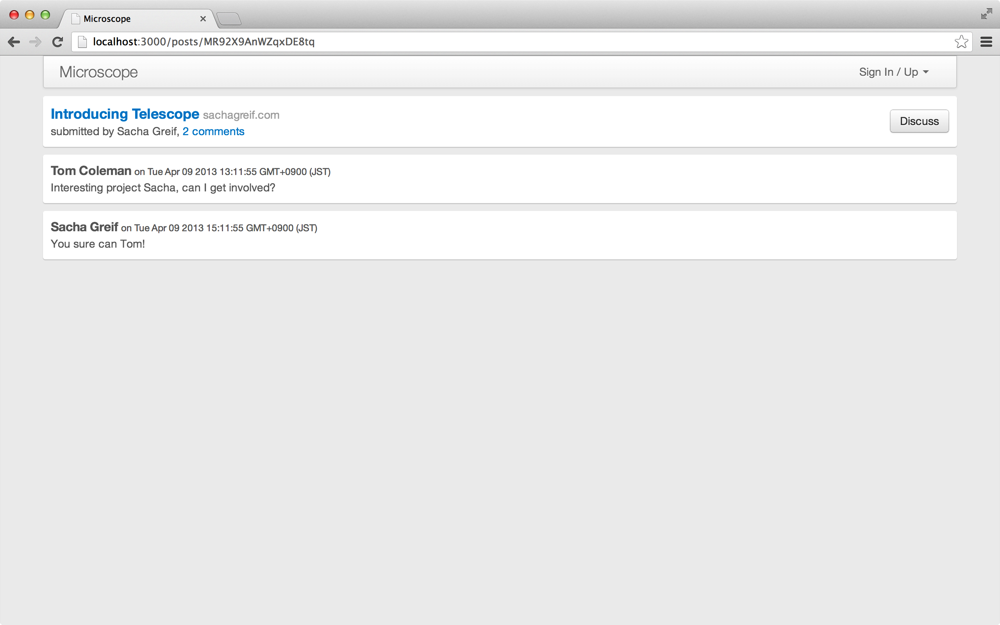显示评论
提交新评论
让用户创建新的评论，这个过程将是非常类似过去我们允许用户创建新的帖子。
首先我们通过在每个帖子底部增加一个提交框：
<template name= "postPage" >
{{> postItem}}
<ul class= "comments" >
{{#each comments}}
{{> commentItem}}
{{/each}}
</ul>
{{#if currentUser}}
{{> commentSubmit}}
{{else}}
<p> Please log in to leave a comment.</p>
{{/if}}
</template> client/templates/posts/post_page.html
然后创建评论表单模板：
<template name= "commentSubmit" >
<form name= "comment" class= "comment-form form" >
<div class= "form-group {{errorClass 'body'}}" >
<div class= "controls" >
<label for= "body" > Comment on this post</label>
<textarea name= "body" id= "body" class= "form-control" rows= "3" ></textarea>
<span class= "help-block" > {{errorMessage 'body'}}</span>
</div>
</div>
<button type= "submit" class= "btn btn-primary" > Add Comment</button>
</form>
</template> client/templates/comments/comment_submit.html
在 comment_submit.js 中调用 comment 方法，提交新的评论，这是类似于过去提交帖子的方法：
Template . commentSubmit . onCreated ( function () {
Session . set ( 'commentSubmitErrors' , {});
});
Template . commentSubmit . helpers ({
errorMessage : function ( field ) {
return Session . get ( 'commentSubmitErrors' )[ field ];
},
errorClass : function ( field ) {
return !! Session . get ( 'commentSubmitErrors' )[ field ] ? 'has-error' : '' ;
}
});
Template . commentSubmit . events ({
'submit form' : function ( e , template ) {
e . preventDefault ();
var $body = $ ( e . target ). find ( '[name=body]' );
var comment = {
body : $body . val (),
postId : template . data . _id
};
var errors = {};
if ( ! comment . body ) {
errors . body = "Please write some content" ;
return Session . set ( 'commentSubmitErrors' , errors );
}
Meteor . call ( 'commentInsert' , comment , function ( error , commentId ) {
if ( error ){
throwError ( error . reason );
} else {
$body . val ( '' );
}
});
}
}); client/templates/comments/comment_submit.js
类似以前 post 服务器端的 Meteor 方法，我们将建立一个 comment 的 Meteor 方法来创建评论，检查正确性后，插入到评论集合。
Comments = new Mongo . Collection ( 'comments' );
Meteor . methods ({
commentInsert : function ( commentAttributes ) {
check ( this . userId , String );
check ( commentAttributes , {
postId : String ,
body : String
});
var user = Meteor . user ();
var post = Posts . findOne ( commentAttributes . postId );
if ( ! post )
throw new Meteor . Error ( 'invalid-comment' , 'You must comment on a post' );
comment = _ . extend ( commentAttributes , {
userId : user . _id ,
author : user . username ,
submitted : new Date ()
});
return Comments . insert ( comment );
}
}); lib/collections/comments.js
这里没做什么太花哨的，只是检查该用户是否已经登录，该评论有一个内容，并且链接到一个帖子。
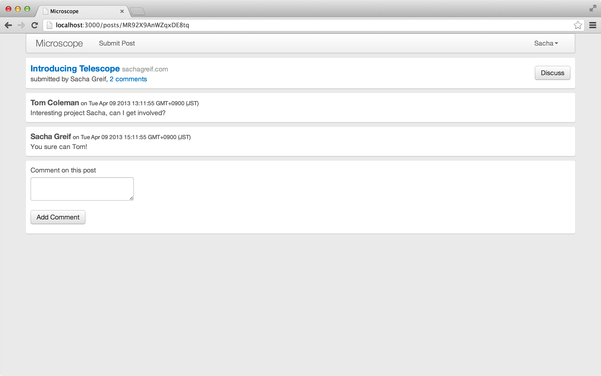评论提交表单
控制订阅评论
如同以往一样，我们将发布属于所有帖子的全部评论到每个连接的客户端。这似乎有点浪费。毕竟在任何给定的时间段，实际上只使用该数据的一小部分。因此让我们提高发布和订阅评论的精度。
如果仔细想想，我们需要订阅 comments 评论发布的时间，是当用户访问一个帖子的页面，而此刻只需要加载这个帖子的评论子集。
第一步将改变我们订阅评论的方式。目前是路由器 级订阅，这意味着当路由器初始化时，加载所有数据。
但是现在希望我们的订阅依赖于路径参数，并且参数可以在任何时候改变。因此需要将我们的订阅代码从路由器 级改到路径 级。
这样做的另一个后果：每当打开路径 时加载数据，而不是初始化应用时加载它。这意味着你在程序内浏览时，会等待加载时间。除非你打算加载全部内容到客户端，这是一个不可避免的缺点。
首先，在 configure 块中通过删除 Meteor.subscribe('comments')，停止预装全部评论（换句话说，要回以前的方法）：
Router . configure ({
layoutTemplate : 'layout' ,
loadingTemplate : 'loading' ,
notFoundTemplate : 'notFound' ,
waitOn : function () {
return Meteor . subscribe ( 'posts' );
}
}); lib/router.js
我们将为 postPage 添加一个新的路径 级的 waitOn 函数：
//...
Router . route ( '/posts/:_id' , {
name : 'postPage' ,
waitOn : function () {
return Meteor . subscribe ( 'comments' , this . params . _id );
},
data : function () { return Posts . findOne ( this . params . _id ); }
});
//...
lib/router.js
我们将 this.params._id 作为参数传递给订阅。所以让我们用这个新信息来确保限制评论属于当前帖子：
Meteor . publish ( 'posts' , function () {
return Posts . find ();
});
Meteor . publish ( 'comments' , function ( postId ) {
check ( postId , String );
return Comments . find ({ postId : postId });
}); server/publications.js
这里有一个问题：当我们返回主页，显示所有的帖子有0条评论：
我们的评论消失了！ 评论计数
这个问题的原因是：我们只装载 postPage 路径上的评论，所以当我们调用 Comments.find({postId: this._id}) 中 commentsCount helper，Meteor 找不到必要的客户端数据为我们提供计数值。
处理这一问题的最佳办法是非规范化 的评论计数加到帖子中（如果你不明白这意味着什么，不用担心，接下来的附录会详解！）。正如我们将看到的，代码中复杂性稍微增加，但从不发布帖子列表的全部 评论中，得到的执行性能改善是值得的。
我们将通过在 post 数据结构中增加一个 commentsCount 属性来实现这一目标。首先，更新帖子的测试数据（用 meteor reset 去重载它们 —— 不要忘了之后重新创建你的帐户）：
// 测试数据
if ( Posts . find (). count () === 0 ) {
var now = new Date (). getTime ();
// create two users
var tomId = Meteor . users . insert ({
profile : { name : 'Tom Coleman' }
});
var tom = Meteor . users . findOne ( tomId );
var sachaId = Meteor . users . insert ({
profile : { name : 'Sacha Greif' }
});
var sacha = Meteor . users . findOne ( sachaId );
var telescopeId = Posts . insert ({
title : 'Introducing Telescope' ,
userId : sacha . _id ,
author : sacha . profile . name ,
url : 'http://sachagreif.com/introducing-telescope/' ,
submitted : new Date ( now - 7 * 3600 * 1000 ),
commentsCount : 2
});
Comments . insert ({
postId : telescopeId ,
userId : tom . _id ,
author : tom . profile . name ,
submitted : new Date ( now - 5 * 3600 * 1000 ),
body : 'Interesting project Sacha, can I get involved?'
});
Comments . insert ({
postId : telescopeId ,
userId : sacha . _id ,
author : sacha . profile . name ,
submitted : new Date ( now - 3 * 3600 * 1000 ),
body : 'You sure can Tom!'
});
Posts . insert ({
title : 'Meteor' ,
userId : tom . _id ,
author : tom . profile . name ,
url : 'http://meteor.com' ,
submitted : new Date ( now - 10 * 3600 * 1000 ),
commentsCount : 0
});
Posts . insert ({
title : 'The Meteor Book' ,
userId : tom . _id ,
author : tom . profile . name ,
url : 'http://themeteorbook.com' ,
submitted : new Date ( now - 12 * 3600 * 1000 ),
commentsCount : 0
});
} server/fixtures.js
像往常一样，更新测试数据文件时，你必须用 meteor reset 重置数据库，以确保它再次运行。
然后，我们要确保所有新帖子的评论计数从0开始：
//...
var post = _ . extend ( postAttributes , {
userId : user . _id ,
author : user . username ,
submitted : new Date (),
commentsCount : 0
});
var postId = Posts . insert ( post );
//...
collections/posts.js
当我们创建一个新的评论时，使用 Mongo 的 $inc 操作（给一个数字字段值加一）更新相关的 commentsCount：
//...
comment = _ . extend ( commentAttributes , {
userId : user . _id ,
author : user . username ,
submitted : new Date ()
});
// 更新帖子的评论数
Posts . update ( comment . postId , { $inc : { commentsCount : 1 }});
return Comments . insert ( comment );
//...
collections/comments.js
最后只需简单地删除 client/templates/posts/post_item.js 的 commentsCount helper，因为该值可以从帖子中得到。
现在用户可以互相对话，如果他们错过了新的评论，这将是不可原谅的。接下来的章节将告诉你如何实现通知，以防止这个情况发生！
非规范化
10.5
非规范化数据不存储规范化的数据。换句话说非规范化意味着相同数据的多个拷贝同时存在。
上一章中，我们在帖子中非规范化评论总数，以避免每次都加载所有的评论。在数据建模意义上说这是冗余的，因为我们可以通过计数每个评论，随时计算出该总数（当不考虑运行速度）。
非规范化通常意味着额外的开发工作。在例子中，我们每次添加或删除评论时，还需要同时更新相关的帖子，以确保 commentsCount 字段保持准确。这就是为什么关系型数据库，比如 MySQL，对这种做法不以为然。
但是，规范化做法也有其缺点：没有 commentsCount 项，就象开始我们做的那样，为了计算评论总数，每次我们都需要传输所有 的评论。非规范化使我们能够完全避免这种情况。
一份特殊发布
我们可以创建一个特殊的发布，送出我们有兴趣的的评论数（通过聚合查询服务器，我们目前能看到帖子的评论数）。
如果这样发布代码的复杂性不超过由非规范化造成的难度，它是值得考虑的…
当然，这样的考虑是和应用相关的：如果你写的代码，数据完整性是非常重要的，那么避免数据的不一致，就比性能提升，更为重要和更有较高优先级。
嵌入文件或使用多个集合
如果您是有 Mongo 的经验，你可能会感到惊奇，我们给评论单独创建了第二个集合：为什么不直接在帖子文档中嵌入评论？
事实证明当进行集合操作时，Mongo 提供的许多工具会给我们带来更好的结果。例如：
{{#each}} helper 遍历游标（collection.find() 的结果）是非常有效的。但是当它遍历一个较大文件中的对象数组时，效率就不高。allow 和 deny 在 document 文档级别上操作，因此可以很容易地确保每个评论修改的正确性，但是在帖子级别就会变得更复杂。DDP 在文档的顶级属性级操作————这意味着，如果 comment 是 post 的一个属性，每当在帖子上创建一个新评论时，服务器就会将该帖子的整个更新的评论列表发送到每个连接的客户端。
在文档级别更容易控制发布和订阅。例如，我们想对帖子的评论进行分页，如果评论没有属于它们自己的集合，我们会发现很难做到。
Mongo 推荐嵌入文档以减少昂贵的查询次数。然而，考虑到 Meteor 的架构，就不成问题了：大多数时候我们在客户端 查询评论，其数据库访问基本上是没有的。
Notifications
11
现在用户们可以给帖子添加评论了，让他们互相知道讨论已经开始了是个好主意。
我们将通知帖子的作者已经有用户在他的帖子上添加了评论，并且提供一个链接可以看到评论。
这是 Meteor 真正闪光的特性之一：因为 Meteor 在默认情况下是实时的，我们会瞬时 看到这些 notifications。不需要用户去刷新页面或者做其他检查,我们不需要写任何特殊代码就可以得到一个简单的 notifications 弹出框。
生成 Notifications
当有人在你的帖子上添加评论时我们将生成一个 notification。在后面，notifications 会扩展覆盖很多其他情况，但是目前让用户知道正在发生什么就足够了。
让我们先创建一个 Notifications 集合，和一个方法 createCommentNotification，当有人在你的帖子下添加评论时该方法会添加一个 notification 到集合。
因为我们将从客户端更新 notifications, 我们需要确定 allow 方法是防弹的。我们检查如下内容：
用户是文档的创建者才能调用 update 方法
用户只更新一个属性
更新的属性名字是 read
Notifications = new Mongo . Collection ( 'notifications' );
Notifications . allow ({
update : function ( userId , doc , fieldNames ) {
return ownsDocument ( userId , doc ) &&
fieldNames . length === 1 && fieldNames [ 0 ] === 'read' ;
}
});
createCommentNotification = function ( comment ) {
var post = Posts . findOne ( comment . postId );
if ( comment . userId !== post . userId ) {
Notifications . insert ({
userId : post . userId ,
postId : post . _id ,
commentId : comment . _id ,
commenterName : comment . author ,
read : false
});
}
}; lib/collections/notifications.js
和帖子和评论一样，Notifications 集合也是在服务器端和客户端共享的。用户看完 notifications 后，我们需要更新他们，因此需要允许更新操作。和其他部分一样只有拥有 notification 的用户才允许更新操作。
我们写了个简单的程序用来当用户给帖子添加评论时找到需要通知的用户，并插入一个新的 notification。
我们已经在服务器端方法创建了评论对象，我们用 comment._id = Comments.insert(comment) 来替换 return Comments.insert(comment);。这样就能在评论对象中保存 _id, 然后调用 createCommentNotification 方法:
Comments = new Mongo . Collection ( 'comments' );
Meteor . methods ({
commentInsert : function ( commentAttributes ) {
//...
comment = _ . extend ( commentAttributes , {
userId : user . _id ,
author : user . username ,
submitted : new Date ()
});
// update the post with the number of comments
Posts . update ( comment . postId , { $inc : { commentsCount : 1 }});
// create the comment, save the id
comment . _id = Comments . insert ( comment );
// now create a notification, informing the user that there's been a comment
createCommentNotification ( comment );
return comment . _id ;
}
}); lib/collections/comments.js
接下来发布 notifications:
Meteor . publish ( 'posts' , function () {
return Posts . find ();
});
Meteor . publish ( 'comments' , function ( postId ) {
check ( postId , String );
return Comments . find ({ postId : postId });
});
Meteor . publish ( 'notifications' , function () {
return Notifications . find ();
}); server/publications.js
在客户端订阅 notifications:
Router . configure ({
layoutTemplate : 'layout' ,
loadingTemplate : 'loading' ,
notFoundTemplate : 'notFound' ,
waitOn : function () {
return [ Meteor . subscribe ( 'posts' ), Meteor . subscribe ( 'notifications' )]
}
}); lib/router.js
提交 11-1 Added basic notifications collection.
显示 Notifications
现在我们在 header 中添加一个 notifications 列表。
<template name= "header" >
<nav class= "navbar navbar-default" role= "navigation" >
<div class= "container-fluid" >
<div class= "navbar-header" >
<button type= "button" class= "navbar-toggle collapsed" data-toggle= "collapse" data-target= "#navigation" >
<span class= "sr-only" > Toggle navigation</span>
<span class= "icon-bar" ></span>
<span class= "icon-bar" ></span>
<span class= "icon-bar" ></span>
</button>
<a class= "navbar-brand" href= "{{pathFor 'postsList'}}" > Microscope</a>
</div>
<div class= "collapse navbar-collapse" id= "navigation" >
<ul class= "nav navbar-nav" >
{{#if currentUser}}
<li>
<a href= "{{pathFor 'postSubmit'}}" > Submit Post</a>
</li>
<li class= "dropdown" >
{{> notifications}}
</li>
{{/if}}
</ul>
<ul class= "nav navbar-nav navbar-right" >
{{> loginButtons}}
</ul>
</div>
</div>
</nav>
</template> client/templates/includes/header.html
接下来创建 notifications 和 notificationItem 模板 (两个模板都在 notifications.html 文件中):
<template name= "notifications" >
<a href= "#" class= "dropdown-toggle" data-toggle= "dropdown" >
Notifications
{{#if notificationCount}}
<span class= "badge badge-inverse" > {{notificationCount}}</span>
{{/if}}
<b class= "caret" ></b>
</a>
<ul class= "notification dropdown-menu" >
{{#if notificationCount}}
{{#each notifications}}
{{> notificationItem}}
{{/each}}
{{else}}
<li><span> No Notifications</span></li>
{{/if}}
</ul>
</template>
<template name= "notificationItem" >
<li>
<a href= "{{notificationPostPath}}" >
<strong> {{commenterName}}</strong> commented on your post
</a>
</li>
</template> client/templates/notifications/notifications.html
We can see that the plan is for each notification to
contain a link to the post that was commented on, and the name of the
user that commented on it.
我们可以看到每个 notification 有一个指向帖子的链接，而且包含注释作者的名字。
接下来我们需要确定在 helper 中选择了正确的 notifications 列表，并且在用户点击链接后将 notifications 标记为已读。
Template . notifications . helpers ({
notifications : function () {
return Notifications . find ({ userId : Meteor . userId (), read : false });
},
notificationCount : function (){
return Notifications . find ({ userId : Meteor . userId (), read : false }). count ();
}
});
Template . notificationItem . helpers ({
notificationPostPath : function () {
return Router . routes . postPage . path ({ _id : this . postId });
}
});
Template . notificationItem . events ({
'click a' : function () {
Notifications . update ( this . _id , { $set : { read : true }});
}
}); client/templates/notifications/notifications.js
提交 11-2 Display notifications in the header.
你可能觉得 notifications 和 errors 很像，是的从结构上看他们很相似。但有一点不同: 我们为 notification 创建了一个集合。这意味着 notification 是持久化 的，他对于同一用户不论浏览器刷新还是跨设备都是存在的。
试一下: 打开一个新的浏览器 (比如 Firefox), 然后创建一个新用户, 然后在主用户的帖子下发表一个评论 (在 Chrome 中)。你将看到如下：
Displaying notifications. 控制 notifications 的访问权限
Notifications 工作的很好。然后这有一个小问题：所有人都能看到我们的 notifications。
如果你的浏览器还开着，试一下在浏览器 console 中输入以下 js 代码：
❯ Notifications . find (). count ();
1 Browser console
一个新的用户 (当有帖子被评论时) 不该收到任何 notifications. Notifications 集合中的内容实际上属于以前的用户。
除了可能的隐私问题外，我们不能让浏览器显示每条 notifications 的原因是. 对于一个足够规模的网站，这么做会很容易耗尽浏览器内存，并带来严重的性能问题。
我们通过 publications 来解决这个问题。我们可以通过 publications 来精确的指定哪部分集合我们想共享给其他用户。
为了实现这个，我们需要在 publication 中返回不同的 cursor 而不是使用 Notifications.find()。换句话说，我们返回的 cursor 是和当前用户的 notificatons 相关的。
这么做足够直接，因为 publish 函数有当前用户的 _id, 它存在于 this.userId 中：
Meteor . publish ( 'notifications' , function () {
return Notifications . find ({ userId : this . userId , read : false });
}); server/publications.js
提交 11-3 Only sync notifications that are relevant to the user.
现在看一下我们的两个浏览器窗口，我们会看到两个不同的 notifications 集合。
❯ Notifications . find (). count ();
1 Browser console (user 1)
❯ Notifications . find (). count ();
0 Browser console (user 2)
实际上，当你登录和登出时 Notifications 集合都会变化。这是因为当账户变化时 publications 会自动重新发布。
我们的 app 功能越来越完善，当越来越多的用户发帖时，我们的首页会无限长。下一章我们通过分页来解决这个问题。
高级的响应性
11.5
虽然需要你自己写代码来跟踪依赖变量的情况十分罕见，了解依赖变量的工作流程还是十分必要的。
设想我们现在需要跟踪一下 Microscope上，当前用户的 Facebook 朋友在 “like”
某一篇帖子的数量。 让我们假设我们已经解决了 Facebook 用户认证的问题，运用了正确的 API 调用，而且也解析了相关数据。
我们现在有一个异步的客户端函数返回 like 的数量，getFacebookLikeCount(user, url, callback)。
需要特别强调的是要记住这个函数是十分 非响应式 而且非实时的。它发起一个 HTTP 请求到 Facebook， 得到一些数据， 然后作为回调函数参数返回给我们的应用程序。 但是如果 like 数改变了而这个函数不会重新运行，那么我们的界面上就无法得到当前最新数据了。
要解决这个问题，我们首先使用 setInterval 来每隔几秒钟调用一次这个函数:
currentLikeCount = 0 ;
Meteor . setInterval ( function () {
var postId ;
if ( Meteor . user () && postId = Session . get ( 'currentPostId' )) {
getFacebookLikeCount ( Meteor . user (), Posts . find ( postId ). url ,
function ( err , count ) {
if ( ! err ) {
currentLikeCount = count ;
}
});
}
}, 5 * 1000 ); 任何时候当我们检查 currentLikeCount 变量， 我们期望可以得到一个5秒钟之内准确的数据。我们现在在帮助方法使用这个变量。代码如下：
Template . postItem . likeCount = function () {
return currentLikeCount ;
} 然而，我们无法每次当currentLikeCount 改变的时候重绘模板。尽管变量自己现在可以伪实时了，但是它不是响应式的 所以无法正确地和 Meteor 生态环境中的其他部分进行沟通。
Tracking Reactivity: Computations
Meteor 的响应性是靠 依赖 来控制的， 就是一个跟踪 Computation 的数据结构。
正如我们此前在响应式章节看到的， 一个 computation 是一段代码用来处理响应式数据。我们的例子中有一个 computation 隐式的建立给 postItem 这个模板用。 这个模板中的每个帮助方法都有自己的 computation 。
你可以想象这个 computation 就是一段专门关注响应式数据的代码。 当数据改变了， 这个 computation 就会通知 （通过 invalidate()) ， 而且也正是 computation 来决定是否有什么工作需要做。
将变量变为响应式函数
将变量 currentLikeCount 放到一个响应式数据源中，我们需要跟踪所有依赖这个变量的 computations.这需要把它从变量变为一个函数 (有返回值的函数):
var _currentLikeCount = 0 ;
var _currentLikeCountListeners = new Tracker . Dependency ();
currentLikeCount = function () {
_currentLikeCountListeners . depend ();
return _currentLikeCount ;
}
Meteor . setInterval ( function () {
var postId ;
if ( Meteor . user () && postId = Session . get ( 'currentPostId' )) {
getFacebookLikeCount ( Meteor . user (), Posts . find ( postId ),
function ( err , count ) {
if ( ! err && count !== _currentLikeCount ) {
_currentLikeCount = count ;
_currentLikeCountListeners . changed ();
}
});
}
}, 5 * 1000 );
我们建立了一个叫 _currentLikeCountListeners 的依赖，它来跟踪所有用到 currentLikeCount() 的 computations. 当 _currentLikeCount 值发生变化，我们通过调用依赖的 changed() 函数，来通知所有 computations 数据变化了。
这些 computations 可以继续处理下面的数据变化。
你可能觉得这像是在响应式数据源上的很多引用，你说对了，Meteor 提供很多工具使这项工作简单 (你不需要直接调用 computations , 他们会自动运行)。有一个叫做 reactive-var 的包，它的内容正是函数 currentLikeCount() 要做的事。我们加入这个包:
meteor add reactive-var
The we can use it to simplify our code a bit:
var currentLikeCount = new ReactiveVar ();
Meteor . setInterval ( function () {
var postId ;
if ( Meteor . user () && postId = Session . get ( 'currentPostId' )) {
getFacebookLikeCount ( Meteor . user (), Posts . find ( postId ),
function ( err , count ) {
if ( ! err ) {
currentLikeCount . set ( count );
}
});
}
}, 5 * 1000 );
现在使用这个包，我们在帮助方法中调用 currentLikeCount.get()，它会像之前一样工作。有另外一个有用的包 reactive-dict, 它提供 key-value 存储 (像 Session 一样)。
Comparing Tracker to Angular
Angular 是一个客户端响应式库，是 Google 的家伙们开发的。我们来比较 Meteor 和 Angular 的依赖跟踪方式。他们的实现方式非常不同。
我们已经知道 Meteor 使用一些被称为 comptations 的代码来实现依赖跟踪的。这些 computations 被特殊的 “响应式” 数据源(函数)跟踪，在数据变化的时候将他们自己标记为 invalidate。当需要调用 invalidate() 函数时，响应式数据源显示的 通知所有依赖。请注意这是数据变化时的一般情况，数据源也可以因为其他原因触发 invalidation。
另外，尽管通常情况下当数据 invalidate 时 computations 只是重新运行，但是你也可以在此时指定任何你想要的行为。这些给了用户很高的响应式控制权。
在 Angular 中，响应式是通过 scope 对象来调节的。一个 scope 可以看做是拥有一些特殊方法的普通 js 对象。
当你的响应式数据依赖于 scope 中的一个值，你调用 scope.$watch 方法，告诉 expression 你关心的数据（例如： 你关心 scope 中的哪些数据）和一个当 expression 发生变化时每次都运行的监听器。因此你需要显示的提供当 expression 数据变化时你要做的操作。
回到之前 Facebook 的例子，我们的代码可以写成如下：
$rootScope . $watch ( 'currentLikeCount' , function ( likeCount ) {
console . log ( 'Current like count is ' + likeCount );
}); 当然，就像在 Meteor 中你很少需要去建立 computations, 在 Angular 中你无须经常显示调用 $watch, ng-model 和 {{expressions}} 会自动建立跟踪，之后当数据变化时他们会处理重新展示的事情。
当响应式数据发生变化时， scope.$apply() 方法会被调用。他会重新计算 scope 中所有的 watcher, 然后只调用 expression 值发生变化的 watcher 的监听器方法。
因此 scope.$apply() 方法和 Meteor 中的 dependency.changed() 很相似，除了它是在 scope 级别操作，而不是给你控制权决定哪个 listener 需要重新 evaluate。换句话说，较少的控制使得 Angular 可以通过聪明和高效的方式来决定哪些 listener 需要重新 evaluate。
在 Angular 中，我们的 getFacebookLikeCount() 函数看起来如下:
Meteor . setInterval ( function () {
getFacebookLikeCount ( Meteor . user (), Posts . find ( postId ),
function ( err , count ) {
if ( ! err ) {
$rootScope . currentLikeCount = count ;
$rootScope . $apply ();
}
});
}, 5 * 1000 );
必须承认，Meteor 替我们完成了响应式的大部分繁重工作，但是希望，通过这些模式的学习，可以对你的深入研究起到帮助。
12
Microscope 的功能看起来不错。我们可以想象当它 release 之后会很受欢迎。
因此我们需要考虑一下随着新帖子越来越多所带来的性能问题。
之前我们说过客户端集合会包含服务器端数据的一个子集。我们在帖子和评论集合已经实现了这些。
但是现在，如果我们还是一口气发布所有帖子给所有的连接用户。当有成千上万的新帖子时，这会带来一些问题。为了解决这些，我们需要给帖子分页。
添加更多的帖子
首先是我们的初始化数据，我们需要添加足够的帖子来使分页有意义：
// Fixture data
if ( Posts . find (). count () === 0 ) {
//...
Posts . insert ({
title : 'The Meteor Book' ,
userId : tom . _id ,
author : tom . profile . name ,
url : 'http://themeteorbook.com' ,
submitted : new Date ( now - 12 * 3600 * 1000 ),
commentsCount : 0
});
for ( var i = 0 ; i < 10 ; i ++ ) {
Posts . insert ({
title : 'Test post #' + i ,
author : sacha . profile . name ,
userId : sacha . _id ,
url : 'http://google.com/?q=test-' + i ,
submitted : new Date ( now - i * 3600 * 1000 ),
commentsCount : 0
});
}
} server/fixtures.js
运行完 meteor reset 重启你的 app, 你会看到如下：
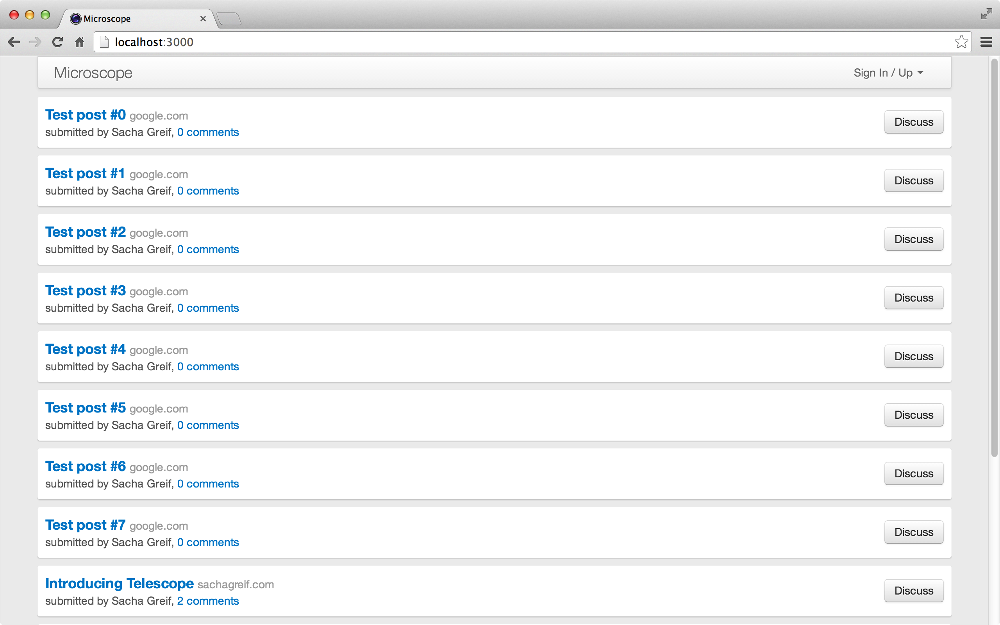显示初始化数据。
无限分页
我们将实现一个"无限"的分页。意思是在第一屏显示 10 条帖子和一个在底部显示的 “load more” 链接。点击 “load more” 链接再加载另外 10 条帖子，诸如此类无限的加载 。这意味着我们只用一个参数来实现分页，控制在屏幕上显示帖子的数量。
现在需要一个方法告诉服务器端返回给客户端帖子的数量。这些发生在路由订阅帖子的过程，我们会利用路由来实现分页。
最简单的限制返回帖子数量的方式是将返回数量加到 URL 中，如 http://localhost:3000/25。使用 URL 记录数量的另一个好处是，如果不小心刷新了页面，还会返回 25 条帖子。
为了恰当的实现分页，我们需要修改帖子的订阅方法。就像我们之前在评论 那章做的，我们需要将订阅部分的代码从 router 级变为 route 级。
这个改变内容会比较多，通过代码可以看的比较清楚。
首先，停止 Router.configure() 代码块中的 posts 订阅。即删除 Meteor.subscribe('posts'),只留下 notifications 订阅:
Router . configure ({
layoutTemplate : 'layout' ,
loadingTemplate : 'loading' ,
notFoundTemplate : 'notFound' ,
waitOn : function () {
return [ Meteor . subscribe ( 'notifications' )]
}
}); lib/router.js
我们在路由路径中加入参数 postsLimt。 参数后面的 ? 表示参数是可选的。这样路由就能同时匹配 http://localhost:3000/50 和 http://localhost:3000。
//...
Router . route ( '/:postsLimit?' , {
name : 'postsList' ,
});
//...
lib/router.js
需要注意每个路径都会匹配路由 /:parameter?。因为每个路由都会被检查是否匹配当前路径。我们要组织好路由来减少特异性。
话句话说，更特殊的路由会优先选择，例如:路由 /posts/:_id 会在前面，而路由 postsList 会放到路由组的最后，因为它太泛泛了可以匹配所有路径。
是时候处理难题了，处理订阅和找到正确的数据。我么需要处理 postsLimit 参数不存在的情况。我们给它一个默认值 5, 这样我们能更好的演示分页。
//...
Router . route ( '/:postsLimit?' , {
name : 'postsList' ,
waitOn : function () {
var limit = parseInt ( this . params . postsLimit ) || 5 ;
return Meteor . subscribe ( 'posts' , { sort : { submitted : - 1 }, limit : limit });
}
});
//...
lib/router.js
你注意到我们在订阅 posts 时传了一个 js 对象 ({sort: {submitted: -1}, limit: postsLimit}), 这个 js 对象会作为服务器端查询方法 Posts.find() 的可选参数。下面是服务器端的实现代码：
Meteor . publish ( 'posts' , function ( options ) {
check ( options , {
sort : Object ,
limit : Number
});
return Posts . find ({}, options );
});
Meteor . publish ( 'comments' , function ( postId ) {
check ( postId , String );
return Comments . find ({ postId : postId });
});
Meteor . publish ( 'notifications' , function () {
return Notifications . find ({ userId : this . userId });
}); server/publications.js
传递参数
我们的订阅代码告诉服务器端，我们信任客户端传来的 JavaScript 对象 (在我们的例子中是 {limit: postsLimit}) 作为 find() 方法的 options 参数。这样我们能通过 browser consle 来传任何 option 对象。
在我们的例子中,这样没什么害处，因为用户可以做的无非是改变帖子顺序，或者修改 limit 值（这是我们想让用户做的）。但是对于一个 real-world app 我们必须做必要的限制！
幸好通过 check() 方法我们知道用户不能偷偷加入额外的 options （例如 fields, 在某些情况下需要对外暴露 ducoments 的私有数据）。
然而，更安全的做法是传递单个参数而不是整个对象，通过这样确保数据安全：
Meteor.publish('posts', function(sort, limit) {
return Posts.find({}, {sort: sort, limit: limit});
});
现在我们在 route 级订阅数据，同样的我们可以在这里设置数据的 context。我们要偏离一下之前的模式，我们让 data 函数返回一个 js 对象而不是一个 cursor。 这样我们可以创建一个命名 的数据 context。我们称之为 posts。
这意味着我们的数据 context 将存在于 posts 中，而不是简单的在模板中隐式的存在于 this 中。除去这一点，代码看起来很相似:
//...
Router . route ( '/:postsLimit?' , {
name : 'postsList' ,
waitOn : function () {
var limit = parseInt ( this . params . postsLimit ) || 5 ;
return Meteor . subscribe ( 'posts' , { sort : { submitted : - 1 }, limit : limit });
},
data : function () {
var limit = parseInt ( this . params . postsLimit ) || 5 ;
return {
posts : Posts . find ({}, { sort : { submitted : - 1 }, limit : limit })
};
}
});
//...
lib/router.js
因为我们在 route 级设置数据 context, 现在我们可以去掉在 posts_list.js 文件中 posts 模板的帮助方法。
我们的数据 context 叫做 posts （和 helper 同名），所以我们甚至不需要修改 postsList 模板！
下面是我们修改过的 router.js 代码：
Router . configure ({
layoutTemplate : 'layout' ,
loadingTemplate : 'loading' ,
notFoundTemplate : 'notFound' ,
waitOn : function () {
return [ Meteor . subscribe ( 'notifications' )]
}
});
Router . route ( '/posts/:_id' , {
name : 'postPage' ,
waitOn : function () {
return Meteor . subscribe ( 'comments' , this . params . _id );
},
data : function () { return Posts . findOne ( this . params . _id ); }
});
Router . route ( '/posts/:_id/edit' , {
name : 'postEdit' ,
data : function () { return Posts . findOne ( this . params . _id ); }
});
Router . route ( '/submit' , { name : 'postSubmit' });
Router . route ( '/:postsLimit?' , {
name : 'postsList' ,
waitOn : function () {
var limit = parseInt ( this . params . postsLimit ) || 5 ;
return Meteor . subscribe ( 'posts' , { sort : { submitted : - 1 }, limit : limit });
},
data : function () {
var limit = parseInt ( this . params . postsLimit ) || 5 ;
return {
posts : Posts . find ({}, { sort : { submitted : - 1 }, limit : limit })
};
}
});
var requireLogin = function () {
if ( ! Meteor . user ()) {
if ( Meteor . loggingIn ()) {
this . render ( this . loadingTemplate );
} else {
this . render ( 'accessDenied' );
}
} else {
this . next ();
}
}
Router . onBeforeAction ( 'dataNotFound' , { only : 'postPage' });
Router . onBeforeAction ( requireLogin , { only : 'postSubmit' }); lib/router.js
提交 12-2 为 postsList 路径添加限制。
试一下我们的分页。现在我们可以通过 URL 参数来控制页面显示帖子的数量，试一下 http://localhost:3000/3。你可以看到如下:
控制首页显示帖子的数量。 为什么不用传统的分页？
为什么我们使用“无限分页”而不用每页显示 10 条帖子的连续分页,就像 Google 的搜索结果分页一样？这是由于 Meteor 的实时性决定的。
让我们想象一下使用类似 Google 搜索结果的连续分页模式，我们在第2页，显示的是 10 到 20 条帖子。这是碰巧有另外一个用户删除了前面 10 条帖子中的帖子。
因为 app 是实时的，我们的数据集会马上变化，这样第 10 条帖子变成了第 9 条，从当前页面消失了，第 21 条帖子会出现在页面中。这样用户会觉得没什么原由的结果集变了!
即使我们可以容忍这种怪异的 UX, 由于技术的原因传统的分页还是很难实现。
让我们回到前一个例子。我们从 Posts 集合中发布第 10 到 20 条帖子，但是在客户端我们如何找到这些帖子？我们不能在客户端选择第 10 到 20 条帖子，因为客户端集合只有 10 个帖子。
一个简单的方案是服务器端发布 10 条帖子，在客户端执行一下 Posts.find() 找到这 10 条发布的帖子。
这个方案在只有一个用户订阅的情况下有效，但是如果有多个用户订阅呢，下面我们会看到。
我们假设一个用户需要第 10 到 20 条帖子，而另一个需要第 30 到 40。这样在客户端我们有两个 20 条帖子，我们不能区分他们属于哪个订阅。
基于这些原因，我们在 Meteor 中不能使用传统的分页。
创建路由控制器（Route controller）
你可能已经注意到了我们代码中重复了 var limit = parseInt(this.params.postsLimit) || 5; 两次。而且硬编码数字 5，这不是个理想的做法。虽然这不会导致世界末日，但是我们最好还是遵循 DRY 原则 (Don’t Repeat Yourself), 让我们看看如何能把代码重构的更好些。
我们将介绍 Iron Router 的一个新功能， Route Controllers 。Route controller 是通过简单的方式将一组路由特性打包，其他的 route 可以继承他们。现在我们只在一个路由中使用它，在下一章我们会看到它如何派上用场。
//...
PostsListController = RouteController . extend ({
template : 'postsList' ,
increment : 5 ,
postsLimit : function () {
return parseInt ( this . params . postsLimit ) || this . increment ;
},
findOptions : function () {
return { sort : { submitted : - 1 }, limit : this . postsLimit ()};
},
waitOn : function () {
return Meteor . subscribe ( 'posts' , this . findOptions ());
},
data : function () {
return { posts : Posts . find ({}, this . findOptions ())};
}
});
//...
Router . route ( '/:postsLimit?' , {
name : 'postsList'
});
//...
lib/router.js
让我们一步接一步的往下看。首先，我们的创建一个继承 RouteController 的控制器。然后像之前一样设置 template 属性，然后添加一个新的 increment 属性。
然后我们定义一个 limit 函数用来返回当前限制的数量，然后定义一个 findOptions 函数用来返回 options 对象。这看起来像是个对于的步骤，但是我们后面会用到它。
接下来我们定义 waitOn 和 data 函数，除了他们现在会用到新的 findOptions 函数外其余和之前相同。
因为我们的控制器叫做 PostsListController 路由叫做 postsList, Iron Router 会自动使用他们。因此我们只需要从路由定义中移除 waitOn 和 data (因为路由已经会处理他们了)。如果我们需要给路由起别的名字,我们可以使用 controller 选项(我们将在下一章看到一个例子)。
提交 12-3 重构 postsLists 路由为 RouteController.
添加加载更多链接
我们现在实现了分页，代码看起来还不错。只有一个问题：我们的分页需要手工修改 URL。这显然不是一个好的用户体验，现在让我们来修改它。
我们要做的很简单。我们将在帖子列表的下面加一个 “load more” 按钮，点击按钮将增加 5 条帖子。如果当前的 URL 是 http://localhost:3000/5, 点击 “load more” 按钮 URL 将变成 http://localhost:3000/10。如果你之前已经实现过这种功能，我们相信你很强！
因为在前面，我们的分页逻辑是在 route 中。记得我们是什么时候显式命名数据上下文，而非使用匿名 cursor 的么? 没有规则说我们的 data 函数只能使用 cursors, 因此，我们将用同样的技巧来生成 “load more” 按钮的 URL。
//...
PostsListController = RouteController . extend ({
template : 'postsList' ,
increment : 5 ,
postsLimit : function () {
return parseInt ( this . params . postsLimit ) || this . increment ;
},
findOptions : function () {
return { sort : { submitted : - 1 }, limit : this . postsLimit ()};
},
waitOn : function () {
return Meteor . subscribe ( 'posts' , this . findOptions ());
},
posts : function () {
return Posts . find ({}, this . findOptions ());
},
data : function () {
var hasMore = this . posts (). count () === this . postsLimit ();
var nextPath = this . route . path ({ postsLimit : this . postsLimit () + this . increment });
return {
posts : this . posts (),
nextPath : hasMore ? nextPath : null
};
}
});
//...
lib/router.js
让我们来深入的看一下 router 带来的魔术。记住 postsList route (它将继承 PostsListController 控制器) 使用一个 postsLimit 参数。
因此当我们给 this.route.path() 传递参数 {postsLimit: this.limit() + this.increment} 时，我们告诉 postsList route 使用这个 js 对象做数据上线文建立自己的 path。
换句话说，这和使用 {{pathFor 'postsList'}} Spacebars 帮助方法一样， 除了我们用自己的数据上下文替换了隐式的 this。
我们使用这个路径并将它添加到我们模板的数据上下文中，但是只有 多条帖子时会显示。我们的实现方法有一点小花招。
我们知道 this.limit() 方法会返回当前我们想要显示帖子的数量，它可能是当前 URL 中的值，如果 URL 中没有参数它会是默认值 (5)。
另一方面, this.posts 引用当前的 cursor, 因此 this.posts.count() 的值是在 cursor 中帖子的数量。
因此我们说当我们要求发挥 n 条帖子，实际返回了 n 条帖子，我们将继续显示 “load more” 按钮。但是如果我们要求返回 n 条帖子，而实际返回的数量比 n 少，这样我们就知道记录已经到头了，我们就不再显示加载按钮。
这就是说，我们的系统在一种情况下会有点问题:当我们的数据库恰好 有 n 条记录时。如果是这样，当客户端要求返回 n 条帖子，我们得到了 n 条，然后继续显示 “load more” 按钮，这是我们不知道其实已经没有记录可以继续返回了。
不幸的是，我们没有好的方法去解决这个问题，因此我们不得不接受这个不算完美的实现方式。
下面剩下的就是在帖子列表下面加上 “load more” 链接，并且保证在还有帖子时才显示它:
<template name= "postsList" >
<div class= "posts" >
{{#each posts}}
{{> postItem}}
{{/each}}
{{#if nextPath}}
<a class= "load-more" href= "{{nextPath}}" > Load more</a>
{{/if}}
</div>
</template> client/templates/posts/posts_list.html
下面是你帖子列表现在看上去的样子:
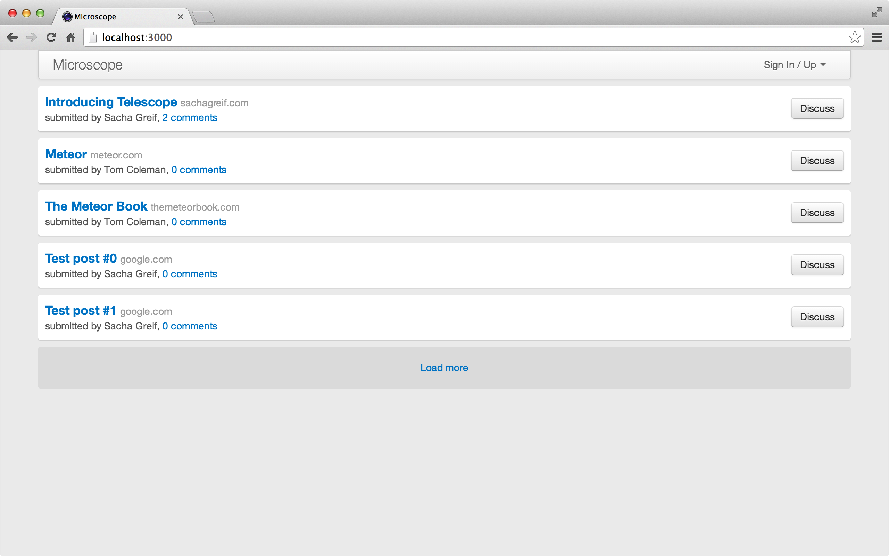“load more” 按钮。
提交 12-4 添加 nextPath() 到控制器中并使用它来取得更多帖子。
更好的用户体验
现在我们的分页可以工作了，但是有个烦人小问题: 每次我们点击 “load more” 按钮向 router 加载更多的帖子时，Iron Router 的 waitOn 特性会在我们等待时显示 loading 模板。当结果到来时我们又会回到页面的顶端，我们每次都要滚动页面回到之前看的位置。
因此，首先我们要告诉 Iron Router 不要 waintOn 订阅，我们将定义自己的订阅在一个 subscriptions hook 中。
注意我们我们不是在 hook 中返回 这个订阅。返回它（这是一般 订阅 hook 常做的工作）将触发一个全局的 loading hook, 这正是我们想要避免的。我们只是想在 subscriptions hook 中定义我们的订阅，就像使用一个 onBeforeAction hook。
我们还要在我们的数据上下文中传入一个 ready 变量，它指向 this.postsSub.ready。它会告诉我们帖子订阅何时加载完毕。
//...
PostsListController = RouteController . extend ({
template : 'postsList' ,
increment : 5 ,
postsLimit : function () {
return parseInt ( this . params . postsLimit ) || this . increment ;
},
findOptions : function () {
return { sort : { submitted : - 1 }, limit : this . postsLimit ()};
},
subscriptions : function () {
this . postsSub = Meteor . subscribe ( 'posts' , this . findOptions ());
},
posts : function () {
return Posts . find ({}, this . findOptions ());
},
data : function () {
var hasMore = this . posts (). count () === this . postsLimit ();
var nextPath = this . route . path ({ postsLimit : this . postsLimit () + this . increment });
return {
posts : this . posts (),
ready : this . postsSub . ready ,
nextPath : hasMore ? nextPath : null
};
}
});
//...
lib/router.js
我们将在模板中检查 ready 变量的状态，并在加载帖子时在帖子列表的下面显示一个加载图标(spinner):
<template name= "postsList" >
<div class= "posts" >
{{#each posts}}
{{> postItem}}
{{/each}}
{{#if nextPath}}
<a class= "load-more" href= "{{nextPath}}" > Load more</a>
{{else}}
{{#unless ready}}
{{> spinner}}
{{/unless}}
{{/if}}
</div>
</template> client/templates/posts/posts_list.html
访问任何帖子
现在我们默认每次加载 5 条新帖子，但是当用户访问某个帖子的单独页面时会发生什么?
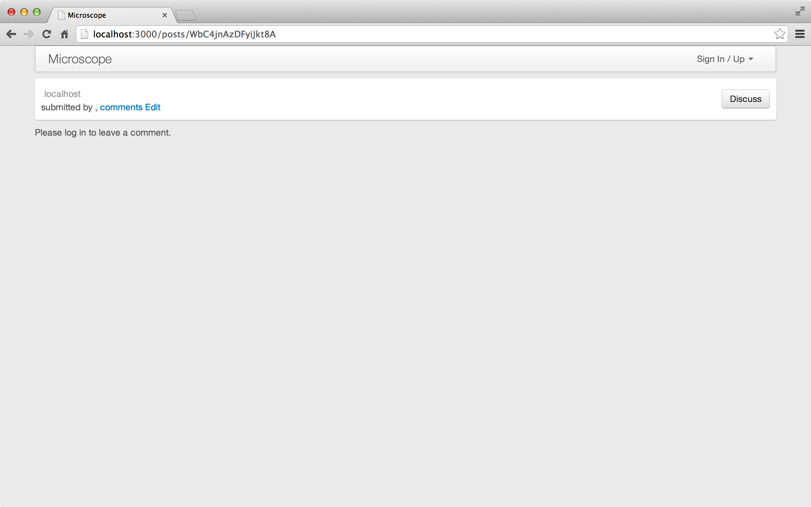一个空模板。
试一下，我们会得到一个 “not found” 错误。这是有原因的: 我们告诉 router 当我们加载 postList route 时订阅 帖子 发布。但是我们没有说访问 postPage route 时该做什么。
但是到目前，我们知道如何订阅一个 n 个最新帖子的列表。我们如何向服务器端要求单个具体帖子的内容? 我们将告诉你一个小秘密: 对于一个 collection 你可以有多个 publication！
让我们找回丢失的帖子，我们定义一个新的 publication singlePost,它只发布一个帖子，用 _id 鉴别。
Meteor . publish ( 'posts' , function ( options ) {
return Posts . find ({}, options );
});
Meteor . publish ( 'singlePost' , function ( id ) {
check ( id , String )
return Posts . find ( id );
});
//...
server/publications.js
现在，让我们在客户端订阅正确的帖子。我们已经在 postPage route 的 wainOn 函数中订阅了 comments 发布，因此我们可以也在这里加入 singlePost 订阅。让后别忘了在 postEdit route 中加入我们的订阅, 因为那里也需要相同的数据:
//...
Router . route ( '/posts/:_id' , {
name : 'postPage' ,
waitOn : function () {
return [
Meteor . subscribe ( 'singlePost' , this . params . _id ),
Meteor . subscribe ( 'comments' , this . params . _id )
];
},
data : function () { return Posts . findOne ( this . params . _id ); }
});
Router . route ( '/posts/:_id/edit' , {
name : 'postEdit' ,
waitOn : function () {
return Meteor . subscribe ( 'singlePost' , this . params . _id );
},
data : function () { return Posts . findOne ( this . params . _id ); }
});
//...
lib/router.js
提交 12-6 使用单一帖子订阅来确保我们总会看到正确的帖子。
有了分页，我们的程序将不再受规模问题的困扰了，用户可以加入更多的帖子。如果有某种方法可以给帖子链接加上等级 (rank) 不是更好么?我们将在下一章去实现它！
投票
13
现在我们的系统更完善了，但是想要找到最受欢迎的帖子有点难。我们需要一个排名系统来给我们的帖子排个序。
我们可以建立一个基于 karma 的复杂排名系统，权值随着时间衰减，和许多其他因素（很多功能都在 Telescope 中实现了，他是 Microscope 的大哥）。但是对于我们的例子 app, 我们尽量保持简单，我们只按照帖子收到的投票数为它们排序。
让我们实现一个给用户为帖子投票的方法。
数据模型
我们将在帖子中保存投票者列表信息，这样我们能判断是否给用户显示投票按钮，并阻止用户给一个帖子投票两次。
数据隐私与发布
我们将向所有用户发布投票者名单，这样也自动使得通过浏览器控制台也可以访问这些数据。
这是一类由于集合工作方式而引发的数据隐私问题。例如，我们是否希望用户能看到谁为他的帖子投了票。在我们的例子中，公开这些信息无关紧要，但重要的是至少知道这是个问题。
我们也要非规范化帖子的投票者数量，以便更容易取得这个数值。所以我们给帖子增加两个属性，upvoters（投票者） 和 votes（票数）。让我们先在 fixtures 文件中添加它们:
// Fixture data
if ( Posts . find (). count () === 0 ) {
var now = new Date (). getTime ();
// create two users
var tomId = Meteor . users . insert ({
profile : { name : 'Tom Coleman' }
});
var tom = Meteor . users . findOne ( tomId );
var sachaId = Meteor . users . insert ({
profile : { name : 'Sacha Greif' }
});
var sacha = Meteor . users . findOne ( sachaId );
var telescopeId = Posts . insert ({
title : 'Introducing Telescope' ,
userId : sacha . _id ,
author : sacha . profile . name ,
url : 'http://sachagreif.com/introducing-telescope/' ,
submitted : new Date ( now - 7 * 3600 * 1000 ),
commentsCount : 2 ,
upvoters : [],
votes : 0
});
Comments . insert ({
postId : telescopeId ,
userId : tom . _id ,
author : tom . profile . name ,
submitted : new Date ( now - 5 * 3600 * 1000 ),
body : 'Interesting project Sacha, can I get involved?'
});
Comments . insert ({
postId : telescopeId ,
userId : sacha . _id ,
author : sacha . profile . name ,
submitted : new Date ( now - 3 * 3600 * 1000 ),
body : 'You sure can Tom!'
});
Posts . insert ({
title : 'Meteor' ,
userId : tom . _id ,
author : tom . profile . name ,
url : 'http://meteor.com' ,
submitted : new Date ( now - 10 * 3600 * 1000 ),
commentsCount : 0 ,
upvoters : [],
votes : 0
});
Posts . insert ({
title : 'The Meteor Book' ,
userId : tom . _id ,
author : tom . profile . name ,
url : 'http://themeteorbook.com' ,
submitted : new Date ( now - 12 * 3600 * 1000 ),
commentsCount : 0 ,
upvoters : [],
votes : 0
});
for ( var i = 0 ; i < 10 ; i ++ ) {
Posts . insert ({
title : 'Test post #' + i ,
author : sacha . profile . name ,
userId : sacha . _id ,
url : 'http://google.com/?q=test-' + i ,
submitted : new Date ( now - i * 3600 * 1000 + 1 ),
commentsCount : 0 ,
upvoters : [],
votes : 0
});
}
} server/fixtures.js
和之前一样，停止你的 app, 执行 meteor reset, 重启 app，创建一个新的用户。让我们确认一下用户创建帖子时，这两个新的属性也被初始化了:
//...
var postWithSameLink = Posts . findOne ({ url : postAttributes . url });
if ( postWithSameLink ) {
return {
postExists : true ,
_id : postWithSameLink . _id
}
}
var user = Meteor . user ();
var post = _ . extend ( postAttributes , {
userId : user . _id ,
author : user . username ,
submitted : new Date (),
commentsCount : 0 ,
upvoters : [],
votes : 0
});
var postId = Posts . insert ( post );
return {
_id : postId
};
//...
collections/posts.js
投票模板
开始时，我们在帖子部分添加一个点赞(upvote)按钮，并在帖子的 metadata 数据中显示被点赞次数:
<template name= "postItem" >
<div class= "post" >
<a href= "#" class= "upvote btn btn-default" > ⬆</a>
<div class= "post-content" >
<h3><a href= "{{url}}" > {{title}}</a><span> {{domain}}</span></h3>
<p>
{{votes}} Votes,
submitted by {{author}},
<a href= "{{pathFor 'postPage'}}" > {{commentsCount}} comments</a>
{{#if ownPost}}<a href= "{{pathFor 'postEdit'}}" > Edit</a> {{/if}}
</p>
</div>
<a href= "{{pathFor 'postPage'}}" class= "discuss btn btn-default" > Discuss</a>
</div>
</template> client/templates/posts/post_item.html
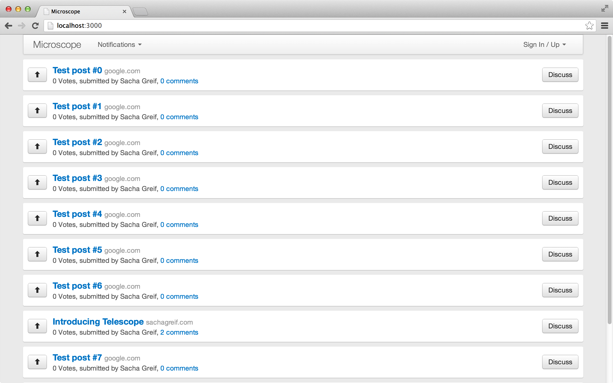Upvote 按钮
接下来，当用户点击按钮时调用服务器端的 upvote 方法:
//...
Template . postItem . events ({
'click .upvote' : function ( e ) {
e . preventDefault ();
Meteor . call ( 'upvote' , this . _id );
}
}); client/templates/posts/post_item.js
最后，我们回到 lib/collections/posts.js 文件，在其中加入一个服务器端方法来 upvote 帖子:
//...
Meteor . methods ({
post : function ( postAttributes ) {
//...
},
upvote : function ( postId ) {
check ( this . userId , String );
check ( postId , String );
var post = Posts . findOne ( postId );
if ( ! post )
throw new Meteor . Error ( 'invalid' , 'Post not found' );
if ( _ . include ( post . upvoters , this . userId ))
throw new Meteor . Error ( 'invalid' , 'Already upvoted this post' );
Posts . update ( post . _id , {
$addToSet : { upvoters : this . userId },
$inc : { votes : 1 }
});
}
});
//...
lib/collections/posts.js
这个方法很清楚。我们做了些检查确保当前用户已经登录和帖子存在。然后检查用户并没有给帖子投过票，检查如果用户没有增加过帖子的投票分数我们将用户添加到 upvoters 集合中。
最后一步我们使用了一些 Mongo 操作符。有很多操作符需要学习，但是这两个尤其有用: $addToSet 将一个 item 加入集合如果它不存在的话，$inc 只是简单的增加一个整型属性。
用户界面微调
如果用户没有登录或者已经投过票了，他就不能再投票了。我们需要修改 UI, 我们将用一个帮助方法根据条件添加一个 disabled CSS class 到 upvote 按钮。
<template name= "postItem" >
<div class= "post" >
<a href= "#" class= "upvote btn btn-default {{upvotedClass}}" > ⬆</a>
<div class= "post-content" >
//...
</div>
</template> client/templates/posts/post_item.html
Template . postItem . helpers ({
ownPost : function () {
//...
},
domain : function () {
//...
},
upvotedClass : function () {
var userId = Meteor . userId ();
if ( userId && ! _ . include ( this . upvoters , userId )) {
return 'btn-primary upvotable' ;
} else {
return 'disabled' ;
}
}
});
Template . postItem . events ({
'click .upvotable' : function ( e ) {
e . preventDefault ();
Meteor . call ( 'upvote' , this . _id );
}
}); client/templates/posts/post_item.js
我们将 css class 从 .upvote 变成 .upvotable，别忘了修改 click 事件处理函数。
变灰 upvote 按钮. 提交 13-2 变灰 upvote 链接，当未登录或已经投票。
接下来，你会发现被投过一票的帖子会显示 “1 votes ”, 下面让我们花点时间来处理单复数形式。处理单复数是个复杂的事，但在这里我们会用一个非常简单的方法。我们建一个通用的 Spacebars helper 方法来处理他们:
UI . registerHelper ( 'pluralize' , function ( n , thing ) {
// fairly stupid pluralizer
if ( n === 1 ) {
return '1 ' + thing ;
} else {
return n + ' ' + thing + 's' ;
}
}); client/helpers/spacebars.js
之前我们创建的 helper 方法都是绑定到某个模板的。但是现在我们用 UI.registerHelper 创建一个全局 的 helper 方法，我们可以在任何模板中使用它:
<template name= "postItem" >
//...
<p>
{{pluralize votes "Vote"}},
submitted by {{author}},
<a href= "{{pathFor 'postPage'}}" > {{pluralize commentsCount "comment"}}</a>
{{#if ownPost}}<a href= "{{pathFor 'postEdit'}}" > Edit</a> {{/if}}
</p>
//...
</template> client/templates/posts/post_item.html
完美复数处理（现在说 10 遍） 提交 13-3 添加复数 helper 去更好地格式化文字
现在我们看到的是 “1 vote"。
更智能的投票机制
我们的投票代码看起来还行，但是我们能做的更好。在 upvote 方法，我们两次调用 Mongo: 第一次找到帖子，第二次更新它。
这里有两个问题。首先，两次调用数据库效率会有点低。但是更重要的是，这里引入了一个竞速状态。我们的逻辑是这样的:
从数据库中找到帖子。
检查用户是否已经投票。
如果没有，用户可以投一票。
如果同一个用户在步骤 1 和 3 之间两次投票会如何？我们现在的代码会让用户给同一个帖子投票两次。幸好，Mongo 允许我们将步骤 1-3 合成一个 Mongo 命令：
//...
Meteor . methods ({
post : function ( postAttributes ) {
//...
},
upvote : function ( postId ) {
check ( this . userId , String );
check ( postId , String );
var affected = Posts . update ({
_id : postId ,
upvoters : { $ne : this . userId }
}, {
$addToSet : { upvoters : this . userId },
$inc : { votes : 1 }
});
if ( ! affected )
throw new Meteor . Error ( 'invalid' , "You weren't able to upvote that post" );
}
});
//...
collections/posts.js
我们的代码是说“找到 id 是这个并且用户没有投票的帖子，并更新他们为投票”。如果用户还没有 投票，就会找到这个 id 的帖子。如果用户已经 投过票了，就不会有结果返回。
Latency Compensation
假定你想作弊通过修改帖子投票数量来让一个帖子排到榜单的第一名:
> Posts.update(postId, {$set: {votes: 10000}});
浏览器控制台
(postId 是你某个帖子的 id)
这个无耻的企图将会被我们系统的 deny() 回调函数捕获(collections/posts.js 记得么?)并且立刻取消。
但是如果你仔细看，你可能会发现系统的延迟补偿 (latency compensation)。它可能一闪而过, 会看到帖子现在第一位闪了一下，然后回到原来的位置。
发生了什么? 在客户端的 Posts 集合，update 方法会被执行。这会立刻发生，因此帖子会来到列表第一的位置。同时，在服务器端 update 方法会被拒绝。过了一会 (如果你在本地运行 Meteor 这个时间间隔会是毫秒级的), 服务器端返回一个错误，告诉客户端 Posts 集合恢复到原来状态。
最终的结果是: 在等待服务器端返回的过程中，UI 只能相信客户端本地集合数据。当服务器端一返回拒绝了修改，UI 就会使用服务器端数据。
排列首页的帖子
现在每个帖子都有一个基于投票数的分数，让我们显示一个最佳帖子的列表。这样，我们将看到如何管理对于帖子集合的两个不同的订阅，并将我们的 postsList 模板变得更通用一些。
首先，我们需要两个 订阅，分别用来排序。这里的技巧是两个订阅同时订阅同一个 posts 发布，只是参数不同！
我们还需要新建两个路由 newPosts 和 bestPosts，分别通过 URL /new 和 /best 访问（当然，使用 /new/5 和 /best/5 进行分页）。
我们将继承 PostsListController 来生成两个独立的 NewPostsListController 和 BestPostsListController 控制器。对于 home 和 newPosts 路由，我们可以使用完全一致的路由选项，通过继承同一个 NewPostsListController 控制器。另外，这是一个很好的例子说明 Iron Router 的灵活性。
让我们用 NewPostsListController 和 BestPostsListController 提供的 this.sort 替换 PostsListController 的排序属性 {submitted: -1}:
//...
PostsListController = RouteController . extend ({
template : 'postsList' ,
increment : 5 ,
postsLimit : function () {
return parseInt ( this . params . postsLimit ) || this . increment ;
},
findOptions : function () {
return { sort : this . sort , limit : this . postsLimit ()};
},
subscriptions : function () {
this . postsSub = Meteor . subscribe ( 'posts' , this . findOptions ());
},
posts : function () {
return Posts . find ({}, this . findOptions ());
},
data : function () {
var hasMore = this . posts (). count () === this . postsLimit ();
return {
posts : this . posts (),
ready : this . postsSub . ready ,
nextPath : hasMore ? this . nextPath () : null
};
}
});
NewPostsController = PostsListController . extend ({
sort : { submitted : - 1 , _id : - 1 },
nextPath : function () {
return Router . routes . newPosts . path ({ postsLimit : this . postsLimit () + this . increment })
}
});
BestPostsController = PostsListController . extend ({
sort : { votes : - 1 , submitted : - 1 , _id : - 1 },
nextPath : function () {
return Router . routes . bestPosts . path ({ postsLimit : this . postsLimit () + this . increment })
}
});
Router . route ( '/' , {
name : 'home' ,
controller : NewPostsController
});
Router . route ( '/new/:postsLimit?' , { name : 'newPosts' });
Router . route ( '/best/:postsLimit?' , { name : 'bestPosts' }); lib/router.js
注意现在我们有多个路由，我们将 nextPath 逻辑从 PostsListController 移到 NewPostsController 和 BestPostsController, 因为两个控制器的 path 都不相同。
另外，当我们根据投票数排序时，然后根据发布时间戳和 _id 确保顺序。
有了新的控制器，我们可以安全的删除之前的 postList 路由。删除下面的代码：
Router.route('/:postsLimit?', {
name: 'postsList'
})
lib/router.js
在 header 中加入链接：
<template name= "header" >
<nav class= "navbar navbar-default" role= "navigation" >
<div class= "container-fluid" >
<div class= "navbar-header" >
<button type= "button" class= "navbar-toggle collapsed" data-toggle= "collapse" data-target= "#navigation" >
<span class= "sr-only" > Toggle navigation</span>
<span class= "icon-bar" ></span>
<span class= "icon-bar" ></span>
<span class= "icon-bar" ></span>
</button>
<a class= "navbar-brand" href= "{{pathFor 'home'}}" > Microscope</a>
</div>
<div class= "collapse navbar-collapse" id= "navigation" >
<ul class= "nav navbar-nav" >
<li>
<a href= "{{pathFor 'newPosts'}}" > New</a>
</li>
<li>
<a href= "{{pathFor 'bestPosts'}}" > Best</a>
</li>
{{#if currentUser}}
<li>
<a href= "{{pathFor 'postSubmit'}}" > Submit Post</a>
</li>
<li class= "dropdown" >
{{> notifications}}
</li>
{{/if}}
</ul>
<ul class= "nav navbar-nav navbar-right" >
{{> loginButtons}}
</ul>
</div>
</div>
</nav>
</template> client/templates/includes/header.html
最后，我们还需要更新帖子的删除 deleting 事件处理函数:
'click .delete': function(e) {
e.preventDefault();
if (confirm("Delete this post?")) {
var currentPostId = this._id;
Posts.remove(currentPostId);
Router.go('home');
}
}
client/templates/posts_edit.js
这些都做完了，现在我们得到了一个最佳帖子列表：
通过票数排列 更好的 Header
现在我们有两个帖子列表页面，你很难分清你正在看的是哪个列表。现在让我们把页面的 header 变得更明显些。我们将创建一个 header.js manager 并创建一个 helper 使用当前的路径和一个或者多个命名路由来给我们的导航条加一个 active class:
支持多个命名路由的原因是 home 和 newPosts 路由 (分别对应 URL / 和 new) 使用同一个模板。这意味着我们的 activeRouteClass 足够聪明可以处理以上情形将 <li> 标签标记为 active。
<template name= "header" >
<nav class= "navbar navbar-default" role= "navigation" >
<div class= "container-fluid" >
<div class= "navbar-header" >
<button type= "button" class= "navbar-toggle collapsed" data-toggle= "collapse" data-target= "#navigation" >
<span class= "sr-only" > Toggle navigation</span>
<span class= "icon-bar" ></span>
<span class= "icon-bar" ></span>
<span class= "icon-bar" ></span>
</button>
<a class= "navbar-brand" href= "{{pathFor 'home'}}" > Microscope</a>
</div>
<div class= "collapse navbar-collapse" id= "navigation" >
<ul class= "nav navbar-nav" >
<li class= "{{activeRouteClass 'home' 'newPosts'}}" >
<a href= "{{pathFor 'newPosts'}}" > New</a>
</li>
<li class= "{{activeRouteClass 'bestPosts'}}" >
<a href= "{{pathFor 'bestPosts'}}" > Best</a>
</li>
{{#if currentUser}}
<li class= "{{activeRouteClass 'postSubmit'}}" >
<a href= "{{pathFor 'postSubmit'}}" > Submit Post</a>
</li>
<li class= "dropdown" >
{{> notifications}}
</li>
{{/if}}
</ul>
<ul class= "nav navbar-nav navbar-right" >
{{> loginButtons}}
</ul>
</div>
</div>
</nav>
</template> client/templates/includes/header.html
Template . header . helpers ({
activeRouteClass : function ( /* route names */ ) {
var args = Array . prototype . slice . call ( arguments , 0 );
args . pop ();
var active = _ . any ( args , function ( name ) {
return Router . current () && Router . current (). route . getName () === name
});
return active && 'active' ;
}
}); client/templates/includes/header.js
显示当前页面 Helper 参数
到现在为止我们没有使用特殊的设计模式，但是像其他 Spacebars 标签一样，模板的 helper 标签可以带参数。
你可以给你的函数传递命名的参数，你也可以传入不指定数量的匿名参数并在函数中用 arguments 对象访问他们。
在最后一种情况，你可能想将 arguments 对象转换成一个一般的 JavaScript 数组，然后调用 pop() 方法移除末尾的内容。
对于每一个导航链接， activeRouteClass helper 可以带一组路由名称，然后使用 Underscore 的 any() helper 方法检查哪一个通过测试 (例如: 他们的 URL 等于当前路径)。
如果路由匹配当前路径，any() 方法将返回 true。最后，我们利用 JavaScript 的 boolean && string 模式，当 false && myString 返回 false, 当 true && myString 返回 myString。
现在用户可以给帖子实时投票了，你将看到帖子随着得票多少上下变化。如果有一些动画效果不是更好？
高级发布机制
13.5
目前你应该对发布和订阅交互模式有一个不错的掌握了。因此，我们废话少说，来看几个更高级的情景。
多次发布一个集合
在我们第一个关于发布的附录中 ，我们看到了一些更普遍的发布和订阅模式，同时我们学习了 _publishCursor 函数，如何让它们非常容易地实现在我们的站点上。
首先，让我们回忆 _publishCursor 到底为我们做了什么：它将整理所有的文档以匹配一个给定的游标（cursor），并将它们推送至同名的 客户端集合中。注意这与 publication 的名字是不关联的。
这意味着我们可以用不止一个 publicaton 去连接任何集合的客户端与服务端版本。
我们已经在分页章节 用过这个模式，当我们在当前显示的帖子之外，再发布一个所有帖子的分页后的子集。
另一个相似的用例是发布一大组文档的预览 ，和单个文档的全部信息：
两次发布一个集合 Meteor . publish ( 'allPosts' , function () {
return Posts . find ({}, { fields : { title : true , author : true }});
});
Meteor . publish ( 'postDetail' , function ( postId ) {
return Posts . find ( postId );
}); 现在客户端订阅这两个发布，这 'posts' 集合来自于两个源渠道：来自第一个订阅的标题和作者姓名列表，和来自第二个订阅的单个帖子全部信息。
你也许意识到了 postDetail 发布的帖子也被 allPosts 发布了（尽管只有它的部分属性）。但是，Meteor 会合并字段及确认没有重复的帖子，来处理数据重叠的问题。
这是很棒的，因为现在当我们呈现帖子摘要列表时，我们正在处理的数据对象正好拥有我们需要显示的足够数据。但是，当我们呈现单
个帖子时，我们有一切需要展示的数据。当然，在这种情况下，我们需要让客户端不要去期待所有帖子的所有字段都能都显示出来————这是一个常见的问题！
注意你并没有改变文档属性的任何限制。你可以很好地在这两个发布中发布同样的属性，但是先后排序不同。
Meteor . publish ( 'newPosts' , function ( limit ) {
return Posts . find ({}, { sort : { submitted : - 1 }, limit : limit });
});
Meteor . publish ( 'bestPosts' , function ( limit ) {
return Posts . find ({}, { sort : { votes : - 1 , submitted : - 1 }, limit : limit });
}); server/publications.js
多次订阅一个发布
我们已经看了如何多次发布同一个集合。事实证明你可以通过另一个模式来完成非常相近的结果：建立一个单一发布，却多次订阅 它。
在 Microscope 中，我们多次重复订阅 posts 发布，但 Iron Router 为我们设置并拆开每次的订阅。然而，没有理由我们不能同时进行 多次订阅。
举个例子，我们想要将最新的和最好的帖子同时载入内存：
对一个发布订阅两次 我们设定一个单一发布：
Meteor . publish ( 'posts' , function ( options ) {
return Posts . find ({}, options );
}); 并且我们多次订阅这个发布。事实上或多或少我们在 Microscope 里这样做了：
Meteor . subscribe ( 'posts' , { submitted : - 1 , limit : 10 });
Meteor . subscribe ( 'posts' , { baseScore : - 1 , submitted : - 1 , limit : 10 }); 接下来到底发生什么了？每个浏览器开启了两个 不同的订阅，每个订阅连接到同个 服务端的发布。
每个订阅提供了不同的发布参数，但从根本上，每次一个（不同）文档子集从 posts 集合提取出来，并通过连接机制发送到客户端集合。
你甚至可以用同样的参数 订阅两次相同的发布。这个对很多处场景来说很难说有用，但这种弹性机制总有一天会有用的。
单一订阅中的多个集合
不像传统关系型数据库像 MySQL 使用 joins ，NoSQL 数据库类似 Mongo 都是关于去规范化 和嵌入 。让我们看看它们是怎样在 Meteor 环境下工作的。
让我们看一个具体的例子。我们已经对我们的帖子添加了评论，到目前为止，我们一直很愉快地只发布用户看的单个帖子的评论。
但是，假设我们希望在首页中显示全部 帖子的回复（记着这些帖子会在分页时被改变）。这个用例展示了一个很好的理由把评论嵌入帖子中，事实上这是促使我们来非规范化评论数量 。
当然我们可以总是嵌入评论到帖子中，并完全摒除 Comments 集合。但如同我们前面在去规范化 章节看到的，我们将在分离的集合的操作中也会失去一些额外的好处。
但是事实证明有一个涉及订阅的技巧，在保持分离集合的同时再嵌入我们的评论。
让我们假定除了首页帖子列表之外，我们希望再订阅每个帖子的两个最新评论。
使用独立的评论发布会很难完成这个要求，尤其在帖子列表受到某些限制时（比如说，最近的10个）。我们必须写一个发布，看起来像下面的代码：
一个订阅中的两个集合 Meteor . publish ( 'topComments' , function ( topPostIds ) {
return Comments . find ({ postId : topPostIds });
}); 从性能角度来看这是个问题，因为这个发布将需要每次在 topPostIds 改变时消除及重新建立。
有一个途径来解决这个问题。我们可以应用这个事实：就是我们不仅可以在每个集合 上拥有多次发布 ，而且我们也可以在每个发布 上拥有多个集合 。
Meteor . publish ( 'topPosts' , function ( limit ) {
var sub = this , commentHandles = [], postHandle = null ;
// send over the top two comments attached to a single post
function publishPostComments ( postId ) {
var commentsCursor = Comments . find ({ postId : postId }, { limit : 2 });
commentHandles [ postId ] =
Mongo . Collection . _publishCursor ( commentsCursor , sub , 'comments' );
}
postHandle = Posts . find ({}, { limit : limit }). observeChanges ({
added : function ( id , post ) {
publishPostComments ( id );
sub . added ( 'posts' , id , post );
},
changed : function ( id , fields ) {
sub . changed ( 'posts' , id , fields );
},
removed : function ( id ) {
// stop observing changes on the post's comments
commentHandles [ id ] && commentHandles [ id ]. stop ();
// delete the post
sub . removed ( 'posts' , id );
}
});
sub . ready ();
// make sure we clean everything up (note `_publishCursor`
// does this for us with the comment observers)
sub . onStop ( function () { postHandle . stop (); });
}); 注意我们在这个发布中没有返回任何东西，因为我们自己手动给 sub 发送信息（通过 .added() 等方式）。所以我们不必通过返回一个游标来请求 _publishCursor 给我们来做这个动作。
现在，每次我们发布一个帖子时，我们也自动发布其2个最新评论。而且所有都在一个订阅调用中！
虽然 Meteor 还未直接实现这个方法，但是你也可以参考在 Atomsphere 里的 publish-with-relations 包，它的目标就是让这个模式更容易使用。
连接不同的集合
这样的订阅弹性机制还能给我们更多新知识么？当然，如果我们不使用 _publishCursor，我们不必跟着此项约束，就是在服务端的源集合需要与客户端的目标集合有同样的名称。
一个集合对两个订阅 为什么我们想这么做的一个原因就是单表继承 。
假设我们需要从我们的帖子中引用多种类型的对象，每一个对象存储在相同字段中但又显然是不同内容。例如，我们建立一个类似 Tumblr 的博客引擎，每个帖子具有常见的 ID、时间戳，以及标题；但是额外也有如图像、视频、链接，或者只是文字。
我们可以将这些对象存储在一个单独的 'resources' 集合中，使用 type 属性来标记他们是什么类型的对象（video、image、link 等等）。
同时，虽然我们有一个服务端的单一的 Resources 集合，我们也能够将单一集合转换到多个的 Videos、`Images'，等等集合中。
客户端的集合如下的代码：
Meteor . publish ( 'videos' , function () {
var sub = this ;
var videosCursor = Resources . find ({ type : 'video' });
Mongo . Collection . _publishCursor ( videosCursor , sub , 'videos' );
// _publishCursor doesn't call this for us in case we do this more than once.
sub . ready ();
});
我们告诉 _publishCursor (就像返回）游标会做的一样发布我们的视频，但不是将 resources 集合发布到客户端，而是我们从 resources 发布到 videos。
另一个类似的主意是：发布到客户端的集合，却根本没有服务端集合 ！举例，你也许从一个第三方服务中抓取数据，并发布它们到一个客户端集合。
由于发布 API 的灵活性，可能性是无限的。
动画
14
我们现在有了实时的投票、评分和排名。然而，由于帖子在首页上跳来跳去，导致了跳动不稳的用户体验。我们用动画来平滑这种过渡。
介绍 _uihooks
_uihooks 相对较新，Blaze 文档也未包含该特性。正如其名称所示，它提供了每当插入、删除或动画元素时可以被触发的 hooks。
Hooks 的全部清单如下：
insertElement: 当新元素被插入时调用。moveElement: 当元素被移动时调用。removeElement: 当元素被删除时调用。
一旦定义，这些 hooks 就会替代 Meteor 的默认行为。换句话说，Meteor 会用我们规定的行为来替代默认的插入、移动或删除元素的行为 ———— 这由我们来确定这行为会真正地工作！
Meteor 与 DOM
在我们开始有趣部分（使东西移动）之前，我们需要理解 Meteor 如何与 DOM（Document Object Model————组成页面内容的 HTML 元素集合）交互的。
要记住的最关键的一点是，DOM 元素不能真正被“移动”；但是，它们可以被删除，被创建（注意，这是 DOM
本身的限制，而不是 Meteor 的）。所以要给元素 A 和 B 互换位置的错觉，Meteor 实际上会删除元素 B，并在元素 A
前插入一个全新的副本（B'）。
这使得动画有点麻烦，因为我们不能只是把 B 动画移动到新位置，因为 B 在 Meteor 重新渲染页面时就会消失（由于响应性，这瞬间发生）。但请不要担心，我们会找到一个解决办法。
苏联赛跑者
不过首先，让我们讲个故事。
在 1980 年，正值冷战。奥运会正在莫斯科举行，苏联决心不惜任何代价要赢得 100 米短跑的金牌。所以，一群聪明的苏联科学家为其中一名运动员装备了一台传送器，只要枪声一响，那名运动员就会瞬间消失，通过时空连续的作用直接出现在终点线上。
还好，赛事官员立刻注意到了这个违规行为，这名运动员没有办法只好又瞬时移动回到起跑器上，才能被允许像其他选手一样赛跑参赛。
我的历史资料没有那么可靠，所以你应该对这个故事半信半疑。但是，尽量尝试记住“有传送器的苏联赛跑者”这个比喻，我们要在这一章中用到这一点。
分解
当 Meteor 接收到更新并实时地更改 DOM 时，我们的帖子会立即传送到它的终点位置，就像苏联赛跑者一样。但是不论是在奥运会还是在我们的应用中，我们不能瞬移任何东西。所以我们需要把元件传送回到“起跑器”上，使它“跑”（换句话说，“动画”它）到终点。
所以交换帖子 A 和 B （分别位于 p1 和 p2 位置），我们会经过如下步骤：
删除 B
在 DOM 中，在 A 之前创建 B'
传送 B' 到 p2 位置
传送 A 到 p1 位置
动画 A 到 p2 位置
动画 B' 到 p1 位置
下面图表详细解释上述步骤：
两个帖子换位 再次说明，第 3 、4 步中，我们没有动画 A 和 B' 到它们的位置，而是瞬间“传送”了它们。因为这是瞬间发生的，这会产生 B 没有被删除的幻觉，并且两个元素被动画到了它们的新位置。
默认情况下，Meteor 负责步骤 1 和 2，我们自己很容易重新实施它们。在步骤 5 和 6 中所有我们在做的事情是移动元素到正确的位置。因此，唯一我们真正需要担心的部分是步骤 3 和 4，即，发送元素到动画的起点。
CSS 定位
为了在页面中动画渲染的帖子，我们必须用到 CSS 样式。让我们按顺序快速浏览 CSS 定位。
页面元素默认使用静态 定位。静态定位的元素适应页面内容流，它们在屏幕上的坐标不能更改或动画。
另一方面，相对 定位是说元素也同样适应页面内容流，但是可以相对于原始位置 进行定位。
绝对 定位更进一步，允许你规定元素的 x/y 坐标，坐标相对于文档 或第一个绝对或相对定位的父元素 。
我们使用相对定位来动画我们的帖子。我们已经为你准备好了 CSS，你需要做的就是将代码添加到你的样式表中：
.post {
position : relative ;
transition : all 300ms 0ms ease-in ;
} client/stylesheets/style.css
这使步骤 5 和 6 变得简单：我们需要做的是重置 top 坐标值为 0px（默认值），帖子就会回到它们“正常的”位置。
基本上，我们仅有的挑战是搞明白元素要从相对于它们新位置的哪里开始动画（步骤 3 和 4），换句话说，它们要偏移多少。但这也不难：正确的偏移量就是帖子的原来位置减去它的新位置。
使用 _uihooks
既然我们了解了为帖子列表添加动画的各种因素，我们算是准备好开始添加动画了。我们首先需要把帖子列表放入一个新的 .wrapper 容器元素中：
<template name= "postsList" >
<div class= "posts page" >
<div class= "wrapper" >
{{#each posts}}
{{> postItem}}
{{/each}}
</div>
{{#if nextPath}}
<a class= "load-more" href= "{{nextPath}}" > Load more</a>
{{else}}
{{#unless ready}}
{{> spinner}}
{{/unless}}
{{/if}}
</div>
</template> /client/templates/posts/post_list.html
在做其他事情之前，让我们看看当前没有 动画效果的帖子列表：
没有动画效果的帖子列表。 现在让我们加入 _uihooks。在模板 onRendered 回调函数中，选择 .wrapper div，并定义一个 moveElement 的 hook。
Template . postsList . onRendered ( function () {
this . find ( '.wrapper' ). _uihooks = {
moveElement : function ( node , next ) {
// 现在不做任何事情
}
}
}); /client/templates/posts/post_list.js
刚刚定义的 moveElement 会在元素位置改变时被调用，从而取代 Blaze 的默认行为。由于现在这个函数还是空的，意味着什么都不会发生 。
去试一下：打开“Best”最佳帖子页面，给一些帖子投票：帖子排序不会发生变化，除非强制刷新（刷新页面或改变路径）。
空的 moveElement 回调函数：什么也不会发生 我们已经验证 _uihooks 可以工作，现在让我们来动画它！
帖子排序的动画效果
moveElement hook 接受两个参数：node 和 next。
node 是当前正在移动到新位置的 DOM 元素next 是 node 移动的新位置之后 的元素
了解这些之后，我们可以逐一实现如下动画过程（如果你需要刷新一下你的记忆，可参考之前“苏联赛跑者”的例子）。当一个新的位置改变发生时，我们将：
在 next 前插入 node（换句话说，如果我们没有指定任何 moveElement hook 的话，默认行为就会发生）。
移动 node 回到它的起始位置。
微调 node 和 next 之间的每个元素，为 node 腾出空间。
动画所有元素回到它们的新默认位置。
我们通过 jQuery 的魔力来做这些事情，这也是迄今为止最好的操作 DOM 的 JavaScript 库。jQuery 已经超出本书范围，但是让我们快速浏览一下我们即将用到的 jQuery 方法：
Template . postsList . onRendered ( function () {
this . find ( '.wrapper' ). _uihooks = {
moveElement : function ( node , next ) {
var $node = $ ( node ), $next = $ ( next );
var oldTop = $node . offset (). top ;
var height = $node . outerHeight ( true );
// 找出 next 与 node 之间所有的元素
var $inBetween = $next . nextUntil ( node );
if ( $inBetween . length === 0 )
$inBetween = $node . nextUntil ( next );
// 把 node 放在预订位置
$node . insertBefore ( next );
// 测量新 top 偏移坐标
var newTop = $node . offset (). top ;
// 将 node *移回*至原始所在位置
$node
. removeClass ( 'animate' )
. css ( 'top' , oldTop - newTop );
// push every other element down (or up) to put them back
$inBetween
. removeClass ( 'animate' )
. css ( 'top' , oldTop < newTop ? height : - 1 * height );
// 强制重绘
$node . offset ();
// 动画，重置所有元素的 top 坐标为 0
$node . addClass ( 'animate' ). css ( 'top' , 0 );
$inBetween . addClass ( 'animate' ). css ( 'top' , 0 );
}
}
}); /client/templates/posts/post_list.js
注解：
我们计算 $node 的高度，便于知道要偏移 $inBetween 的元素多少距离。我们使用 outerHeight(true) 使 margin 和 padding 加入计算中。
在 DOM 中，我们不知道 next 是在 node 之前还是之后，所以我们在定义 $inBetween 时同时考虑这两种情况。
为了在“传送 teleporting”和“动画 animating”元素之间转换，我们简单地 toggle animate CSS 类（在 CSS 样式表中定义了实际动画）。
由于我们用相对定位，所以我们总可以通过重置任何元素的 top 属性值为 0 来把元素归位到应在位置。
强制 Redraw
你也许在想 $node.offset() 这行代码。为什么我们不打算移动 $node，而去关心它的位置呢？
要这么想：如果你告诉一台有完美逻辑的机器人向北奔跑 5 千米，跑完后再跑回起点，它也许认为既然又回到起点，那么何不节省能量而待在原地。
所以为了确保机器人能跑完 10 千米，我们会告诉它在跑到 5 千米时记录它的坐标才能转向。
浏览器以相似的方式工作：如果我们在同一时间只给出 css('top', oldTop - newTop) 和 css('top', 0) 的话，新坐标就会简单地替换旧坐标，什么也不会发生。如果我们想真正地看到动画，就需要强制浏览器去在元素改变位置后重新绘制它。
一个简单的强制重绘的方法是让浏览器检查元素的 offset 属性————再次重绘元素才能让浏览器识别它。
让我们再试一次。回到“Best”最佳帖子页面，给帖子投票：现在应该可以看到帖子如芭蕾舞般优雅地上下滑动。
带动画的排序 Can’t Fade Me
既然我们已经搞定比较难的重新排序，那么插入和删除帖子的动画就是小菜一碟了！
首先，我们渐入新帖子（注意为了简单，我们在此用 JavaScript 动画）：
Template . postsList . onRendered ( function () {
this . find ( '.wrapper' ). _uihooks = {
insertElement : function ( node , next ) {
$ ( node )
. hide ()
. insertBefore ( next )
. fadeIn ();
},
moveElement : function ( node , next ) {
//...
}
}
}); /client/templates/posts/post_list.js
为了更好看到效果，我们通过控制台插入新帖子，来测试动画：
Meteor . call ( 'postInsert' , { url : 'http://apple.com' , title : 'Testing Animations' }) 渐入新帖子 其次，我们动画淡出删除的帖子：
Template . postsList . onRendered ( function () {
this . find ( '.wrapper' ). _uihooks = {
insertElement : function ( node , next ) {
$ ( node )
. hide ()
. insertBefore ( next )
. fadeIn ();
},
moveElement : function ( node , next ) {
//...
},
removeElement : function ( node ) {
$ ( node ). fadeOut ( function () {
$ ( this ). remove ();
});
}
}
}); /client/templates/posts/post_list.js
再次，在控制台（用 Posts.remove('somePostId')）删除一个帖子来测试动画效果。
动画淡出删除的帖子 提交 14-2 Fade items in when they are drawn.
页面过渡
到目前为止，我们已经在页面内动画了元素。但是如果我们想添加页面之间的过渡动画呢？
页面过渡是 Iron Router 的任务。点击一个链接，{{> yield}} helper 的内容自动地更换。
就像我们为帖子列表改变 Blaze 默认行为一样，我们也可以为 {{> yield}} 做同样的事情，在不同路由之间添加渐隐过渡动画效果！
如果我们想渐入渐隐页面，我们必须要确保它们在各自上方显示。我们用添加了 position:absolute 属性的 .page container div 来包裹每个页面模板。
但不能相对于窗口来绝对定位我们的页面，因为这样页面会覆盖应用的 header。所以我们给 #main div 添加 position:relative 以便 .page div 的 position:absolute 会得到其正确位置。
为了节省时间，我们已经在 sytle.css 中添加了必要的 CSS 代码：
//...
#main {
position : relative ;
}
.page {
position : absolute ;
top : 0px ;
width : 100 % ;
}
//... /client/stylesheets/style.css
是时候添加页面过渡代码了。代码看起来很熟悉，因为这和我们添加和删除帖子时的代码完全一致：
Template . layout . onRendered ( function () {
this . find ( '#main' ). _uihooks = {
insertElement : function ( node , next ) {
$ ( node )
. hide ()
. insertBefore ( next )
. fadeIn ();
},
removeElement : function ( node ) {
$ ( node ). fadeOut ( function () {
$ ( this ). remove ();
});
}
}
}); /client/templates/application/layout.js
页面之间的过渡动画 我们刚刚看了一些为 Meteor 应用添加动画元素的模式。虽然这不是一个详尽的清单，但是希望这会提供一个基础，在其上去构建更复杂的过渡动画。
更进一步
14.5
我们希望，之前的章节给了你一个良好的概述，如何构建一个 Meteor 应用。但是，现在你还要去哪里呢？
额外章节
首先，如果你还没有购买本书的话，你可以购买 Full 或 Premium 版本来阅读本书额外的章节。这些章节将引导你深入真实场景，比如为你的应用建立 API，与第三方服务集成和迁移数据。
Meteor 手册
除了官方 documentation ，Meteor Manual 挖掘更深度的特定主题，比如 Tracker 和 Blaze。
Evented Mind
如果你更深入研究 Meteor 的复杂性，我们也强烈建议 Chris Mather 的 Evented Mind 的视频学习平台，有超过 50 个独立的 Meteor 视频（每周都会增加新视频）。
MeteorHacks
跟上 Meteor 的最佳途径之一是订阅 Arunoda Susiripala 的 MeteorHacks weekly newsletter。该 MeteorHacks 博客也是一个关于高级 Meteor 技巧的重要资源。
Atmosphere
Atmosphere ，Meteor 的非官方代码包库，是学习更多 Meteor 的另一个伟大资源：你可以发现新的代码包，查看他人的代码，学习他人使用的模式。
（免责声明：Atmosphere 由本书作者之一 Tom Coleman 维护的。）
Meteorpedia
Meteorpedia 是 Meteor 的维基百科。当然，它是用 Meteor 构建的！
BulletProof Meteor
另一个来自 MeteorHacks 的 Arunoda 的作品，BulletProof Meteor ，带领你通过一系列专注 Meteor 性能的课程，每一步通过问答形式来测试你的知识。
Meteor 播客
来自 Meteor shop Differential 的 Josh 和 Ry 每周录制 the Meteor Podcast ，这也是一个非常好的方式来跟上 Meteor 社区所发生的事情。
其他资源
Stephan Hochhaus 汇总了一个非常详尽的 Meteor 资源 列表。
Manuel Schoebel 的博客也是一个不错的 Meteor 资源。Gentlenode 博客 也是同样。
获得帮助
如果你碰上一个绊脚石，求助的最好地方是 Stack Overflow 。确保你用 meteor 标签标记你的问题。
社区
最后，保持跟上 Meteor 更新的最好办法是要在社区中活跃。我们建议你加入 Meteor 邮件列表 ，跟踪 Meteor Core 和 Meteor Talk 谷歌论坛，并注册一个 Meteor 论坛 Crater.io 的账号。
Meteor 术语表
99
客户端 Client
当我们谈论客户端时，我们指的是用户的网页浏览器 ，不论是传统的像 Firebox 或 Safari 的浏览器，或是像在 iPhone 原生应用中的 UIwebView 一样复杂的其他程序。
集合 Collection
Meteor 的集合是自动在客户与服务器之间同步的数据源。集合的名称（比如 posts）通常存在于客户端和服务器端。虽然它们表现不同，但是它们有共同的基于 Mongo 的 API。
Computation
Computation 就是每当响应数据源变化时而运行的代码块。如果你想让一个响应数据源去响应处理（比如，Session 变量），你需要为它来设置一个 computation。
Cursor
Cursor 是查询 Mongo 集合后的结果。在客户端，cursor 不仅仅是结果的数组，也是一个响应的 对象，对应于相关集合的添加、删除和更新对象。
分布式数据协议 DDP
DDP 是 Meteor 的分布式数据协议，用来同步集合和调用方法。DDP 的目的是作为一个通用的协议，在大数据的实时应用中起 HTTP 的作用。
Tracker
Tracker 是 Meteor 响应性系统。Tracker 在后台使 HTML 自动保持与底层数据模型的同步。
文档 Document
Mongo 是基于文档（document）的数据库，多个文档组成集合。它们是纯 JavaScript 对象（虽然它们不能包含函数），只有一个 _id 属性，Meteor 用这个属性通过 DDP 跟踪这些对象的属性。
Helper
当模板需要渲染复杂的多于一个文档属性时，调用 helper 以函数方式来完成渲染任务。
延迟补偿 Latency Compensation
延迟补偿是一种在客户端模拟方法调用以避免等待服务器回应的一种技术。
Meteor Development Group (MDG)
Meteor 开发小组（MDG），开发 Meteor 的公司，区别于这个框架本身。
方法 Method
Meteor 方法是一个从客户端到服务器端的远程调用，以一些特别的逻辑保持跟踪集合的更改和允许延迟补偿。
MiniMongo
客户端的集合，是有类似 Mongo API 并存在内存的数据源。支持这种操作的库叫做“MiniMongo”，是在内存中运行的小版本的 Mongo。
代码包 Package
Meteor 代码包可以包含服务器端运行的、客户端运行的 JavaScript 代码，处理资源的说明（比如 SASS 至 CSS），处理的资源。Atmosphere 集合了社区提供的第三方代码包。
发布 Publication
一个发布就是一套为每个订阅用户而订制的数据。在服务器端设置发布。
服务器 Server
Meteor 服务器是运行在 Node.js 之上的 HTTP 和 DDP 服务器。它包含了所有的 Meteor
库，同时也包含了你的服务器端的 JavaScript 代码。当 Meteor 服务器启动时，它会连接 Mongo
数据库（在开发模式时，会自启动）。
会话 Session
在 Meteor 中，会话指的是客户端的响应数据源，用来跟踪用户所处的状态。
Subscription
订阅是为特定客户的发布的连接。订阅是运行在浏览器中的代码，与服务器的发布对话，并保持数据同步。
模板 Template
模板就是一个通过 JavaScript 生成 HTML 的方法。Meteor 默认支持 Spacebars 模板系统，但是将来也会支持其他系统。
模板数据上下文 Template Data Context
当模板渲染时，它指的是 JavaScript 对象为此次渲染提供特定的数据。通常来说，对象就是纯原始的 JavaScript 对象（POJO），经常也是集合的文档，但是它们也可以变得更复杂，可拥有函数。
更新日志
99
2015年2月10日 1.8
重写“动画”章节，使用 _uihooks。
用 .page div 包裹每个页面。
使用官方 twbs:bootstrap Bootstrap 包。
添加 .page 到 sytle.css。
使用 Template.registerHelper 替代 UI.registerHelper。
“部署”章节，删除了 Modulus 部分（现在参考其官方文档）。
“添加用户”章节，更新 db.users.find() 的结果。
“集合”章节，添加了关于 Meteor shell 的内容。
中文翻译版本于2015年2月25日更新完毕。
2014年12月5日 1.7.2
“分页”章节，添加 subscriptions 段落。
更正几处错别字和代码。
2014年11月10日 1.7.1
.
.
.
2013年5月5日 1.0
第一版。

 Tom Coleman 是 Percolate 工作室的一员。Percolate 工作室是一个程序开发商，致力于高品质的产品和用户体验。他也是 Atmosphere 包仓库的维护人之一，同时也参与开发了多个 Meteor 开源项目（例如 Iron Router）。
Tom Coleman 是 Percolate 工作室的一员。Percolate 工作室是一个程序开发商，致力于高品质的产品和用户体验。他也是 Atmosphere 包仓库的维护人之一，同时也参与开发了多个 Meteor 开源项目（例如 Iron Router）。 Sacha Greif 是一名产品设计师和网页设计师，为创业项目工作，例如 Hipmunk 和 RubyMotion。他开发了 Telescope 和 Sidebar，还是 Folyo 的创始人。
Sacha Greif 是一名产品设计师和网页设计师，为创业项目工作，例如 Hipmunk 和 RubyMotion。他开发了 Telescope 和 Sidebar，还是 Folyo 的创始人。